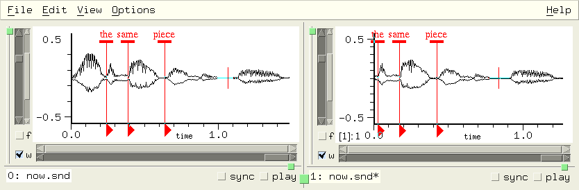
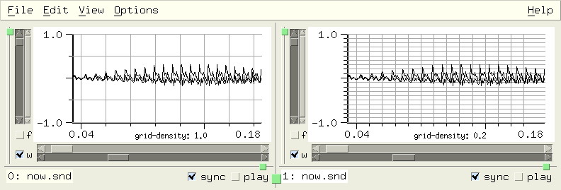

Snd Customization and Extension |
Snd is a highly customizable, extensible program.
I've tried to bring out to the extension language nearly every portion
of Snd, both the signal-processing functions and
much of the user interface. You can, for example,
add your own menu choices, editing operations,
or graphing alternatives.
Nearly everything in Snd can be set in an initialization
file, loaded at any time from a text file of program code, or specified in a saved state file.
It can also be set
via inter-process communication or from stdin
from any other program (CLM and Emacs in particular),
embedded in a keyboard macro, or typed in the
listener.
The syntax used throughout this documentation is Scheme (a form of lisp) as implemented by Guile or Gauche.
You can also use Ruby or Forth, but need to make various minor changes.
I'm slowly adding parallel Forth and Ruby examples.
The easiest way to get acquainted
with this aspect of Snd is to open the listener
(via the View:Open listener menu option), and type
experiments in its window. Its prompt is ">". So,
say we've opened the listener (my typing is
in this color and Snd's responses
are in this color):
| Scheme | | Ruby | | Forth |
|---|
>(+ 1 2)
3
| |
>1+2
3
| |
>1 2 +
3
|
>(open-sound "oboe.snd")
0
| |
>open_sound("oboe.snd")
0
| |
>"oboe.snd" open-sound
0
|
>(auto-resize)
#t
| |
>auto_resize
true
| |
>auto-resize
#t
|
>(set! (auto-resize) #f)
#f
| |
>set_auto_resize false
false
| |
>#f set-auto-resize
#f
|
>(set! (x-bounds) '(0.0 1.0))
(0.0 1.0)
| |
>set_x_bounds([0.0, 1.0])
0.01.0
| |
>'( 0.0 1.0 ) set-x-bounds
'( 0.0 1.0 )
|
>(load "bird.scm")
#<unspecified>
| |
>load "bird.rb"
true
| |
>"bird.fs" file-eval
0
|
>(map-channel (lambda (y) (* y 2)))
0
| |
>map_channel(lambda do |y| y * 2 end)
-0.0015869140625
| |
>lambda: ( y -- val) { y } y 2.0 f* ; 1 make-proc map-channel
-0.00158691
|
>(define (plus a b) (+ a b))
#<unspecified>
| |
>def plus(a, b) a+b end
| |
>: plus ( a b -- sum ) { a b } a b + ;
nil
|
>(set! (basic-color) (make-color 1 0 0))
(Pixel 16711680)
| |
>set_basic_color make_color(1, 0, 0)
[:Pixel, 16711680]
| |
>1 0 0 make-color set-basic-color
#<XmRaw: Pixel 0x9d3b430>
|
Another quick way to check out the extension language is to go to the
Preferences dialog (in the Options menu), choose some items, then
save them. The saved file (~/.snd_prefs_guile for example) is a text file, a program in the current
extension language, that initializes Snd to use whatever items you chose.
If the listener is active, and some sound
is selected, any characters typed while in the sound
graph which it can't handle are passed to the
listener; to exit the listener without using the
mouse, type C-g. This is also the way to get back to
the listener prompt if it appears to be hung; normally
in this situation,
it's actually waiting for a close paren; if you put the
cursor just past the close paren you're interested in
and type return,
Snd will flash the unbalanced open paren (if any) briefly.
In any case, whenever the cursor is just past a close paren,
the matching open paren is underlined.
Snd is organized as a list of sounds, each with a list of channels,
each channel containing lists of edits, marks, mixes, etc.
There are other objects such as colors, vcts (an optimization
of vectors), and regions; the currently active region is
called the selection. I originally presented all the
functions and variables in an enormous alphabetical
list, but that finally became unmanageable. In the following
sections, each of the basic entities is treated in a separate
section with cross-references where needed. The index
provides alphabetical entry.
There are many examples in examp.scm, examp.rb, examp.fs, and snd-test.scm.
Extensions to Snd can be found in:
| analog-filter.scm | standard IIR filters (Butterworth, Chebyshev, Bessel, Elliptic) |
| autosave.scm | auto-save (edit backup) support |
| bess.scm, bess.rb | FM demo (from bess.cl in CLM) |
| bess1.scm, bess1.rb | FM violin demo (from bess5.cl in CLM) |
| bird.scm, bird.rb | various North-American birds (from bird.clm) |
| clm-ins.scm, clm-ins.rb, clm23.scm, clm-ins.fs | various CLM instruments |
| debug.scm | debugging aids |
| dlocsig.rb | CLM's dlocsig in Ruby (Michael Scholz) |
| additional menus, etc | various contributions from Dave Phillips |
| draw.scm, draw.rb, draw.fs | graphics additions |
| dsp.scm, dsp.rb, dsp.fs | DSP-related functions (FFTs, filters, etc) |
| edit-menu.scm | Edit menu additions |
| edit123.scm, snd_conffile.scm | ~/.snd examples (Tom Roth, Kjetil S. Matheussen) |
| new-effects.scm, gtk-effects.scm, effects.rb, effects.fs | an Effects menu |
| env.scm, env.rb, env.fs | envelope functions |
| enved.scm, enved.fs | envelope editor in lisp graph section |
| event.scm | xm module stuff for automatic user-interface tests |
| extensions.scm, extensions.rb, extensions.fs | properties, envelopes, stereo->mono, etc |
| fade.scm | frequency-domain cross-fades |
| fmv.scm | the fm-violin tied to real-time stuff |
| freverb.scm, freeverb.rb | a reverb |
| grani.scm | grani instrument (Fernando Lopez-Lezcano) translated by Mike Scholz |
| heart.scm | use Snd with non-sound (arbitrary range) data |
| hooks.scm, hooks.rb | functions related to hooks |
| index.scm, index.rb | snd-help locators |
| inf-snd.el, DotEmacs | Emacs subjob support (Michael Scholz, Fernando Lopez-Lezcano) |
| jcrev.scm | John Chowning's reverb |
| ladspa.scm | Kjetil S. Matheussen's LADSPA GUI-builder and previewer |
| maraca.scm, maraca.rb | Perry Cook's maraca physical model |
| marks.scm, marks.rb, marks.fs | functions related to marks |
| maxf.scm, maxf.rb | Max Mathews resonator |
| mix.scm, mix.rb, mix.fs | functions related to mixes and tracks |
| mixer.scm | functions related to mixers and frames (linear algebra) |
| moog.scm | Moog filter |
| musglyphs.scm, musglyphs.rb | music notation symbols (from CMN) |
| nb.scm, nb.rb | Popup File info etc |
| noise.scm, noise.rb | CLM's noise.ins |
| oscope.scm | oscilloscope dialog |
| peak-env.scm, peak-env.fs | peak envelope support |
| piano.scm, piano.rb | piano physical model |
| play.scm, play.rb | play-related functions |
| poly.scm, poly.rb | polynomial-related functions |
| popup.scm, gtk-popup.scm, popup.rb, popup.fs | context-sensitive popup menus |
| prc95.scm,prc95.rb | Perry Cook's physical model examples |
| pvoc.scm, pvoc.rb | phase-vocoder examples |
| rgb.scm, rgb.rb | color definitions |
| rmsgain.scm | RMS-based gain and balance (Fabio Furlanete) |
| rt-examples.scm and friends | hard real-time support (Kjetil Matheussen) (see rt.tex) |
| rtio.scm, rtio.rb | real-time stuff |
| rubber.scm, rubber.rb, rubber.fs | sound stretcher that rarely works but does it very slowly |
| singer.scm, singer.rb | Perry Cook's vocal-tract physical model |
| snd-motif.scm, snd-gtk.scm, snd-xm.rb, snd-xm.fs | Motif/Gtk modules (xm.c, xg.c) |
| snd-gl.scm | OpenGL examples (gl.c) |
| sndwarp.scm | Bret Battey's sndwarp instrument |
| snd4|5|6|7.scm | backwards compatibility with previous versions of Snd |
| spectr.scm, spectr.rb | instrument steady state spectra |
| strad.scm, strad.rb | string physical model |
| v.scm, v.rb | fm-violin |
| ws.scm, ws.rb | with-sound implementation |
| xm-enved.scm, xm-enved.rb, xm-enved.fs | xm-based envelope editor |
| zip.scm, zip.rb | the zipper (a cross-fader, sort of) |
|
Most of Snd's behavior can be customized. For example,
when a sound is saved, some people want to be warned if
a pre-existing sound is about to be destroyed; others (Snd's
author included) grumble "just do it". There are two ways
this kind of situation is handled in Snd; through global variables and hooks.
A hook is a list of callbacks invoked whenever its associated
event happens. When Snd exits, for example, any functions found
on the before-exit-hook list are evaluated; if any of them returns #t,
Snd does not exit.
Now when Snd is told to exit, it checks before-exit-hook, runs
unsaved-edits?, and if the latter returns #t, if prints
a worried message in the minibuffer, and refuses to
exit. Similar hooks customize actions such as closing
a sound (close-hook), clicking a mark (mark-click-hook),
pressing a key (key-press-hook), and so on.
The global variables handle various customizations that aren't callback-oriented.
For example,
as panes (sounds) come and go, Snd's overall size may change (this is
partly determined by the window manager, but is also
up to Snd); many people find this distracting -- they would rather that the
overall window stick to one size. The Snd variable associated
with this is "auto-resize"; it can be accessed as:
Scheme: (auto-resize)
Ruby: auto_resize()
Forth: auto-resize
and set via:
Scheme: (set! (auto-resize) #f)
Ruby: set_auto_resize(false)
Forth: #f set-auto-resize
The variables are presented as a special kind of function, rather than as bare variables, mainly
to ensure that Snd's response to the assignment is immediate.
The statement (set! (auto-resize) #f) can be placed in your ~/.snd initialization file
to make it the default setting for your version of Snd, or placed
in a separate file of Scheme code and loaded at any time via the load
function.
The variables affecting Snd's overall behavior are:
| | |
ask-before-overwrite |
#f |
| should Snd ask before overwriting an existing file. (set! (ask-before-overwrite) #t) |
|
audio-input-device |
mus-audio-default |
| Recorder's input device: (set! (audio-input-device) mus-audio-microphone)
|
|
audio-output-device |
mus-audio-default |
| Audio output device (for the play button).
|
|
auto-resize |
#t |
| should Snd window resize when a sound is opened or closed (see discussion above; also the X resource AutoResize).
|
|
auto-update |
#f |
| should Snd update a file automatically if it (the file) changes on disk due to some other process.
If Snd's view of a sound doesn't match the on-disk version of the sound, a bomb icon warns you that there are two conflicting versions of the sound.
|
|
auto-update-interval |
60 |
| Time (in seconds) between background checks for a changed file on
disk (see auto-update). If 0.0, the auto-update background process
is turned off.
If the file alternation monitor is running (the default if you have libfam or libgamin), auto-update-interval is ignored
since in that case the check happens instantly.
|
|
cursor-location-offset |
0.05 |
| Offset (in samples) between Snd's notion of the location of the tracking cursor
(with-tracking-cursor in Snd jargon) and the actual (DAC-relative) location.
Since, in general, Snd can't tell how many samples of buffering there are between itself
and the speakers (audio cards have varying amounts), its notion of where to place the
tracking cursor can be wrong by an almost arbitrary amount. If you have some idea
of the buffering amount, you can correct this error via cursor-location-offset.
|
|
cursor-update-interval |
0.05 |
| Time (in seconds) between
cursor redisplays if with-tracking-cursor. If this number is too small, you may clicks during playback.
|
|
dac-combines-channels |
#t |
| if #t, and the current sound has more channels than are
supported by the available audio hardware, mix the extra channels into the available channels during audio output.
This provides a way to hear 4-channel sounds when you only have a stereo audio card.
If dac-combines-channels is #f, extra channels are not played.
|
|
dac-size |
256 |
| Audio output buffer size (not always meaningful). See play-with-envs in enved.scm or
play-sound in play.scm. When you change the control panel settings during playback, the snappiness of the
response is set, to some extent, by the dac-size. The default of 256 gives a stair-case effect in many
cases, whereas 2048 is smoother. This also affects the resampling smoothness of playback while dragging the
mark play triangle. (Some audio choices, ALSA in particular, may ignore dac-size).
|
|
clipping |
#f |
| If #t, output values are clipped to fit the current sndlib sample
representation's notion of -1.0 to just less than 1.0. The default
causes wrap-around which makes the out-of-range values very obvious.
|
|
default-output-chans |
1 |
| The default number of channels when a new or temporary file is created,
or a save dialog is opened.
|
|
default-output-data-format |
mus-bshort |
| The default data format when a new or temporary file is created,
or a save dialog is opened. (mus-bshort is from sndlib, standing for 16-bit big-endian data).
Use mus-out-format for fastest IO.
The available output data formats are (b=big-endian, l=little, u=unsigned, short=16 bits, byte=8 bits, int = 32 bits):
mus-bshort mus-lshort mus-mulaw mus-alaw mus-byte mus-ubyte mus-bfloat
mus-lfloat mus-bint mus-lint mus-b24int mus-l24int mus-bdouble mus-ldouble
mus-ubshort mus-ulshort
|
|
default-output-srate |
22050 |
| The default srate when a new or temporary file is created,
or a save dialog is opened.
|
|
default-output-header-type |
mus-next |
| The default header type when a new file is created,
or a save dialog is opened. (mus-next stands for the NeXT/Sun sound file header).
The available output header-types are:
mus-next mus-aifc mus-riff mus-nist mus-raw mus-ircam mus-aiff mus-soundfont mus-bicsf mus-voc mus-svx
|
|
eps-bottom-margin |
0.0 |
| bottom margin used in snd.eps, created by the Print command.
PostScript units are 1/72 of an inch (a "point" in printer jargon);
an inch is 2.54 cm:
|
|
(define (inches-to-ps inches)
(* inches 72))
(define (cm-to-ps cm)
(* cm (/ 72.0 2.54)))
|
|
Ruby:
def inches_to_ps(inches) inches * 72 end
def cm_to_ps(cm) cm * 72.0 / 2.54 end
|
|
Forth:
: inches-to-ps { inches } inches 72 f* ;
: cm-to-ps { cm } cm 2.54 f/ 72 f* ;
|
|
|
|
In the resulting .eps file, you'll find a concat statement near the
top of the file; the first and fourth numbers are scale factors on
the entire graph, the fifth is the left margin, and the sixth is the
bottom margin.
|
|
eps-file |
"snd.eps" |
| Name of the Postscript file produced by the File Print option.
|
|
eps-left-margin |
0.0 |
| left margin used in snd.eps, created by the Print command.
|
|
eps-size |
1.0 |
| scaler used in snd.eps (Print command) for overall picture size.
|
|
graph-cursor |
XC_crosshair (34) |
| The kind of cursor displayed following the mouse in the data graph.
graph-cursor is an integer: (set! (graph-cursor) 22); and must be one
of the cursor choices provided by either X or Gtk+.
The X/Motif cursors are declared in /usr/include/X11/cursorfont.h or some such file;
gtk versions are in gdkcursor.h. Some useful choices are:
| Motif | Gtk+ | value |
| XC_arrow | GDK_ARROW | 2 |
| XC_center_ptr | GDK_CENTER_PTR | 22 |
| XC_cross | GDK_CROSS | 30 |
| XC_crosshair | GDK_CROSSHAIR | 34 |
| XC_left_ptr | GDK_LEFT_PTR | 68 |
| XC_plus | GDK_PLUS | 90 |
| XC_right_ptr | GDK_RIGHT_PTR | 94 |
| XC_tcross | GDK_TCROSS | 130 |
| XC_xterm | GDK_XTERM | 152 |
|
|
|
html-dir |
"." |
| The directory to search for documentation if an HTML reader is in use.
See html in index.scm.
|
|
html-program |
"mozilla" |
| The program to use to read HTML files.
On the Mac, you need to give the full path to the executable image: "/Applications/Safari.app/Contents/MacOS/Safari".
See html in index.scm.
|
|
just-sounds |
#f |
| In Motif and in Gtk versions 2.3 or later,
if just-sounds is #t,
the file lists displayed by the file selection dialogs are filtered to show just
sound files (see add-sound-file-extension).
|
|
ladspa-dir |
#f |
| Name of directory for LADSPA plugin libraries (can override or replace LADSPA_PATH).
See Snd and LADSPA.
|
|
log-freq-start |
32.0 |
| start freq used in log freq display (ffts). Since the log display emphasizes the lower
frequencies, but the lowest are all inaudible, it seemed more informative to squash the lowest 30Hz or so
into a single point (0 Hz) on the log freq graphs; otherwise the audible data starts about 1/4 of the way
down the x axis, wasting valuable screen space! But it also seemed a bother to have to set/reset the
spectro-start variable every time you wanted to flip between log and linear
displays. log-freq-start to the rescue? (In earlier versions of Snd I tried to kludge around this
by pre-multiplying the frequencies by some big number, thereby shifting everything up in log space,
but I decided that was a worse kludge than log-freq-start).
|
|
max-regions |
16 |
| Maximum size of the region list; the number of regions that are accessible.
|
|
minibuffer-history-length |
8 |
| Maximum length of minibuffer and listener M-p/M-n history lists.
|
|
optimization |
0 |
| If non-zero, try to optimize simple lambda forms passed to the searches and so forth.
This depends partly on the optargs module (not available in the correct form before Guile 1.5),
only applies to Guile (not Ruby, Gauche, or Forth), and is still experimental.
The actual values of the optimization switch are:
|
|
| 0: | no use of parse trees at all (use the standard Guile parser/evaluator) |
| 1: | allow simple ops (if complex result possible, give up) |
| 2: | assume nothing will return a complex number |
| 3: | if undefined global variable encountered, try to determine eventual type from context |
| 4: | make dangerous assumptions about variable types |
| 5: | make dangerous assumptions about variable locations (for set!) |
| 6: | try to splice in user-defined functions (buggy!) |
|
| Currently, the optimizer is able to speed up Scheme code by factors between
8 and 20; see snd-run.c for what is implemented, what the major limitations are, and so on.
If you set the optimization-hook to print out whatever its argument is, you can
find out what the optimizer found confusing.
Here are some representative results;
the first number is the unoptimized time, the second is the optimized time, the third is
the speed-up ratio:
|
|
| singer | 1225 | 55 | 22 |
| abs sin | 447 | 36 | 12 |
| jcrev | 505 | 44 | 11 |
| vct-ref | 413 | 31 | 13 |
| -1 | 269 | 21 | 13 |
| expsnd | 158 | 16 | 10 |
| let if | 372 | 36 | 10 |
| *2 | 274 | 20 | 14 |
| fm vln | 206 | 16 | 13 |
|
print-length |
12 |
| number of elements of lists and vectors that are printed. |
|
run-safety |
0 |
|
If run-safety is not 0, code is added by the run macro to perform various
error checks, much as in CLM with *clm-safety*.
|
|
save-dir |
#f |
| Name of directory for saved-state files.
These files are written when you call save-state or
choose the Options:Save session menu item. If any of the current sounds has
an edit that requires saved data, it is written as a separate sound file, and
that file is reloaded automatically when you restart the saved session. To keep such
files safe, or at least separate from others, you can set up separate
directory for them.
(set! (save-dir) "/tmp").
|
|
save-state-file |
"saved-snd.scm" |
| The saved state file name.
|
|
selection-creates-region |
#t |
| If #t, a region is created whenever a selection is made. If you're editing very large sounds
and using selections, the region temp files can use up a lot of disk space (and the time to write
them); if you're not using regions anyway, this switch can turn them off.
|
|
show-backtrace |
#f |
| If #t, show backtrace automatically upon error.
|
|
show-indices |
#f |
| If #t, each sound's name is preceded by its index (in the sound pane).
|
|
show-selection-transform |
#f |
| If #t, display the transform of the current active selection, if any.
(The sonogram and spectrogram displays ignore this flag because they assume their time axis
matches that of the time domain graph).
|
|
sinc-width |
10 |
| Width (in samples) of the sampling rate conversion sinc interpolation.
The higher this number, the better the src low-pass filter, but the slower
src runs. If you use too low a setting, you can sometimes hear high
frequency whistles leaking through. To hear these on purpose, make
a sine wave at (say) 55 Hz, then (src-sound '(0 3 1 1)) with sinc-width at 4.
|
|
snd-version |
"1-Jun-06" etc |
|
Snd version: a string, normally a date. version is a Guile function.
|
|
temp-dir |
#f |
| directory for temporary files; #f uses whatever the system default is, usually "/tmp" or "/var/tmp".
See snd-tempnam, and autosave.scm.
|
|
trap-segfault |
#t |
| If #t, try to catch segfaults and continue anyway. This normally gives you
a chance to save your current work, but please also send bil@ccrma.stanford.edu a bug report!
|
|
window-height |
0 |
| The current Snd window height in pixels.
This is the same as
Scheme: (cadr (widget-size (cadr (main-widgets))))
Ruby: widget_size(main_widgets.cadr).cadr
Forth: main-widgets cadr widget-size cadr
except at startup when the window-height function and friends defer the assignment until after the main widgets
have been created. If Snd becomes confused about screen size, it can make its main window so large that
you can't get at any of the decorations for resizing the window; in this emergency you can
(set! (window-height) 300) or some such number.
|
|
window-width |
0 |
| The current Snd window width in pixels.
|
|
window-x |
-1 |
| The current Snd window left side in pixels (-1 means unset).
This is (usually) the same as
(car (widget-position (cadr (main-widgets))))
|
|
window-y |
-1 |
| The current Snd window upper side in pixels (X numbering starts at 0 at the top, -1 means unset).
|
|
with-background-processes |
#t |
| Determines whether Snd should use background (idle time) processes for ffts and so forth. (Intended primarily for auto-testing).
|
|
with-relative-panes |
#t |
|
If this flag is set in the Motif
version of Snd, a multichannel sound tries to retain the relative channel graph sizes
when the outer sash (the overall sound size sash) changes.
Mono sounds and the listener are not affected (perhaps they should be?).
|
|
zoom-focus-style |
zoom-focus-active |
| This determines what a zoom action focuses (centers) on. The choices are
zoom-focus-left, zoom-focus-right, zoom-focus-active, zoom-focus-middle,
or a function of 6 arguments. The function should return the new window left edge as a float.
Its arguments are the current sound index, channel number, zoom slider value (0.0 to 1.0), time domain window left and right
edges in seconds, and the current total x axis size (seconds) corresponding to a slider value
of 1.0.
(set! (zoom-focus-style) (lambda (snd chn zx x0 x1 range) (- x1 (* zx range))))
mimics zoom-focus-right. zoom-focus-active tries to focus on some object in the view: the cursor, a mix or mark, etc.
See also Zoom options.
|
When some user-interface action takes place, code is called that responds to that action;
these functions are sometimes called callbacks; the variable that holds a list of such
callbacks is known as a hook.
A hook provides
a way to customize user-interface
actions.
The hook itself is list of functions. The function add-hook! adds a function to a hook's
list, remove-hook! removes a function, and reset-hook! clears out the list.
For example, the hook that is checked when you click the sound's name in the minibuffer is
name-click-hook. We can cause that action to print "hi":
Scheme: (add-hook! name-click-hook (lambda (snd) (snd-print "hi") #t))
Ruby: $name_click_hook.add_hook!("print") do |snd| snd_print("hi"); true end
Forth: name-click-hook lambda: "hi" snd-print drop #t ; 1 make-proc add-hook!
If there is more than one function attached to a hook, some of the hooks
"or" the functions together (marked [or] below); that is they
run through the list of functions, and if any function returns something other than #f, the
hook invocation eventually returns the last such non-#f value. A few hooks are "cascade"
hooks; that is, each function gets the result of the previous function, and
the final function's value is returned.
In the other
cases ("progn", the name coming from Common Lisp), the result returned by the hook is the result of the last function in the list.
Whatever the hook combination choice, all the functions on the hook list are run
on each invocation. There are a variety of hook-related functions in hooks.scm.
There are several basic actions that involve a bunch of hooks. Here is a schematic view of
some of these sequences.
Open filename
bad header?: bad-header-hook -- can cancel request
no header?: open-raw-sound-hook -- can cancel request
file ok:
open-hook -- can change filename
file opened (no data read yet)
during-open-hook (can set prescaling etc)
data read, no graphics yet
after-open-hook
initial-graph-hook
Save current sound
before-save-as-hook -- can cancel the request or set its output parameters
save-hook
sound saved
after-save-as-hook
Play sound
when a play request occurs: start-playing-hook -- can cancel the request, also start-playing-selection-hook
(any number of sounds can be playing at once)
as each buffer is sent to the audio device: play-hook and dac-hook
as each sound ends: stop-playing-hook, stop-playing-selection-hook
close audio device: stop-dac-hook
Close sound
before-close-hook -- can cancel close
close-hook (snd is still open)
snd closed
Save current Snd ("session") state
save-state-hook -- can change output filename (crummy name is an historical artifact)
output save-state file opened
before-save-state-hook
Snd saves its state
after-save-state-hook
output closed
Exit Snd
before-exit-hook -- can cancel exit request
exit-hook
Snd cleans up and exits
You can find out what's on a given hook with the following (which is mostly adding carriage returns to the
printout from hook->list):
(define (describe-hook hook)
(for-each
(lambda (n)
(snd-print (format #f "~A~%" n)))
(reverse (hook->list hook))))
|
Here's the Ruby version of some of the hook-related functions:
$var_hook.remove_hook!("proc_name")
$var_hook.reset_hook!
$var_hook.run_hook do |prc| prc.call(1, 2, 3) end
$var_hook.call(1, 2, 3) # calls all procedures
require 'hooks'
$var_hook.show # prints the code of the procedure(s)
$va_hook.to_a
And some Forth examples, taken from Mike Scholz's documentation:
open-hook ' open-buffer 1 make-proc add-hook!
open-hook "open-buffer" remove-hook!
open-hook reset-hook!
open-hook hook->list
2 "A simple hook." create-hook my-new-hook
my-new-hook ' + 2 make-proc add-hook!
my-new-hook '( 2 3 ) run-hook
help my-new-hook
These hooks are extremely easy to add; if there's some user-interface action
you'd like to specialize in some way, send me a note.
hooks.scm has snd-hooks and reset-all-hooks, as well as other
useful hook-related functions.
In the following list of hooks, the arguments after the hook name refer to the arguments to the functions invoked by
the hook. That is, after-apply-hook (snd) means that the functions on the
after-apply-hook list each take one argument, a sound index. If the argument list is followed by some
indication such as "[or]", that means the various hook function values are or-d together.
after-apply-hook (snd)
|
|
called when 'Apply' finishes. add-amp-controls in snd-motif.scm uses this hook to
reset any added amplitude sliders to 1.0 when Apply finishes.
|
|
after-graph-hook (snd chn)
|
|
called after a graph is updated or redisplayed; see display-samps-in-red,
draw-smpte-label in snd-motif.scm, or add-comment.
This is the hook to use when adding your own finishing touches to the display; if added earlier they risk
being erased by Snd as it redraws graphs.
|
|
after-open-hook (snd)
|
|
called just before a newly opened sound's window is displayed.
This provides a way to set various sound-specific defaults.
For example, the following causes Snd to default to locally
sync'd channels (that is, each sound's channels are sync'd
together but are independent of any other sound), united channels (all chans in one graph),
and filled graphs (not line segments or dots, etc):
|
|
See also C-x b support in examp.scm, remember-sound-state in extensions.scm, enved.scm, and various
examples in snd-motif.scm.
|
|
after-save-as-hook (index filename from-dialog)
|
|
called after File:Save as. See emacs-style-save-as in snd7.scm -- it closes the current sound and
opens the newly created one, to mimic Emacs.
|
|
after-save-state-hook (filename)
|
|
called after Snd has saved its state (save-state). 'filename' is the (otherwise complete) saved state
program. See ws-save-state in ws.scm or remember-sound-state in extensions.scm. Both use this sequence:
(lambda (filename)
(let ((fd (open filename (logior O_RDWR O_APPEND)))) ; open to write at the end
(format fd "~%~%;;; save-state stuff here ~%")
...
(close fd)))
|
|
after-transform-hook (snd chn scaler)
|
|
called just after an FFT (or spectrum) is calculated.
|
|
|
|
bad-header-hook (filename) [or]
|
|
called if a file has a bogus-looking header (a header with what appear to be bad values such as a negative number of channels). Return #t to give up on that file.
(add-hook! bad-header-hook (lambda (n) #t))
If no header is found, open-raw-sound-hook is invoked instead ("raw" = "headerless").
|
|
before-close-hook (snd) [or]
|
|
called when a file is about to be closed. If it returns #t, the file is not closed (see
check-for-unsaved-edits in extensions.scm).
|
|
before-exit-hook () [or]
|
|
called upon a request to exit Snd.
If it returns #t, Snd does not exit. This can be used to check
for unsaved edits (see above or extensions.scm: unsaved-edits?).
|
|
before-save-as-hook (index filename selection srate header-type data-format comment) [or]
|
|
called before save-sound-as or File:Save as. If it returns something other than #f, the
save is not performed. This hook provides a way to do last minute fixups (srate conversion for example)
just before a sound is saved. The arguments to the hook function describe the requested attributes of the saved sound;
index is the to-be-saved sound's index; filename is the output file's name; selection is #t if
we're saving the selection, not some sound.
|
|
(add-hook! before-save-as-hook
(lambda (index filename selection sr type format comment)
(if (not (= sr (srate index)))
(let ((chns (chans index)))
(do ((i 0 (1+ i)))
((= i chns))
(src-channel (exact->inexact (/ (srate index) sr)) 0 #f index i))
(save-sound-as filename index :header-type type :data-format format :srate sr :comment comment)
;; hook won't be invoked recursively
(do ((i 0 (1+ i)))
((= i chns))
(undo 1 index i))
#t) ; tell Snd that the sound is already saved
#f)))
|
|
|
before-save-state-hook (filename) [or]
|
|
called before Snd saves its state (save-state). 'filename' is the saved state
file. If the hook functions return #t, the save state file is opened in append mode (rather than create/truncate),
so you can write preliminary stuff via this hook, then instruct Snd not to clobber it during the save process.
|
|
(add-hook! before-save-state-hook
(lambda (name)
(with-output-to-file name
(lambda ()
(display (format #f ";this comment will be at the top of the saved state file.~%~%"))
#t))))
|
|
|
before-transform-hook (snd chn) [progn]
|
|
called just before an FFT (or spectrum) is calculated. If it returns
an integer, that value is used as the starting point (sample number) of the fft. Normally,
the fft starts from the left window edge. To have it start at mid-window:
|
|
(add-hook! before-transform-hook
(lambda (snd chn) ; 0.5 * (left + right) = midpoint
(inexact->exact (round (* 0.5 (+ (right-sample snd chn) (left-sample snd chn)))))))
|
|
|
The following
somewhat brute-force code shows a way to have the fft reflect the position
of a moving mark:
|
|
|
|
close-hook (snd)
|
|
called when a file is closed (before the actual close, so the index snd is still valid).
|
|
(add-hook! close-hook
(lambda (snd)
(system "sndplay wood16.wav")))
|
| |
$close_hook.add_hook!("play") do |snd|
system("aplay wood16.wav")
end
|
|
|
|
close-hook is used in autosave.scm, examp.scm, extensions.scm, and peak-env.scm; see, for example,
remember-sound-state in extensions.scm.
|
|
color-hook () [progn]
|
|
called whenever one of the variables associated with the color dialog changes. See start-waterfall in snd-gl.scm.
|
|
dac-hook (data) [progn]
|
|
called just before data is sent to DAC; data is a sound-data object. See with-level-meters in snd-motif.scm.
|
|
draw-mark-hook (id) [progn]
|
|
called before a mark is drawn (in XOR mode). If the hook returns #t, the mark is not drawn. mark-sync-color
in snd-motif.scm (for Gtk+, snd-gtk.scm) uses this hook to draw sync'd marks in some other color than the current mark-color.
|
|
drop-hook (filename) [or]
|
|
called each time Snd receives a drag-and-drop event, passing the hook the dropped filename.
If the hook returns #t, the file is not opened by Snd. Normally if you drag a file icon to the menubar,
Snd opens it as if you had called open-sound. If you drag it to a particular channel,
Snd mixes it at the mouse location in that channel. To get Snd to
mix the dragged file even from the menubar:
(add-hook! drop-hook (lambda (filename) (mix filename) #t)) ; return #t = we already dealt with the drop
snd-motif.scm has examples that add a drop callback to an arbitrary widget, or
change an existing callback (to pass the sound index and channel number to the drop callback function, bypassing drop-hook).
|
|
during-open-hook (fd name reason)
|
|
called after file is opened, but before data has been read.
This provides an opportunity to set sndlib prescaling values:
|
|
|
|
The prescaling affects only sound data made up of floats or doubles. reason is an integer indicating why this file is being opened:
0: reopen a file closed to conserve file channels (this is an internal re-open normally invisible to the user)
1: sound-open, File:open etc -- the normal path to open a sound
2: copy reader -- another internal case; this happens if a sound is played and edited at the same time
3: insert sound (File:Insert etc)
4: re-read after an edit (file changed, etc -- an invisible editing case)
5: open temp file after an edit (another invisible editing case)
6: mix sound (File:Mix etc)
So, to restrict the hook action to the normal case where Snd is opening a file for the first time,
check that reason is 1, or perhaps 1, 3, or 6 (these read the external form of the data).
Or even better, fix the blasted original!
|
|
enved-hook (env pt new-x new-y reason) [cascade]
|
|
Each time a breakpoint is changed in the envelope editor, this hook
is called; if it returns a list, that list defines the new envelope,
otherwise the breakpoint is moved (but not beyond the neighboring
breakpoint), leaving other points untouched. The kind of change that triggered the hook callback
is indicated by the argument reason. It can be enved-move-point, enved-delete-point,
or enved-add-point. This hook makes it possible to define attack
and decay portions in the envelope editor, or use functions such as
stretch-envelope from env.scm:
|
|
(add-hook! enved-hook
(lambda (env pt x y reason)
(if (= reason enved-move-point)
(if (and (> x 0.0) (< x (envelope-last-x env))) ; from env.scm
(let* ((old-x (list-ref env (* pt 2)))
(new-env (stretch-envelope env old-x x)))
(list-set! new-env (+ (* pt 2) 1) y)
new-env)
env)
#f)))
|
|
|
If there are several functions on the hook, each gets the (envelope)
result of the preceding function (if a function returns #f, the envelope
is not changed). A math-type would call this a "function composition"
method combination; a filter-type would say "cascade";
I like the latter.
|
|
exit-hook ()
|
|
called upon exit.
This can be used
to perform cleanup activities; in peak-env.scm, for example, we save peak-env info upon exit:
(add-hook! exit-hook (lambda () (for-each save-peak-env-info (sounds))))
For more examples, see extensions.scm and autosave.scm.
Guile's exit-hook is shadowed by this variable.
|
|
graph-hook (snd chn y0 y1) [or]
|
|
called each time a graph is updated or redisplayed.
If it returns #t, the display is not updated.
See examp.scm for many examples. If you want to add your own graphics to the display, use after-graph-hook.
|
|
(add-hook! graph-hook
(lambda (snd chn y0 y1)
"set the dot size depending on the number of samples being displayed"
(let ((dots (- (right-sample snd chn) (left-sample snd chn))))
(if (> dots 100)
(set! (dot-size snd chn) 1)
(if (> dots 50)
(set! (dot-size snd chn) 2)
(if (> dots 25)
(set! (dot-size snd chn) 3)
(set! (dot-size snd chn) 5))))
#f)))
|
|
|
help-hook (subject help-string) [cascade]
|
|
called from snd-help with the current help subject and default help-string. Say we want the index.scm
procedure 'html' called any time snd-help is called (from C-? for example):
(add-hook! help-hook (lambda (subject help) (html subject) #f))
If there is more than one hook function, each function's result is passed as input to the next function.
|
|
initial-graph-hook (snd chn dur) [or]
|
|
called the first time a given channel is displayed.
If it returns a list, the list's contents are interpreted as:
(list x0 x1 y0 y1 label ymin ymax)
(all values optional), where these numbers set the
initial x and y axis limits and the x axis label.
The default (empty hook) is equivalent to:
(add-hook! initial-graph-hook (lambda (snd chn dur) (list 0.0 0.1 -1.0 1.0 "time" -1.0 1.0)))
The dur argument is the total length in seconds of the channel, so to cause the
entire sound to be displayed initially:
(add-hook! initial-graph-hook (lambda (snd chn dur) (list 0.0 dur)))
To get the data limits (rather than the default y axis limits of -1.0 to 1.0), you can use mus-sound-maxamp,
but if that sound's maxamp isn't already known, it can require a long process of reading the file. The following hook procedure
uses the maxamp data only if it is already available:
|
|
(add-hook! initial-graph-hook
(lambda (snd chn dur)
(if (mus-sound-maxamp-exists? (file-name snd))
(let* ((amp-vals (mus-sound-maxamp (file-name snd)))
(max-val (list-ref amp-vals (+ (* chn 2) 1))))
;; max amp data is list: (sample value sample value ...)
(list 0.0 dur (- max-val) max-val)) ; these are the new y-axis limits
(list 0.0 dur -1.0 1.0)))) ; max amp unknown, so use defaults
|
A similar problem affects the dur argument. If the file is very long, Snd starts
a background process reading the file's data to get an overall amplitude envelope,
and this envelope is what it actually displays when you zoom out to look at the entire
sound. If you set x1 to dur, you effectively get two such processes
contending for access to the data. One way around this is to save the envelope
(a "peak envelope" in Snd's nomenclature);
load peak-env.scm to make this process automatic.
|
|
key-press-hook (snd chn key state) [or]
|
|
called upon key press while the mouse is in the lisp graph (the third graph, to the right of the time and fft graphs, normally not displayed).
If it returns #t, the key press is not passed to the main handler.
state refers to the control, meta, and shift keys.
start-enveloping in enved.scm uses this hook to add C-g and C-. support to the
channel-specific envelope editors.
|
|
lisp-graph-hook (snd chn) [progn]
|
|
called just before the lisp graph is updated or redisplayed (see display-db).
If it returns a list of pixels (xm style), these are used in order by the list of graphs (if any), rather than Snd's default set
(this makes it possible to use different colors for the various graphs).
If it returns a function (of no arguments), that function is called rather than the standard graph routine:
|
|
|
|
listener-click-hook (textpos)
|
|
called when a click occurs in the listener; the argument is the position in the text where the click occurred.
See click-for-listener-help in draw.scm.
|
|
mark-click-hook (id) [progn]
|
|
called when a mark is clicked; return #t to squelch the default minibuffer mark identification. The following
hook function is used in with-marked-sound in ws.scm to display arbitrary info about a mark.
|
|
(add-hook! mark-click-hook
(lambda (n)
(if (not (defined? 'mark-properties)) (load "marks.scm"))
(info-dialog "Mark Help"
(format #f "Mark ~D~A:~% sample: ~D = ~,3F secs~A~A"
n
(let ((name (mark-name n)))
(if (> (string-length name) 0)
(format #f " (~S)" name)
""))
(mark-sample n)
(/ (mark-sample n) (srate (car (mark-home n))))
(if (not (= (mark-sync n) 0))
(format #f "~% sync: ~A" (mark-sync n))
"")
(let ((props (mark-properties n)))
(if (and (list? props)
(not (null? props)))
(format #f "~% properties: '~A" props)
""))))
#t))
|
|
|
mark-drag-hook (id)
|
|
called when a mark is dragged.
|
|
(define (report-mark-location id)
;; print current mark location in minibuffer
(let ((samp (mark-sample id))
(sndchn (mark-home id)))
(report-in-minibuffer
(format #f "mark ~D: sample: ~D (~,3F) ~A[~D]: ~,3F"
id samp
(/ samp (srate (car sndchn)))
(short-file-name (car sndchn))
(cadr sndchn)
(sample samp (car sndchn) (cadr sndchn))))))
(add-hook! mark-drag-hook report-mark-location)
|
|
|
mark-drag-triangle-hook (id x time dragged-before) [progn]
|
|
called when a mark play triangle is dragged. The smoothness of the response to the drag motion is
largely determined by dac-size.
dragged-before is #f when the drag starts and #t thereafter. x is the mouse x location in the current
graph. time is the uninterpreted time at which the drag event was reported. id is the mark id. If the hook returns #t,
Snd takes no further action. To set up to play, then interpret the motion yourself, return #f on the first call,
and #t thereafter:
|
|
(let ((first-x 0))
(add-hook! mark-drag-triangle-hook
(lambda (id x time dragged-before)
(if (not dragged-before)
(set! first-x x)
(set! (speed-control) (/ (- x first-x) 16.0)))
dragged-before)))
|
|
|
mark-hook (id snd chn reason)
|
|
called when a mark is added, deleted, or moved (but not while moving). 'id' can be -1 (i.e. no specific mark).
'Reason' can be 0: add, 1: delete, 2: move (via set! mark-sample), 3: delete all marks, 4: release (after drag).
In the "release" case, the hook is called upon button release before any edits (control-drag of mark) or sorting (simple drag),
and if the mark-sync is active, the hook is called on each syncd mark.
|
|
(define (snap-mark-to-beat)
;; when a mark is dragged, its end position is always on a beat
(let ((mark-release 4))
(add-hook! mark-hook
(lambda (mrk snd chn reason)
(if (= reason mark-release)
(let* ((samp (mark-sample mrk))
(bps (/ (beats-per-minute snd chn) 60.0))
(sr (srate snd))
(beat (floor (/ (* samp bps) sr)))
(lower (inexact->exact (/ (* beat sr) bps)))
(higher (inexact->exact (/ (* (1+ beat) sr) bps))))
(set! (mark-sample mrk)
(if (< (- samp lower) (- higher samp))
lower
higher))))))))
|
|
|
mix-click-hook (id) [progn]
|
|
called when a mix tag is clicked; return #t to omit the default action which is to print the mix id in
the minibuffer. A more informative version is mix-click-info in mix.scm.
Here's an example that sets the mix amps to 0 if you click it (see mix-click-sets-amp
in mix.scm for a fancier version):
|
|
(add-hook! mix-click-hook
(lambda (n)
(do ((i 0 (1+ i)))
((= i (mix-chans n)))
(set! (mix-amp n i) 0.0))
#t))
|
|
|
mix-drag-hook (id)
|
|
called when a mix is dragged.
|
|
|
|
mix-release-hook (id samps) [progn]
|
|
called after a mix has been dragged by the mouse to a new position (id = mix id,
samps = total samples moved during the drag). If it returns #t, the actual remix is the
hook's responsibility. See snap-mix-to-beat in mix.scm.
|
|
mouse-click-hook (snd chn button state x y axis) [or]
|
|
called upon a mouse button release or click (with various exceptions). If it returns #t, the click is ignored by Snd.
See the current-window-location procedures in draw.scm. Here's a simpler example: |
|
(define (click-to-center snd chn button state x y axis)
;; if mouse click in time domain graph, set cursor as normally, but also center the window
(if (= axis time-graph)
(let ((samp (inexact->exact (* (srate snd) (position->x x snd chn)))))
(set! (cursor snd chn) samp)
(set! (right-sample snd chn)
(- samp (inexact->exact (* .5 (- (left-sample snd chn) (right-sample snd chn))))))
(update-time-graph)
#t)
#f))
(add-hook! mouse-click-hook click-to-center)
;;; this example disables button 2 -> insert selection
(add-hook! mouse-click-hook
(lambda (snd chn button state x y axis)
(and (= axis time-graph) (= button 2))))
|
|
|
mouse-drag-hook (snd chn button state x y)
|
|
called when the mouse is dragged within the lisp graph (see enved.scm or rtio.scm).
|
|
mouse-enter-graph-hook (snd chn)
|
|
called when the mouse enters a channel's drawing area (graph pane).
|
|
|
|
mouse-enter-label-hook (type position name)
|
|
called when the mouse enters a file viewer or region label.
The 'type' is 1 for view files list, and 2 for regions.
The 'position' is the scrolled list position of the label.
The label itself is 'label'. We can use the finfo procedure in examp.scm
to popup file info as follows:
|
|
(add-hook! mouse-enter-label-hook
(lambda (type position name)
(if (not (= type 2))
(info-dialog name (finfo name)))))
|
|
| See also files-popup-buffer in examp.scm |
|
mouse-enter-listener-hook (widget)
|
|
called when the mouse enters the listener pane. This hook, along with the parallel graph hook
makes it possible to set up Snd to behave internally like a window manager with pointer-focus. That is, to
ensure that the pane under the mouse is the one that receives keyboard input, we could define the following
hook procedures:
|
|
|
|
I much prefer this style of operation.
|
|
mouse-enter-text-hook (widget)
|
|
called when the mouse enters a text widget (this is the third of the pointer-focus hooks).
|
|
(add-hook! mouse-enter-text-hook
(lambda (w)
(focus-widget w)))
|
|
|
mouse-leave-graph-hook (snd chn)
|
|
called when the mouse leaves a channel's drawing area (graph pane).
|
|
mouse-leave-label-hook (type position name)
|
|
called when the mouse exits one of the labels covered by mouse-enter-label-hook. (See nb.scm)
|
|
mouse-leave-listener-hook (widget)
|
|
called when the mouse leaves the listener pane.
|
|
mouse-leave-text-hook (widget)
|
|
called when the mouse leaves a text widget.
|
|
mouse-press-hook (snd chn button state x y)
|
|
called upon a mouse button press within the lisp graph (see enved.scm). The x and y values are
relative to the lisp graph axis (as if the raw mouse pixel position was passed through
position->x and position->y).
|
|
mus-error-hook (error-type error-message) [or]
|
|
called upon mus-error.
If it returns #t, Snd ignores the error (it assumes you've handled it via the hook).
This hook is used in play-sound in play.scm to flush an error message that the Snd ALSA support code generates (or used to generate).
Both mus_error and mus_print run this hook; in the mus_print case, the type is mus-no-error (0).
You can redirect mus_print output from stderr (the default) to stdout via:
|
|
(add-hook! mus-error-hook
(lambda (typ msg)
(and (= typ 0) ; it's mus_print, not mus_error
(display msg)))) ; display returns some non-#f result, I assume
|
To decode the typ argument, see mus-error-type->string.
|
|
name-click-hook (snd) [or]
|
|
called when the sound name is clicked.
If it returns #t, the usual highly informative minibuffer babbling is squelched.
|
|
(add-hook! name-click-hook
(lambda (snd) ; toggle read-only
(set! (read-only snd) (not (read-only snd)))
#t))
|
|
|
new-sound-hook (filename)
|
|
called whenever a new sound file is being created. sound-let in ws.scm uses
this hook to keep track of newly created temporary sounds so that it can delete them once they are no longer needed.
|
|
new-widget-hook (widget)
|
|
called each time a dialog or a new set of channel or sound widgets is created. This is used in snd-motif.scm (paint-all) to
make sure all newly created widgets have the same background pixmaps.
|
|
open-hook (filename) [or]
|
|
called before a sound file is opened.
If it returns #t, or the sound is not readable (bad header, etc) the file is not opened
(and any corresponding after-open-hook functions are not called).
If it returns a string (a filename), that file is opened instead of the original one.
|
|
(add-hook! open-hook
(lambda (filename)
(if (= (mus-sound-header-type filename) mus-raw)
;; check for "OggS" first word, if found, translate to something Snd can read
(if (call-with-input-file filename
(lambda (fd)
(and (char=? (read-char fd) #\O)
(char=? (read-char fd) #\g)
(char=? (read-char fd) #\g)
(char=? (read-char fd) #\S))))
(let ((aufile (string-append filename ".au")))
(if (file-exists? aufile) (delete-file aufile))
(system (format #f "ogg123 -d au -f ~A ~A" aufile filename))
aufile) ; now open-sound will read the new .au file
#f)
#f)))
|
See also open-buffer in examp.scm.
|
|
open-raw-sound-hook (filename current-choices) [cascade]
|
|
called each time open-sound encounters a headerless file.
Its result can be a list describing the raw file's attributes (thereby bypassing the Raw File Dialog and so on):
(list chans srate data-format data-location data-length) where trailing elements can
be omitted (location defaults to 0, and length defaults to the file length in bytes).
If there is more than one function on the hook list, functions after the first get the
on-going list result (if any) as the current-choices argument (the empty list is the default).
(add-hook! open-raw-sound-hook (lambda (file choices) (list 1 44100 mus-lshort)))
Return '() to accept all the current raw header defaults; return #f to fallback on the Raw File Dialog.
The raw header defaults are stereo, 44100 Hz, big endian short data; these values can be changed in the
Raw File Dialog, by calling open-raw-sound with explicit arguments, or via mus-header-raw-defaults.
If the hook returns #t, the open-sound returns without opening.
|
|
optimization-hook (message)
|
|
called each time the optimizer hits something it can't handle; message tries to give some information about the situation.
(add-hook! optimization-hook (lambda (n) (display (format #f "~A~%" n))))
Normally, if the optimizer fails for some reason, it falls back silently on the Guile evaluator, so
the code simply runs slower. This hook gives you a way to find out why the optimizer gave up.
|
|
orientation-hook () [progn]
|
|
called whenever one of the variables associated with the orientation dialog changes. See start-waterfall in snd-gl.scm.
|
|
output-comment-hook (str) [cascade]
|
|
called in the Save-As dialog to set the default output comment value. str is the current sound's comment.
If there is more than one hook function, each function's result is passed as input to the next function in the list.
|
|
(add-hook! output-comment-hook
(lambda (str) ; append a time-stamp
(string-append str ": written " (strftime "%a %d-%b-%Y %H:%M %Z" (localtime (current-time))))))
;; in Ruby: format("%s: written %s", str, Time.new.localtime.strftime("%d-%b %H:%M %Z"))
|
|
|
output-name-hook (current-name) [progn]
|
|
called in the New File dialog. If it returns a filename, that name is presented in the New File dialog,
making it slightly easier to set default output names.
|
|
(let ((file-ctr -1))
(add-hook! output-name-hook
(lambda (ignored-name)
(set! file-ctr (+ file-ctr 1))
(format #f "~A-~D.snd" ; make new file name based on date and file-ctr: "Jun-01-23.snd"
(strftime "%b-%d" (localtime (current-time)))
file-ctr))))
|
|
|
play-hook (samps)
|
|
called each time a buffer (size: samps) is about to be
filled for the DAC (see enved.scm and marks.scm).
|
|
print-hook (text) [progn]
|
|
called each time some Snd-generated response (text) is about to be appended to the listener.
If it returns some non-#f result, Snd assumes you've sent the text out yourself, as well as any needed prompt.
The prompt is important! Snd uses it to find the current form to evaluate, so if your print hook
forgets to include it, you can end up with a comatose listener. To get out of this state, include
the prompt by hand (i.e. type in the shell that Snd started in, ">(reset-hook! print-hook)").
This is intended to make it possible to
distinguish Snd responses from user-typing, or add arbitrarily fancy prompts, but both should be handled
in some other way -- I should rewrite this part of Snd.
|
|
(add-hook! print-hook
(lambda (msg)
(if (char=? (string-ref msg 0) #\newline)
(snd-print msg)
(snd-print (format #f "~A~%[~A]~%~A" ;need newline just before listener-prompt
msg
(strftime "%d-%b %H:%M %Z" (localtime (current-time)))
(listener-prompt))))))
|
|
|
read-hook (text) [or]
|
|
called each time a line is typed into the listener (it is triggered by the carriage return).
If it returns #t, Snd assumes you've dealt with the text yourself, and does not try to evaluate it.
This is intended to make it possible to read user-typing in the listener.
|
|
(define (read-listener-line prompt)
"(read-listener-line prompt) prompts for input and returns it in Snd's listener"
(let ((res #f))
(add-hook! read-hook (lambda (str) (set! res str) #t))
(reset-listener-cursor)
(snd-print #\newline)
(snd-print prompt)
(do () ((or (c-g?) res)))
(reset-hook! read-hook)
res))
|
|
|
|
save-hook (snd name) [or]
|
|
called each time a file is about to be saved.
If it returns #t, the file is not saved. name is #f unless
the file is being saved under a new name (as in save-sound-as). (See the auto-save code in autosave.scm).
|
|
save-state-hook (temp-filename)
|
|
called each time the save-state
mechanism is about to create a new temporary file to save some edit history sample values; that is,
each channel's edit history data is saved in a separate temporary file, and this hook provides
a way to specify the name of that file.
temp-filename is the temporary file name that will be used unless
the hook returns a different one (as a string). This hook provides a way to
keep track of which files are used in a given saved state batch, so
that later cleanup is easier to manage.
|
|
select-channel-hook (snd chn)
|
|
called when a channel is selected (after the sound has been selected). The arguments are the sound's index and the channel number.
|
|
select-sound-hook (snd)
|
|
called when a sound is selected. The argument is the about-to-be-selected sound's index.
|
|
selection-changed-hook ()
|
|
called when a portion of the sound data is selected or deselected. This hook is used in new-effects.scm to
desensitize the "selection" button when there is no selection.
|
|
snd-error-hook (error-message) [or]
|
|
called upon snd-error. If the listener is closed, it is also called upon any Scheme, Ruby, or Forth error.
If it returns #t, Snd flushes the error (it assumes you've
dealt with it via the hook).
|
|
(add-hook! snd-error-hook
(lambda (msg)
(play "bong.snd") ; or if xm is loaded, (XBell (XtDisplay (cadr (main-widgets))) 10)
#f))
|
|
|
snd-warning-hook (warning-message) [or]
|
|
called upon snd-warning.
If it returns #t, Snd flushes the warning (it assumes you've
reported it via the hook).
|
|
(define without-warnings
(lambda (thunk)
(define no-warning (lambda (msg) #t))
(add-hook! snd-warning-hook no-warning)
(thunk)
(remove-hook! snd-warning-hook no-warning)))
|
|
|
start-hook (filename) [or]
|
|
called when Snd starts.
If it returns #t, Snd exits immediately.
Say we are so annoyed with Snd's really very fine file browser that we want
Snd to exit back to the shell if its file argument is not
found (this code has to be in the ~/.snd init file):
|
|
(add-hook! start-hook
(lambda (file)
(if (not (file-exists? file))
(begin
(display file) (display " does not exist")
#t))))
|
|
|
start-playing-hook (snd) [or]
|
|
called when a sound is about to be played.
If it returns #t, Snd does not play (see report-mark-names in marks.scm).
|
|
start-playing-selection-hook () [or]
|
|
called when the selection is about to be played.
If it returns #t, Snd does not play the selection.
|
|
stop-dac-hook ()
|
|
called when Snd stops playing and turns off the DAC, normally upon mus-audio-close. See snd-motif.scm.
|
|
stop-playing-hook (snd)
|
|
called when a sound finishes playing. stop-playing-hook may be called more often than start-playing-hook.
|
|
stop-playing-selection-hook () [progn]
|
|
called when the selection finishes playing. See popup.scm.
|
|
update-hook (snd) [or]
|
|
update-hook is called just before a sound is updated (re-read from the disk, flushing the current version; this
is useful if you overwrite a sound file while viewing it in Snd).
The update process can be triggered by a variety of situations, not just by update-sound.
The hook is passed the sound's index. If it returns #t, the update is cancelled (this is not
recommended!); if it returns a procedure of one argument, that procedure is called upon
completion of the update operation; its argument is the (possibly different) sound index.
Snd tries to maintain the index across the update, but if you change the number of channels
the newly updated sound may have a different index. add-mark-pane in snd-motif.scm uses
the returned procedure to make sure the mark pane is reactivated right away when a sound is updated. The basic idea is:
|
|
(add-hook! update-hook
(lambda (snd-about-to-be-updated)
;; this function called just before update
(lambda (updated-snd)
;; this code executed when update is complete
(snd-print "ok!"))))
|
|
|
view-files-select-hook (dialog filename)
|
|
called each time a file is selected in a View Files dialog's files list.
|
|
window-property-changed-hook (command) [or]
|
|
called when Snd sees a SND_COMMAND window property change.
If it returns #t, the command is not evaluated. (This is mostly an internal debugging hook).
|
edit-hook (snd chn)
undo-hook (snd chn)
after-edit-hook (snd chn)
|
These are functions that return the hooks in question associated with the specified channel.
The functions on these hooks are thunks -- they should take no arguments.
edit-hook is called just before any attempt to edit the channel's data; if it returns #t,
the edit is cancelled. So,
|
(add-hook! (edit-hook) (lambda () #t))
|
halts any attempt to edit the data; this is even more restrictive than setting the read-only
flag because the latter only refuses to overwrite the current data. undo-hook is called
just after any undo, redo, or revert that affects the channel. after-edit-hook is called
after an edit, but before after-graph-hook (add-mark-pane in snd-motif.scm
uses this hook to update a mark list after each edit
so that the displayed mark positions are correct).
You can use edit-hook to set
up protected portions of the edit history:
(define protect
"(protect #:optional snd chn) disallows any edits before the current one"
(lambda args
(let* ((edit-pos (apply edit-position args))
(hook (apply edit-hook args)))
(reset-hook! hook)
(add-hook! hook
(lambda ()
(let ((val (< (apply edit-position args) edit-pos)))
(if val (report-in-minibuffer "protected"))
val))))))
(define unprotect
"(unprotect #:optional snd chn) allows edits at any edit history position"
(lambda args
(reset-hook! (apply edit-hook args))))
|
enved.scm uses several of these hooks to implement an envelope editor in lisp.
add-mark-pane in snd-motif.scm uses them to make sure the mark list reflects the current edit history location.
See also autosave.scm. It is possible for after-edit-hook to be called more often that edit-hook.
|
Snd presents its various data structures as a list
of sounds, each with a list of channels, each with lists of edits,
marks, and mixes. The sound data itself is accessed through
a variety of structures and functions, each aimed at a particular
kind of use. One of the most commonly used is the vct.
But before launching into vcts, I need to explain a few things
about the following documentation.
In the following lists, optional arguments are in italics (although
mozilla sometimes displays them in bold face for some reason).
Each sound has an
associated index used to refer to it in all the
functions. This arbitrary number is more
or less related to the sound's position in the
display of sounds (if the variable show-indices is #t,
the index is displayed in front of the sound's name).
In the argument lists
below, snd as an argument refers to the sound's index, and defaults to the currently
selected sound. Similarly, chn is the channel number, starting from 0, and defaults
to the currently selected channel. So if there's only one sound active (say its index is 0), and it has only
one channel, (cursor), (cursor 0), and (cursor 0 0) all refer to the same
thing. If you want to refer to the currently selected sound explicitly, either use #f
as the sound index or selected-sound.
Some functions take optional-key arguments, as in CLM.
These are marked "&optional-key" below, followed by the keywords themselves. As in CLM,
the keywords can be omitted.
In many cases, the snd, chn, and reg arguments
can be #t which
means "all"; if snd is #t, all sounds are included.
(expand-control #t) returns a list of the current
control panel expansion settings of all sounds, and
(set! (transform-graph? #t #t) #t)
turns on the fft display in all channels of all sounds.
When an error occurs, the function throws a tag such as 'no-such-sound,
'no-active-selection, etc.
All the functions that take sound and channel args (snd chn below) can return the errors
'no-such-sound and 'no-such-channel; all the mix-related functions can return 'no-such-mix;
all the region-related functions can return 'no-such-region; all selection-oriented functions
can return 'no-active-selection. To reduce clutter, I'll omit mention
of these below.
Many of the Snd and CLM functions handle vectors (arrays) of data.
By defining a new vector type, named vct, and providing a package
of old-style array-processing calls upon that type, we can speed up many
operations by a factor of 30 -- enough of a difference to warrant
the added complexity.
make-vct creates a new vct object. It is freed by the
garbage collector when it can't be referenced any further. To get
an element of a vct, use vct-ref; similarly vct-set!
sets an element.
Once created, a vct can be passed to a variety of built-in
functions:
|
|
Ruby:
hi = make_vct(100)
vct_fill!(hi, 3.14)
vct_scale!(hi, -1.0)
|
|
Forth: variable hi
100 0.0 make-vct hi !
hi @ 3.14 vct-fill!
hi @ -1.0 vct-scale!
|
|
Now our vct hi has 100 -3.14's.
list->vct (lst) |
| return a new vct with elements of list lst (equivalent to the vct function).
:(list->vct (list 0.1 0.2 0.3))
#<vct[len=3]: 0.100 0.200 0.300>
:(vct 0.1 0.2 0.3)
#<vct[len=3]: 0.100 0.200 0.300>
|
|
make-vct (len (initial-element 0.0)) |
| create vct of size len.
:(make-vct 3 0.1)
#<vct[len=3]: 0.100 0.100 0.100>
|
|
sound-data->vct (sdobj (chan 0) (v #f)) |
| place sound-data data in vct, returning v or the new vct. |
|
vct args... |
| list->vct with args as the list: (vct 1 2 3) = (list->vct '(1 2 3)) |
|
vct? (v) |
| #t if v is a vct. |
|
vct-add! (v1 v2 (off 0)) |
| element-wise add: v1[i + off] += v2[i], returns v1. To protect the
original vct, use vct-copy: (vct-add! (vct-vopy v1) v2).
|
|
vct-copy (v) |
| return a copy of v.
|
|
vct-fill! (v val) |
| set each element of v to val, v[i] = val, returns v. |
|
vct-length (v) |
| return length of v. |
|
vct-map (thunk v0 vcts...) |
| map 'thunk' (which should return a frame) into the vcts passed as trailing args.
This is mostly an internal testing function -- I can't think of any legitimate use for it.
|
|
vct-map! (v proc) |
| set each element of v to the value returned by (proc); (vct-map! v (lambda () 3.0))
is the same as (vct-fill! v 3.0).
|
|
vct-move! (v new old (backwards #f)) |
| v[new++] = v[old++], returns v (if backwards is #t, v[new--] = v[old--]) |
|
vct-multiply! (v1 v2) |
| element-wise multiply: v1[i] *= v2[i], returns v1. |
|
vct-offset! (v val) |
| add val to each element of v: v[i] += val, returns v. |
|
vct-peak (v) |
| maximum of absolute value of all elements of v |
|
vct-ref (v pos) |
| element pos in v: v[pos]. |
|
vct-reverse! (v (size #f)) |
| reverse contents of v (in-place), return v. Reverse around size if given. |
|
vct-scale! (v scl) |
| multiply each element of v by scl: v[i] *= scl, returns v. |
|
vct-set! (v pos val) |
| set element pos of v to val: v[pos] = val. same as (set! (vct-ref v pos) val). |
|
vct-subtract! (v1 v2) |
| element-wise subtract: v1[i] -= v2[i], returns v1. |
|
vct-subseq (v start (end len) (nv #f)) |
| return a new vct (or nv if given) with the elements of v between start and end inclusive. end defaults
to the end of v. |
|
vct+ (obj1 obj2) |
|
combines vct-add! and vct-offset!, depending on the type of its arguments.
(vct+ v 1.0) or (vct+ 1.0 v) is the same as
(vct-offset! v 1.0), and (vct+ v1 v2) is the same as (vct-add! v1 v2).
In Gauche this could be a specialization of "+" -- much nicer!
|
|
vct* (obj1 obj2) |
|
combines vct-multiply! and vct-scale!, depending on the type of its arguments.
(vct* v 2.0) or (vct* 2.0 v) is the same as (vct-scale! v 2.0), and
(vct* v1 v2) is the same as (vct-multiply! v1 v2).
|
|
vct->channel (v (beg 0) (dur len) (snd #f) (chn #f) (edpos #f) (origin #f)) |
|
set the samples from beg to beg+dur from the values in v.
This changes (edits) the channel, so origin provides a way to name the edit (for the edit history list and whatnot).
|
|
vct->list (v) |
| return list with elements of v
;; Scheme:
:(vct->list (list->vct (list 0.1 0.2 0.3)))
(0.100000001490116 0.200000002980232 0.300000011920929) ; (sigh...)
;; Ruby:
:vct2list(list2vct([0.1, 0.2, 0.3]))
[0.100000001490116, 0.200000002980232, 0.300000011920929]
;; Forth:
snd> '( 0.1 0.2 0.3 ) list->vct vct->list
'( 0.1 0.2 0.3 )
|
|
vct->sound-data (v sd (chan 0)) |
| place vct v data in sound-data sd, returning sd |
|
vct->sound-file (fd v vals) |
|
write vals floats from v to fd. This is intended for use with open-sound-file |
|
vct->string (v) |
|
return a Scheme-readable string describing v. The standard way of displaying a vct
uses "#<vct...>" which is not useful if you want to read the string later as a piece of Scheme code.
:(define v1 (make-vct 3 0.1))
prints v1 as #<vct[len=3]: 0.100 0.100 0.100>
:(vct->string v1)
"(vct 0.100 0.100 0.100)"
|
|
vct->vector (v) |
| return vector with elements of v |
|
vector->vct (vect) |
| return vct with elements of vector vect |
Many of the functions described below can take a vct as an argument;
there are also several functions that create and fill vcts with data:
region->vct region samples to vct
transform->vct fft data to vct
channel->vct channel samples to vct
mix->vct mix samples to vct
sound-data->vct sound-data samples to vct
track->vct track samples to vct
vector->vct vector data to vct (assumed to be floats)
selection->vct selected samples to vct
We could combine some of these vct functions to implement Horner's rule
(the polynomial generator) over an entire
channel:
(define (vct-polynomial v coeffs)
(let* ((v-len (vct-length v))
(num-coeffs (vct-length coeffs))
(new-v (make-vct v-len (vct-ref coeffs (1- num-coeffs)))))
(do ((i (- num-coeffs 2) (1- i)))
((< i 0))
(vct-offset! (vct-multiply! new-v v) (vct-ref coeffs i)))
new-v))
(define* (channel-polynomial coeffs #:optional snd chn)
(let ((len (frames snd chn)))
(vct->channel (vct-polynomial (channel->vct 0 len snd chn) coeffs) 0 len snd chn)))
;;; (channel-polynomial (vct 0.0 .5)) = x*.5
;;; (channel-polynomial (vct 0.0 1.0 1.0 1.0)) = x*x*x + x*x + x
|
There is one slightly
unusual function in this family: vct-map!.
This is a do-loop (or for-each) over a vct, calling some
function to get the values to assign into the vct. For example
(vct-map! out-data (lambda ()
(convolve cnv (lambda (dir)
(read-sample sf)))))
in the cnvtest function in examp.scm is calling the convolve generator and
assigning the result to each successive member of the out-data vct.
We can use vcts to write new sound files:
open-sound-file (name chans srate comment) ; returns fd
vct->sound-file (fd vct vals) ; writes vals floats to fd
close-sound-file (fd size)
After opening the file, loop through the data calling channel->vct, deal with the
vct data as desired, write the samples to the file via vct->sound-file, then
when finished, close-sound-file. If the new data is to replace the old,
call (set! (samples...) data) with the new sound file's name; otherwise call insert-samples.
In some cases (Gauche, Ruby, Guile 1.4.1 or later) it's possible to access a vct's
elements with the syntax (v index), equivalent to (vct-ref v index).
In Ruby, vcts partake in the Enumerable and Comparable classes, and have a variety of
additional methods: map, each, <=>, etc. See vct.c and the Ruby documentation for a complete list.
:v1
#<vct[len=10]: 0.100 0.100 0.100 3.000 0.100 0.100 0.100 0.100 0.100 0.100>
:v1.find_all {|x| x > 1.0 }
[3.0, 4.0]
:v1.max
4.0
:v2 = make_vct(10, 0.1)
#<vct[len=10]: 0.100 0.100 0.100 0.100 0.100 0.100 0.100 0.100 0.100 0.100>
:v2 < v1
true
Another sound data object is the sound-data array used in Sndlib. It is essentially an array of vcts, each
vct representing one channel's data. (This is a low-level optimization, probably a bad idea --
I may remove the whole section someday). As with vcts, sound-data objects partake in the Enumerable and Comparable
classes in Ruby.
make-sound-data (chans frames) |
| return a sound-data object with chans arrays, each of length frames |
|
sound-data-ref (obj chan frame) |
| return (as a float) the sample in channel chan at location frame |
|
sound-data-set! (obj chan frame val) |
| set obj's sample at frame in chan to val |
|
sound-data? (obj) |
| #t if obj is of type sound-data |
|
sound-data-length (obj) |
| length (in samples) of each channel of data in obj |
|
sound-data-maxamp (obj) |
| list of maxamps (one for each channel) of data in obj |
|
sound-data-chans (obj) |
| number of channels of data in obj |
|
sound-data->sound-data (sd-in sd-out beg dur cycle) |
|
copy sound-data sd-in's
data from 0 for dur frames into sd-out starting at beg, wrapping around if sd-out's end is reached.
This is an experimental function currently used in the oscilloscope (oscope.scm).
|
|
sound-data->vct (sdobj chan vobj) |
| copy sound-data channel data into vct |
|
vct->sound-data (vobj sdobj chan) |
| copy vct data into sound-data |
All of the underlying sound library (Sndlib)
functions are available, as well as most of CLM (clm.html).
For many eamples, see play.scm and rtio.scm. The most important Sndlib functions for Snd are:
mus-alsa-buffers () |
|
Number of buffers ("periods") used in ALSA. A settable variable; the same as the environment variable MUS_ALSA_BUFFERS.
|
|
mus-alsa-buffer-size () |
|
Buffer size used in ALSA. A settable variable; the same as the environment variable MUS_ALSA_BUFFER_SIZE.
|
|
mus-alsa-device () |
|
ALSA audio device. A settable variable; environment variable name is MUS_ALSA_DEVICE.
|
|
mus-alsa-capture-device () |
|
ALSA audio capture (recording) device. A settable variable; MUS_ALSA_CAPTURE_DEVICE.
|
|
mus-alsa-playback-device () |
|
ALSA audio playback-device. A settable variable; MUS_ALSA_PLAYBACK_DEVICE.
|
|
mus-alsa-squelch-warning () |
|
Whether to squelch warnings from ALSA about srate mismatches. (A settable variable).
|
|
mus-audio-close (line) |
| close audio port line. The port line comes from either mus-audio-open-input
or mus-audio-open-output, and refers to the sound card's IO channels.
|
|
mus-audio-describe () |
| describe audio hardware state (in the help dialog) |
|
mus-audio-mixer-read (device field channel vals) |
|
read current state of device's field (device names are listed below under mus-audio-open-input):
|
|
mus-audio-amp mus-audio-srate mus-audio-channel mus-audio-format
mus-audio-imix mus-audio-igain mus-audio-reclev mus-audio-pcm
mus-audio-ogain mus-audio-line mus-audio-synth mus-audio-bass
mus-audio-direction mus-audio-port mus-audio-pcm2 mus-audio-treble
mus-audio-samples-per-channel
vals should be a vct big enough to handle the returned data (the channel argument normally is the size).
These fields originally referred to OSS soundcard settings; many years have passed, and the whole notion is now
obsolete, but if you think there's some easy way to reflect the same idea in modern hardware, check out ALSA or
the new Mac audio system. I can't face this mess!
|
|
mus-audio-mixer-write (device field channel vals) |
|
set state of device's field.
|
|
;;; here we get the microphone volume, then set it to .5
(define vals (make-vct 32))
(mus-audio-mixer-read mus-audio-microphone mus-audio-amp 0 vals)
(vct-ref vals 0)
(vct-set! vals 0 .5)
(mus-audio-mixer-write mus-audio-microphone mus-audio-amp 0 vals)
;;; now set the 2 "igain" fields to 1
(vct-set! vals 0 1.0)
(vct-set! vals 1 1.0)
(mus-audio-mixer-write mus-audio-mixer mus-audio-igain 2 vals)
|
|
|
mus-audio-open-input (device srate chans format bufsize) |
|
open audio port device ready for input. Return -1 if the open failed. device is one of:
|
|
mus-audio-default mus-audio-duplex-default mus-audio-line-out
mus-audio-microphone mus-audio-speakers mus-audio-dac-out
mus-audio-aes-in mus-audio-digital-in mus-audio-digital-out
mus-audio-aes-out mus-audio-dac-filter mus-audio-mixer
mus-audio-line2 mus-audio-line3 mus-audio-aux-input
mus-audio-line-in mus-audio-aux-output mus-audio-adat-in
mus-audio-adat-out mus-audio-line1 mus-audio-cd
mus-audio-spdif-in mus-audio-spdif-out
|
|
mus-audio-open-output (device srate chans format bufsize) |
|
open audio port device ready for output. Return -1 if the open failed. |
|
mus-audio-read (line sdata frames) |
| read frames of data into sound-data object sdata from port line. The in-coming data format
is set by the corresponding mus-audio-open-input call and is translated to the sound-data format (internally known as
mus_sample_t) by mus-audio-read. |
|
mus-audio-report () |
|
return a string describing the current audio hardware state. mus-audio-describe
prints out the same string.
|
|
mus-audio-write (line sdata frames) |
| write frames of data from sound-data sdata to audio port line. As with mus-audio-read,
the out-going data format is set by mus-audio-open-output, and the sound-data's data is translated to that
format by mus-audio-write. |
|
mus-bytes-per-sample (data-format) |
|
number of bytes in each sample of data-format.
:(mus-bytes-per-sample mus-bdouble)
8
|
|
mus-clipping () |
| The default low-level clipping choice while accessing sound data.
The default is #f which makes clipping very obvious (it will cause wrap-around).
|
|
mus-data-format-name (format) |
| convert format from an integer to an explanatory string, e.g. "16-bit big endian linear". The sndlib data formats are: |
|
mus-bshort mus-lshort mus-mulaw mus-alaw mus-byte
mus-lfloat mus-bint mus-lint mus-b24int mus-l24int
mus-ubshort mus-ulshort mus-ubyte mus-bfloat mus-bdouble
mus-ldouble mus-unknown
|
|
mus-data-format->string (format) |
| convert format from an integer to a string, e.g. "mus-mulaw".
:(mus-data-format->string mus-bdouble)
"mus-bdouble"
|
|
mus-error-type->string (error) |
|
return a brief string description of error (a mus-error return type; useful only in mus-error-hook).
|
|
mus-expand-filename (name) |
| expand name into its 'absolute' pathname; that is, replace '~' with the current home directory,
and whatever else seems appropriate.
:(mus-expand-filename "oboe.snd")
"/home/bil/cl/oboe.snd"
|
|
mus-file-clipping (fd) |
| The clipping choice for the file 'fd'.
The default is #f which makes clipping very obvious (it will cause wrap-around).
|
|
mus-file-prescaler (fd) |
| The prescaling value for reading data from the sndlib file descriptor fd.
If you're reading float data that is extremely soft (i.e. max amp
below .001), the transfer to integer form in sndlib (if you're using integer internal sample format) can cause bits
to be lost, resulting in hiss. In this case set the prescaler for
the file to 1000.0 or so to get the data into a more normal
range. Since the set of mus-file-prescaler should come just after opening
the sound file, but before trying to read any data, you need to use it in the context of during-open-hook.
The default prescaler value is mus-prescaler, normally 1.0.
|
|
mus-header-raw-defaults () |
| returns a list: '(srate chans data-format) of the current raw header defaults. These can be
set:
(set! (mus-header-raw-defaults) (list 22050 4 mus-lint))
|
|
mus-header-type-name (type) |
| convert type, an integer, to a string, e.g. "AIFF". Some of the sndlib header types are: |
|
mus-next mus-aifc mus-riff mus-nist mus-raw mus-ircam mus-aiff
mus-bicsf mus-soundfont mus-voc mus-svx mus-unsupported
|
|
mus-header-type->string (type) |
| convert type, an integer, to a string, e.g. "mus-aifc".
|
|
mus-oss-set-buffers (num size) |
| in Linux (OSS), this sets the number and size of the OSS fragments.
The default (as of 21-May-01) is to accept whatever OSS chooses: I believe this is normally
equivalent to (mus-oss-set-buffers 16 12). This default makes the control panel controls very sluggish.
Snd used to call (mus-oss-set-buffers 4 12) as its default,
but this seems to cause trouble for a variety of new sound cards.
My initialization file includes (mus-oss-set-buffers 2 12). |
|
mus-prescaler () |
| The global default prescaling value for reading data from a file (see mus-file-prescaler).
|
|
mus-sound-chans (filename) |
| number of channels in filename. This value can be set (as can the others like it mentioned below);
the assignment refers to the table of sound file data maintained by sndlib. The file itself is not touched, but any
subsequent reference to it in Snd will assume the new value. In the mus-sound-chans case, say we have a sound file
whose header claims it has 43 channels, but we know it only has 2:
(set! (mus-sound-chans "43chans.snd") 2)
tells Snd that it has 2 channels no matter what the header says.
|
|
mus-sound-close-input (fd) |
| close sound file. fd is an integer returned by mus-sound-open-input.
These mus-sound-* file functions refer to a direct path to read and write sound files. Any such operation is beneath the
notice, so to speak, of Snd.
This function reads the first 32 samples of a file, returning the 30th in channel 0:
|
|
mus-sound-close-output (fd bytes) |
| close sound file and update its length indication, if any |
|
mus-sound-comment (filename) |
| header comment, if any |
|
mus-sound-data-format (filename) |
| data format (e.g. mus-bshort) (settable, see mus-sound-chans above) |
|
mus-sound-data-location (filename) |
| location of first sample (bytes) (settable, see mus-sound-chans) |
|
mus-sound-datum-size (filename) |
| size in bytes of each sample in filename. Equivalent to (mus-bytes-per-sample (mus-sound-data-format filename)).
|
|
mus-sound-duration (filename) |
| duration of sound in seconds |
|
mus-sound-forget (filename) |
| remove filename from the sound cache (presumably the file has been deleted or something). |
|
mus-sound-frames (filename) |
| frames of sound according to header (can be incorrect) |
|
mus-sound-header-type (filename) |
| header type (e.g. mus-aifc) (settable, see mus-sound-chans) |
|
mus-sound-length (filename) |
| true file length (bytes) |
|
mus-sound-loop-info (filename) |
| loop info. mark-loops in examp.scm uses this to place a mark at each loop point.
|
|
mus-sound-maxamp (filename) |
| a list of max amps and locations thereof. The corresponding set!
affects only the sndlib table of sound file info, not the sound file itself, as in all such cases -- see mus-sound-chans. |
|
mus-sound-maxamp-exists? (filename) |
| #t if the sound's maxamp data is available
in the sound cache; if it isn't, a call on mus-sound-maxamp has to open and read the data to get the maxamp.
:(mus-sound-maxamp-exists? "/home/bil/test/sound/away.snd")
#f
:(mus-sound-maxamp "/home/bil/test/sound/away.snd")
(14562264 0.463623046875 14557044 0.404571533203125)
:(mus-sound-maxamp-exists? "/home/bil/test/sound/away.snd")
#t
|
|
mus-sound-open-input (filename) |
| open filename (a sound file) return an integer (for use with mus-sound-read and mus-sound-close-input).
|
|
mus-sound-open-output (filename srate chans data-format header-type comment) |
|
create a new sound file with the indicated attributes, return an integer (for use with mus-sound-write and mus-sound-close-output) |
|
mus-sound-prune () |
| remove all defunct (non-existent) files from the sound cache. This is primarily aimed at internal testing.
|
|
mus-sound-read (fd beg end chans sdata) |
|
read data from sound file fd loading the data array from beg
to end. sdata is a sound-data object that should be able to
accommodate the read. |
|
mus-sound-reopen-output (filename chans data-format header-type data-location) |
|
reopen filename, ready to continue output. |
|
mus-sound-report-cache (file) |
| print the current sound header data table to the file given or stdout if none is specified. |
|
mus-sound-samples (filename) |
| number of samples in sound according to header (can be incorrect), (settable, see mus-sound-chans) |
|
mus-sound-seek-frame (fd frame) |
| move to frame in sound file fd |
|
mus-sound-srate (filename) |
| sampling rate (settable, see mus-sound-chans) |
|
mus-sound-type-specifier (filename) |
| original type indication of filename. |
|
mus-sound-write (fd beg end chans sdata) |
|
write data to sound file fd |
|
mus-sound-write-date (filename) |
| sound's write date:
|
|
:(strftime "%d-%b %H:%M %Z" (localtime (mus-sound-write-date "oboe.snd")))
"18-Oct 06:56 PDT"
|
|
mus-sun-set-outputs (speakers headphones line-out) |
|
set the current Sun audio outputs.
Each entry should be either 0 (turn off the device) or 1 (turn it on).
On NetBSD, use mus-netbsd-set-outputs.
|
See Sndlib for more information on these functions. When called from Snd, these
throw 'mus-error upon encountering an error, rather than returning -1 like the underlying sndlib functions.
The following function uses the sndlib functions to mimic the 'info' popup menu option (see examp.scm for a version that uses format):
The simplest data access function is sample which returns the sample at
a given position in a sound's channel. This simplicity, however, comes at
a price in computation: if the desired sample is not in Snd's
in-core (already loaded) view of the data, it has to go get the sample,
which can sometimes require that it open, read, and close a sound file.
The result is that sample can bring your code
to a grinding halt. There are two alternatives, leaving aside the scanning
and mapping functions mentioned below. One involves keeping the buffer of
data around explicitly (channel->vct), and the other involves the
use of a special object known as a sample-reader. The sample-reader
returns the next sample in its sound each time it is called; this kind
of access is sometimes called an "enumerator" (Ruby) or perhaps "iterator" (Gtk+).
The buffer approach (channel->vct in expsrc)
is better if you're jumping around in the data, the sample-by-sample approach if you're treating
the data as a sequence of samples.
To get a sample reader,
you create a reader (via make-sample-reader) giving it the start position, the sound and channel
to read, and the initial read direction, then get data via read-sample (which remembers the
read direction passed to make-sample-reader), or next-sample (read forward) and
previous-sample (read backward); when done, you can close the reader with free-sample-reader,
but it's not necessary; the
garbage collector will take care of it if you forget.
There is a similar set of functions giving access to the mix data.
make-mix-sample-reader returns a mix reader for the desired mix,
mix-sample-reader? returns #t if its argument in a mix sample reader,
and read-mix-sample returns the next sample (before it is mixed into
the output).
Mixes can be collected into tracks, so there are also make-track-sample-reader, track-sample-reader?,
and read-track-sample.
copy-sample-reader (obj) |
|
return a copy of obj (any kind of sample-reader).
|
|
free-sample-reader (obj) |
| release sample-reader obj (any kind of reader). You never need to call this
function because the garbage collector handles the sample-reader object, but it doesn't hurt anything (but don't try to use a sample-reader
after you've freed it!). |
|
make-mix-sample-reader (mix beg) |
|
create a mix-sample-reader reading mix starting (in the mix input) at beg which defaults to 0.
See mix->vct in mix.scm.
|
|
make-region-sample-reader (start reg chn dir) |
|
create a sample-reader reading region reg's channel chn.
It is not safe to assume this reader will return zeros beyond the region boundaries.
|
|
make-sample-reader (start snd chn dir pos) |
|
create a sample-reader reading snd's channel chn
starting at sample start with initial read direction dir
(1=forward, -1=backward). pos is the edit history position to read
(defaults to current position). One use of pos is to get the difference
between two edits:
|
|
(define snd-diff
(lambda () ;assume mono, get diff between current state and previous
(let* ((index (selected-sound))
(edit-pos (edit-position index))
(previous-edit (make-sample-reader 0 0 index 1 (1- edit-pos))))
(lambda (x)
(- x (read-sample previous-edit)) #f))))
(map-channel (snd-diff))
|
|
|
Once the reader has been setup to read at a given edit position, subsequent
edits won't affect it. One sequence that takes advantage of this is: make-sample-reader, scale-by 0,
then run an overlap-add process on the data before the scaling.
snd can also be a filename (a string); in this way a sample-reader
can read external sounds without going to the trouble of loading them into Snd.
(define reader (make-sample-reader 100 "oboe.snd"))
|
|
make-track-sample-reader (track chn beg) |
|
create a track-sample-reader reading track. beg is the starting point of the reader within the track.
|
|
mix-sample-reader? (obj) |
| #t if obj is a mix-sample-reader. |
|
next-sample (obj) |
| return next sample (reading forward) read by sample-reader obj. |
|
previous-sample (obj) |
| return previous sample in stream read by sample-reader obj. |
|
read-mix-sample (obj) |
| return next sample read by mix-sample-reader obj. |
|
read-region-sample (obj) |
| return next sample read by region-sample-reader obj.
|
|
(define* (region->vct reg #:optional (chn 0))
(if (region? reg)
(if (< chn (region-chans reg))
(let* ((reader (make-region-sample-reader 0 reg chn))
(len (region-frames reg))
(data (make-vct len)))
(do ((i 0 (1+ i)))
((= i len) data)
(vct-set! data i (reader))))
(throw 'no-such-channel (list "region->vct" reg chn)))
(throw 'no-such-region (list "region->vct" reg))))
|
|
|
read-sample (obj) |
| return next sample (reading in the direction set by make-sample-reader) from sample-reader obj. |
|
read-track-sample (obj) |
| return next sample read by track-sample-reader obj. |
|
region-sample-reader? (obj) |
| #t if obj is a region sample-reader. |
|
sample-reader-at-end? (obj) |
| #t if sample-reader obj (any kind of reader) is at the end of the sound (or whatever it is reading),
and hence is returning 0.0 each time it is called.
See scan-again and find-zero.
|
|
sample-reader-home (obj) |
| if obj is a sound sample reader, return a list with the sound index and channel number associated with obj.
If it is a mix reader, return the mix's id. If it is a track reader, return a list with the track id and channel number.
|
|
sample-reader-position (obj) |
| current (sample-wise) location of sample-reader obj (any kind of reader). See scan-again.
|
|
sample-reader? (obj) |
| #t if obj is a sample-reader. |
|
track-sample-reader? (obj) |
| #t if obj is a track-sample-reader. |
If your extension language supports it, the read-sample functions can be omitted: (reader) is the same as (read-sample reader).
There is a Snd-specific CLM-style generator that redirects CLM instrument input (via in-any, ina, etc)
to Snd data, snd->sample.
make-snd->sample (snd) |
|
create a Snd data reader for CLM's in-any, file->sample, etc.
|
|
snd->sample (gen frame chan) |
|
get the next sample from the data accessed by gen, similar to file->sample.
If *reverb* is a snd->sample generator, for example,
ina and file->sample actually call snd->sample.
|
|
snd->sample? (obj) |
|
#t if obj is a snd->sample generator.
|
A mark is an object that refers to a particular sample.
Each mark has an associated sample number (mark-sample), name (mark-name), sync value (mark-sync), and
a globally unique id number (returned by find-mark or add-mark). See Marks in snd.html
for an overview and key bindings associated with marks.
add-mark (sample snd chn) |
|
add mark at sample, returning mark id. If sample is out-of-range, add-mark throws 'no-such-sample.
|
|
delete-mark (id) |
| delete mark id (- C-m).
|
|
delete-marks (snd chn) |
| delete all marks in snd's channel chn.
|
|
draw-mark-hook (id) |
| called before a mark is drawn (discussed in the Hooks section).
|
|
find-mark (samp snd chn edpos) |
| return identifier of the mark at sample samp or #f if none.
This identifier is used in calls such as mark-sample. Since marks
can move around during editing, a unique 'tag' is needed to refer to a
particular mark. samp can also be a string; in this case find-mark
looks for a mark of that name. mark-name->id in marks.scm finds a named mark in any channel (a global version of find-mark).
|
|
mark-click-hook (id) |
| called when a mark is clicked (discussed in the Hooks section).
|
|
mark-color |
| color of mark indicator (default: red).
|
|
mark-context |
| graphics context to use to draw a mark (XOR mode).
|
|
mark-home (id) |
| a list with the sound index and channel that hold mark id.
mark-home provides a way to go from a mark to its sound and
channel; the inverse function is marks.
|
|
mark-hook (id snd chn reason) |
| called when a mark is added, deleted, moved (discussed in the Hooks section).
|
|
mark-name (id) |
| name of mark id.
|
|
(define* (add-named-mark samp name #:optional snd chn)
(let ((m (add-mark samp snd chn)))
(set! (mark-name m) name)
m))
|
|
|
mark-sample (id pos) |
| sample (number) marked by mark id at edit history position pos; also (set! (mark-sample id) samp).
It might be more consistent with other Snd names to call this mark-position, but I wanted to emphasize
that a mark follows its sample around as a sound is edited; that is, it marks a sample, not a position in the sound.
Here we have three named marks, then delete the initial word ("now"); each mark backs up with the deletion so that it
continues to point to its original sample.


|
|
mark-sync (id) |
| mark id's sync value (default is 0).
The sync value is very similar to
the mix track number or the sound sync field; it provides a way to group marks for simultaneous
changes. Marks that share the same sync value (if not 0), move together when any one of them is
dragged, play together if clicked, etc. To find which marks share a given
sync value, use syncd-marks; to find an unused sync value use mark-sync-max.
Marks that are syncd together can be used for insertions, and deletions, and can
set arbitrary groups of play points. But it's a bit tedious to type (set! (mark-sync ...)...)
for each of the marks you want in the group. The following uses the mark-clicked-hook
instead; you type (start-sync), then click the set of marks to sync, then (stop-sync).
|
|
(define mark-sync-number 0)
(define (start-sync) (set! mark-sync-number (+ (mark-sync-max) 1)))
(define (stop-sync) (set! mark-sync-number 0))
(define (click-to-sync id) (set! (mark-sync id) mark-sync-number) #f)
(add-hook! mark-click-hook click-to-sync)
|
|
|
Now control-click and drag one of them, and all move together deleting data, or
inserting zeros; or click the "play" triangle, and all play together starting from
the respective marks (which need not be in separate channels).
|
|
mark-sync-max () |
| max mark sync value seen so far (intended as a way to get a unique sync value).
|
|
mark-tag-height () |
| mark tag height in pixels (default: 4)
|
|
mark-tag-width () |
| mark tag width in pixels (default: 10)
|
|
marks (snd chn pos) |
| list of mark ids in snd's channel chn at edit history position pos.
If chn and pos are omitted, a list of lists is returned,
each inner list representing a channel of snd. If snd is
also omitted, a list of lists of lists is returned, representing
each sound and its channels.
|
|
(define (how-many-marks-in-channel snd chn)
(length (marks snd chn)))
(define (how-many-marks-in-sound snd)
(apply + (map length (marks snd))))
(define (how-many-marks)
(apply + (map how-many-marks-in-sound (sounds))))
|
|
|
marks
without any argument, or with just a sound index returns a list of lists; each inner list is the list
of current marks (ids) active in that channel, ordered by sample number. If the channel argument is
specified, marks returns just the list of mark ids. If the edit history position is given,
the list of ids reflects the mark list at that time in the edit history. See describe-marks in marks.scm.
|
|
mark? (id) |
| #t if mark id is active (that is, present in an active channel).
|
|
save-marks (snd filename) |
| save snd's marks, writing a Scheme, Ruby, or Forth source file named either filename or
<snd's file-name>.marks; return the file name or #f if no marks.
|
|
show-marks |
| #t if marks are being (or to be) displayed.
|
|
syncd-marks (sync) |
| a list of marks (the mark id's) that share the mark-sync value sync.
|
|
(define (move-syncd-marks sync diff)
(for-each
(lambda (m)
(set! (mark-sample m) (+ (mark-sample m) diff)))
(syncd-marks sync)))
|
|
See marks.scm for
more examples including:
Other examples can be found in Dave Phillips' marks-menu.scm, snd-motif.scm (add-mark-pane),
edit-menu.scm (trim from mark, etc), examp.scm (move window to correspond to mark, looping).
Mixing operations have a lot of extra support built into Snd. In nearly every mixing function, you
can request a "mix tag" (or set that request globally via with-mix-tags).
If the mix operation is tagged, you can then operate on that data through a number of functions,
the Mix Dialog, various hooks, and various mouse-related actions. These mixes can be grouped
into "tracks", which have a very similar set of functions.
A mix is an object that represents an output channel of a sound mix.
Each mix object has a unique identifier called its id that identifies it in the following functions.
A track is a list of mixes that are treated in many ways as a single big mix.
Say we have a mix whose id is 123:
>(mix-chans 123)
1
>(set! (mix-amp 123 0) .5)
.5
This
sets mix 123's channel 0 amplitude scaler to .5. If a multichannel sound is mixed into a channel, the
mix object associated with that action has the same number of channels as the input sound, any of which can contribute to
the target channel. Similarly, a multichannel sound mixed into a multichannel sound results in a mix
for each target channel, each such mix having the full set of input channels reflecting the mixed-in
sound.
copy-mix (mix beg) |
| copy mix, placing the copy at beg which defaults to the copied mix's position. The new mix's track is set to 0.
|
|
delete-mix (mix) |
| delete mix (set amps to 0.0).
|
|
mix (file samp in-chan snd chn with-mix-tags auto-delete (track 0)) |
|
mix file's channel in-chan starting at samp in snd's channel chn.
if only the file argument is given, this is equivalent to the File menu's
Mix option; the mix start sample in this case depends on the cursor location.
mix returns the id of the first channel's mix (subsequent channels simply
increment this number). If sync is off and in-chan is not #t, only the first channel is mixed.
If with-mix-tags is #f (default is #t), the data is simply
mixed without creating any mix tags. track is the newly created mix's track number.
Now we can drag either of the red tags to move the mixed sounds, or call up the View:Mixes dialog to edit them,
or use the functions in this section. For example, we'll set the amplitude of the first and the position of
the second:
|
|
mixes (snd chn pos) |
| a list of currently active mixes (their id numbers) in snd's channel chn at history pos.
If the channel argument is omitted, you get a list of lists, each inner list referring to a single channel of that sound.
If the sound index is also omitted, you get a list of lists of lists, the outer list referring to each sound, each
inner list to that sound's channels. Say we have two sounds open, 2 mixes in the first (a mono sound), and 1 mix
in the 2nd channel of the 2nd (a stereo sound):
:(mixes 0 0)
(0 1) ; these are mix id's, as returned by the mix function for example
:(mixes 1)
(() (2)) ; no mix in channel 0, one in channel 1
:(mixes)
(((0 1)) (() (2)))
Ruby:
:mixes()
[[[0, 1]], [nil, [2]]]
Forth:
snd> mixes
'( '( '( 0 1 ) ) '( nil '( 2 ) ) )
|
|
mix-amp (mix chan) |
| amplitude of mix's channel chan.
|
|
mix-amp-env (mix chan) |
| amplitude envelope of mix's channel chan (a list of breakpoints). To reset this to its default (null) state, use #f.
(set! (mix-amp-env 0 0) '(0 0 1 1))
sets mix 0's 0-chan envelope to a ramp.
|
|
mix-chans (mix) |
| input chans in mix.
|
|
mix-color () |
| color of mix waveforms (defaults to dark-gray).
The set form, (set! (mix-color) ...), has an optional second argument; if you
want to set just a particular mix's color, give the id of the mix
as that argument: (set! (mix-color) red) sets all mix waveforms to
red; but (set! (mix-color 3) red) sets only mix 3's waveform to red.
|
|
mix-frames (mix) |
| mix's length in samples (not settable).
|
|
mix-home (mix) |
| a list of the sound index and channel number affected by mix.
|
|
mix-inverted? (mix) |
| #t if mix should invert track amp-env values (for panning).
|
|
mix-locked? (mix) |
| #t if mix is locked. A mix is automatically locked (i.e. made immovable) if an edit operation
affects some portion of the data that the mix also affects. For example, if you delete a portion of a sound
that has actively mixed data, the associated mix tag goes away until you undo that deletion.
|
|
mix-position (mix) |
| position (a sample number) of mix.
|
|
mix-region (samp reg snd chn track) |
|
Mix in region reg at sample samp (defaulting to the cursor sample),
in snd's channel chn. mix-region returns the id of the first channel's
mix (subsequent channels simply increment this number).
See also pan-mix-region in mix.scm.
|
|
mix-selection (beg snd chn) |
|
mix (add) selection starting at beg in snd's channel chn. Return new mix id.
See also pan-mix-selection in mix.scm.
|
|
mix-speed (mix) |
| speed (resampling ratio) of mix; 1.0 (default) means no resampling; 2.0 reads the mix data twice as fast.
|
|
mix-speed-style (mix) |
| speed-style choice of mix; default follows speed-control-style.
|
|
mix-tag-height () |
| mix tag height in pixels (default: 14)
|
|
mix-tag-position (mix) |
| tag position (within the mix) of mix; a sample number (default: 0).
|
|
mix-tag-width () |
| mix tag width in pixels (default: 6)
|
|
mix-tag-y (mix) |
| tag y offset in graph of mix (default 0). The x offset of the tag is determined by mix-tag-position.
To place all the mixes in track 1 at the same height above the waveform:
(for-each (lambda (n) (set! (mix-tag-y n) 20)) (track 1)).
|
|
mix-track (mix) |
| mix track (0 = none).
A "track" is a list of associated mixes.
|
|
mix-vct (vct beg snd chn with-mix-tags origin track) |
|
mix the contents of vct into snd's channel chn starting at frame beg.
Return the id of the new mix, or -1 if some error occurred.
If with-mix-tags is #f (default is #t), the data is simply
mixed without creating any mix tags, and without returning a mix id.
If track is the id of an existing track, the subsequent mix is placed in that track.
See also pan-mix-vct in mix.scm.
|
|
mix-waveform-height () |
| Max height (pixels) of mix waveforms; default is 20 (see show-mix-waveforms).
|
|
mix? (id) |
| #t if id is an active mix.
|
|
play-mix (mix beg) |
| play mix mix. 'beg' is where to start playing within the mix.
This function does not return until the play is complete or interrupted (it is similar to play-and-wait,
rather than play).
|
|
with-mix-tags () |
| If #f (default #t), automatically lock each new mix; the default is to place a tag above each
mix so that it can be easily moved around.
|
A track is a list of mixes, each mix having its mix-track field set to the track id. The make-track
function takes the initial mixes, returning the track id (an integer). The
track function returns the list of mixes that are members of the given track. The rest of the track functions
take the track id as their initial argument. A track has much the same structure as a mix: an amplitude, speed,
amplitude envelope, track, position, and so on. If its track field is not 0, the entire track is a member
of another, higher level track. Tracks provide a mechanism to group together related notes or mixes, for panning,
global envelopes, intra-voice tempo control, and so on. If a mix is dragged, and it is part of a track, all the mixes in that track move
with it.


Here we have two tracks, each holding four mixes; one track's color is green, the other blue. We then
change the second (blue) track's tempo to be twice as slow, and move the first (green) track to the right.
copy-track (track beg) |
| copy track, placing the copy at beg which defaults to the copied track's position. The new track's track is set to 0.
|
|
delete-track (track-id) |
| Delete track track-id (set its amp to 0.0).
|
|
free-track (track-id) |
| Free track track-id; this frees the memory associated with the track and is not undoable.
To free all tracks: (for-each free-track (tracks)).
|
|
lock-track (track-id) |
| Lock track id (lock all its associated mixes). One reason to lock a track would be
to preserve its overall amp-env despite some subsequent editing that changes the nominal track length.
|
|
make-track (mix-ids...) |
| Create a new track, returning its id. You can add a mix to the track subsequently by setting mix-track.
(make-track 1 3) creates a new track with mixes 1 and 3. A mix can be a member (directly) of only one track, so
if its track field is already set, and it is included as an argument to make-track, the previous setting is cancelled.
If the previous track had an amplitude envelope, this can cause its remaining mixes to be re-enveloped.
|
|
play-track (track-id chn beg) |
| play track track. If chn is #t, play all associated mixes, even if in different sounds.
'beg' is where to start playing within the track.
This function does not return until the play is complete or interrupted (it is similar to play-and-wait,
rather than play).
|
|
track (track-id chn) |
| Return a list of the mixes currently in track track-id.
|
|
tracks (track-id) |
| Return a list of the current tracks that have active mixes. Old, empty tracks are
not currently garbage collected; to free one, use free-track.
|
|
track? (track-id) |
| Return #t if track-id refers to an active (not deleted) track.
|
|
track-amp (track-id) |
| Track amp.
|
|
track-amp-env (track-id) |
| Track amp env; this is a list of breakpoint pairs, not a CLM env generator.
The amplitude envelope is applied over the entire track;
each mix's resultant amp env is the result of multiplying its env (if any) by
the portion of the track env that happens to fall over it. Use #f to reset it to the default (null) envelope.
Anything that changes the track's bounds causes the track envelope to be reapplied; there are many ways
this can happen implicitly: set mix-track, mix-position, mix-speed (of a constituent mix), track-position,
track-speed, and track-tempo; even make-track if it steals away one of our member mixes.
If a mix in a track has set the mix-inverted? flag, the
first track envelope in its track chain is inverted, thereby interpreting the
track envelope as a panning control.
|
|
track-chans (track-id) |
| chans associated with track track-id. Each such channel
has at least one active mix.
|
|
track-color (track-id) |
|
The track-color refers to the color of the mix waveform (the thing displayed to the right
of the tag).
:(define hi (make-track 0 1))
#<unspecified>
:(set! (track-color 1) (make-color 0 0 1))
(#<color: (0.00 0.00 1.00)> #<color: (0.00 0.00 1.00)>)
|
|
track-frames (track-id chn) |
| Track frames (length in samples).
|
|
track-position (track-id chn) |
| Track position (minimum member mix position). If you set track-position, all
its mixes are moved by the same amount to make the minimum mix position coincide with the new track-position.
If you include the channel number when setting the track-position, only the mixes that are members of that channel of the
track are moved.
:(track-position 1)
10748
:(mix-position 0)
10748
:(mix-position 1)
23287
:(set! (track-position 1) 1500)
1500
:(mix-position 0)
1500
:(mix-position 1)
14039
|
|
track-speed (track-id) |
| Track speed. This affects the resampling of each mix, not the speed at
which the mixes occur (the latter is controlled by track-tempo).
|
|
track-speed-style (track-id) |
| speed-style choice of track-id; default follows speed-control-style.
|
|
track-tempo (track-id) |
| Track tempo. This affects the spacing between mixes; a higher track-tempo corresponds to
tighter spacing between mixes.
|
|
track-track (track-id) |
| Track track. Tracks can be grouped within other tracks and so on.
|
A region is a saved portion of sound data. Use the View:Region browser to inspect, edit, and save regions.
As regions are defined, the new ones are pushed on a stack, and if enough regions already
exist, old ones are pushed off (and deleted) to make room.
Each region has a unique id returned by make-region and shown beside the region name in the Region Browser.
Most of the region arguments default to the current region (the top of the regions stack).
forget-region (reg) |
|
"forget" (delete) region reg, removing it from the region stack. To delete all regions, (for-each forget-region (regions)).
I called this forget-region because delete-region seemed ambiguous, especially given delete-selection.
|
|
insert-region (beg reg snd chn) |
|
insert region reg at sample beg in snd's channel chn. The following
function uses insert-region (and other region functions) to rotate the samples in a channel:
|
|
|
|
make-region (beg end snd chn) |
|
create a new region spanning samples beg to end in snd's channel chn.
return region's id. If no arguments are given, the
current selection is used. If chn is #t, all chans are included, taking the snd sync field into account if it's not 0.
|
|
make-region-sample-reader (start reg chn dir) |
|
create a sample-reader reading region reg's channel chn.
|
|
mix-region (samp reg snd chn track) |
|
Mix in region reg at sample samp (defaulting to the cursor sample),
in snd's channel chn. mix-region returns the id of the first channel's
mix (subsequent channels simply increment this number).
See also pan-mix-region in mix.scm.
|
|
play-region (reg wait stop-func) |
|
play region reg; if wait is #t, play to the end before returning. (See play.scm).
|
|
region-chans (reg) |
|
number of channels in region reg.
|
|
region-frames (reg chan) |
|
number of samples (per channel) in region reg.
|
|
region-graph-style (style) |
|
graph drawing choice for the region dialog's graph.
|
|
region-maxamp (reg) |
|
maximum amplitude of region reg.
|
|
region-maxamp-position (reg) |
|
location (sample number) of maximum amplitude of region reg.
|
|
region-position (reg chan) |
|
Begin time of region reg's channel chan in the original sound.
|
|
region-sample (samp reg chn) |
|
value of sample samp in region reg in channel chn.
|
|
region->vct (samp samps reg chn v) |
|
return a vct containing samps samples starting at samp in region reg's
channel chn. If v (a vct) is provided, it is filled,
rather than creating a new vct.
|
|
(define (region-rms n)
(let* ((data (region->vct 0 0 n)) ; len=0 => entire region
(len (vct-length data)))
(sqrt (/ (dot-product data data len) len))))
|
|
|
region-srate (reg) |
|
original (nominal) sampling rate of region reg.
|
|
regions () |
|
list of ids of regions currently active. The most recently created region is (car (regions)).
(map region-frames (regions)) returns a list of region lengths.
|
|
region? (reg) |
|
#t if region reg exists. There is a limit to how many regions Snd tries to
keep track of (max-regions); when necessary, the least-recently created region is
deleted.
|
|
save-region (reg &optional-key :file :header-type :data-format :comment) |
|
save region reg in file in data format (default is mus-bshort), header type (default
is mus-next), and comment. Return the output filename. The arguments after reg are optional-key
args (that is, they are normal keyword arguments, but the keywords are optional). The following calls are equivalent:
(save-region 2 "reg0.snd")
(save-region 2 :file "reg0.snd" :header-type mus-next)
(save-region 2 "reg0.snd" mus-next mus-bfloat "a comment")
(save-region 2 :file "reg0.snd" :comment "a comment" :data-format mus-bfloat)
|
convolve-selection-with (file amp) |
|
convolve the selection with file.
|
|
delete-selection () |
|
delete the selection.
|
|
env-selection (envelope env-base) |
|
apply envelope to the selection.
envelope can also be a CLM env generator (in this case, env-base
is ignored).
|
|
filter-selection (env order truncate) |
|
apply an FIR filter of order order and frequency response env
to the selection. env can be the filter coefficients
themselves in a vct with at least order elements, or
a CLM filtering generator (see filter-sound).
If truncate is #t (the default), the filter output is truncated at the selection
end. If #f, the extra output (order samples worth) is mixed into the stuff following the selection.
|
|
insert-selection (beg snd chn) |
|
insert selection starting at beg in snd's channel chn.
|
|
mix-selection (beg snd chn) |
|
mix (add) selection starting at beg in snd's channel chn. Return new mix id.
See also pan-mix-selection in mix.scm.
|
|
play-selection (wait pos stop-proc) |
|
play the selection. pos sets the edit position. If wait is #t, the function does not return until the play has completed.
If stop-proc is a procedure of one argument, it is called when the play process stops.
The argument provides the reason the play is stopping; it will be 0 if the play completed normally.
|
|
reverse-selection () |
|
reverse the selection.
|
|
save-selection (&optional-key :file (:header-type mus-next) :data-format :srate :comment :channel) |
|
save the selection in file. If channel is given, save only that channel.
See popup.scm for an example.
|
|
(define (brksnd dur base)
"(brksnd dur base) divides the current sound into dur-sized pieces,
saving them in files named 'base'.n: (brksnd 1.0 \"sec\")"
(let ((hop (inexact->exact (* (srate) dur)))
(len (frames))
(old-sync (sync)))
(set! (sync) 1) ; save all chans
(do ((i 0 (+ i hop))
(j 0 (1+ j)))
((>= i len))
(make-selection i (+ i hop)) ; in extensions.scm
(save-selection (string-append base "." (number->string j))))
(set! (sync) old-sync)))
|
|
|
|
|
scale-selection-by (scalers) |
|
scale the selection by scalers which can be either a float,
a list of floats, or a vct. In a multichannel selection, each member of the vct or list
is applied to the next channel in the selection. (scale-selection-by '(0.0 2.0)) scales
the first channel by 0.0, the second (if any) by 2.0. (scale-selection-by 2.0) scales
all channels by 2.0. Normally the order of channels follows the order of the sound indices.
|
|
scale-selection-to (norms) |
|
normalize the selection to norms which can be either a float,
a list of floats, or a vct.
|
|
select-all (snd chn) |
|
select all samples in snd's channel chn.
If a region is created, return the region's id.
|
|
selection-chans () |
|
selection channels.
|
|
selection-frames (snd chn) |
|
selection length in samples. You can set this to move the selection end point.
|
|
selection-maxamp (snd chn) |
|
maximum amplitude of selection in the given channel.
|
|
selection-maxamp-position (snd chn) |
|
location (sample number) of maximum amplitude of selection in the given channel.
|
|
selection-member? (snd chn) |
|
#t if snd's chn is member of active selection. (This is settable). See make-selection in extensions.scm.
If snd is #t and the new value is #f, the entire selection is deactivated.
|
|
selection-position (snd chn) |
|
sample where selection begins. You can set this to move the selection's starting point to some arbitrary sample.
If changed, the selection end point stays the same, while the length (selection-frames) changes to reflect the
moved origin.
See make-selection in extensions.scm.
|
|
selection-srate () |
|
selection srate. There's some arbitrariness in this if the sounds that make up the selection have different sampling rates.
|
|
selection? () |
|
#t if there is a selection.
|
|
smooth-selection () |
|
apply a smoothing function to the selection. This produces a sinusoid between
the end points. |
|
src-selection (num-or-env base) |
|
apply sampling rate conversion to the selection;
this is the same as src-sound but applied to selection.
|
The selected portion can be chosen, independent of any region, by setting selection-position and selection-frames.
It's easy to extend the notion of a selection to an arbitrary list of sound portions:
(define (make-section . members)
;; each member is '(beg dur snd chn)
(append (list 'Section) members))
(define (section-for-each func section)
;; call func on each member of the section
(as-one-edit (lambda () (for-each func (cdr section)))))
;; an example that scales each member of the section by .5
(section-for-each
(lambda (sect)
(apply scale-channel (append (list .5) sect)))
(make-section (list 0 10000 0 0) (list 30000 10000 0 0)))
|
This is the heart of Snd; we've waded through all the ancillary junk, and we've
finally reached the functions that actually edit sounds! Most of these functions
take both a sound index and a channel number. When the function refers to a variable
that can be set locally on a sound (zero-pad, for example),
the snd and chn arguments can be #t, referring to all current sounds or all channels of a sound;
this possibility is identified below by marking the arguments as
snd or snd chn;
in such a case, if the snd argument is #t, the channel defaults to the selected channel.
In cases where it makes sense, if the snd argument is omitted, the
reference is to the global default value. So, (set! (amp-control-bounds) '(0.0 2.0))
sets the global amp control (slider) bounds to be between 0.0 and 2.0, whereas
(set! (amp-control-bounds snd) '(0.0 2.0)) sets it only for the sound referred to by 'snd'.
Many of the procedures also have an edpos argument (standing for "edit position").
It always defaults to the current edit history position. If specified, it can be either an edit history position (to which
the operation is applied), the constant current-edit-position (the default), or a function
of two arguments, the sound index and the channel number. The function should return the
desired edit history position. In most cases, you should only refer to edits in the past
(that is, edpos should be less than or equal to the current edit-position); in a few
situations, you can make use of data in the "redo" section of the edit-history list, but
nothing is guaranteed.
For not-very-good historical reasons (it took me awhile to decide how to organize things), some of the procedures here are unnecessarily inconsistent in
what arguments they accept, whether a channel of #t signals application to all channels or just the
selected one, whether the sync field is followed, and so on. Rather than make a bunch of backwards
incompatible changes, I decided to add a bunch of more-or-less synonymous functions that regularize
these calls. The replacements always take arguments in the order begin time, duration (not end sample),
sound index, channel number, and edit position, possibly preceded by one argument, and sometimes followed by
an edit history name or 'ring time' (overlap). The sync field is ignored, an unspecified sound argument applies only to the
current sound, and an unspecified channel argument applies only to the current channel.
The following substitutions can be made:
convolve-with file amp s c e clm-channel convolve-gen beg dur s c e
env-sound env beg dur base s c e env-channel env beg dur s c e
filter-sound env order s c e clm-channel clm-filter-gen beg dur s c e overlap or filter-channel env order beg dur s c e trunc
insert-silence beg dur s c pad-channel beg dur s c e
insert-sound file beg filechn s c e insert-channel filedat beg dur s c e
mix file beg filechn s c with-tags mix-channel filedat beg dur s c e
play beg s c sync end e play-channel beg dur s c e
redo edits s c redo-channel edits s c
reverse-sound s c e reverse-channel beg dur s c e
scale-by scls s c scale-channel scl beg dur s c e
scale-to scls s c normalize-channel norm beg dur s c e
set-samples beg dur data s c trunc origin fchan vct->channel vct beg dur s c e
smooth-sound beg dur s c smooth-channel beg dur s c e
src-sound num base s c e src-channel ratio-or-env beg dur s c e
undo edits s c undo-channel edits s c
apply-ladspa reader dat dur origin ladspa-channel dat beg dur s c e
Another case that might deserve "regularization" is make-sample-reader which confusingly interpolates
the direction argument between the channel and edit-position:
(define* (read-channel #:optional (beg 0) snd chn edpos (direction 1))
(make-sample-reader beg snd chn direction edpos))
add-player (player start end edpos stop-proc out-chan)
|
|
add-player adds player to the play-list (see make-player).
If edpos is given, play at that edit position.
stop-proc can be a procedure of one argument; it is called when the play process stops and passed
the reason the play is stopping; it will be 0 if the play completed normally (the other possibilities
are listed here, but they really aren't interesting).
The out-chan argument is the audio output channel to send the data to; it defaults to
the channel number of the player's channel in the containing sound (that is, the default is to
send channel 1 data to channel 1 of the DAC, and so on).
|
|
(define* (play-mono-as-stereo #:optional snd)
"(play-mono-as-stereo snd) sends the channel 0 data in 'snd' to all available DAC channels."
(let ((vals (make-vct 3))
(end (frames snd)))
(mus-audio-mixer-read mus-audio-default mus-audio-channel 3 vals)
(let ((chans (max (inexact-<exact (vct-ref vals 0)) 2))) ; assume stereo is out there
(do ((chan 0 (1+ chan))) ; get a player for each output channel
((= chan chans))
(let ((player (make-player snd 0)))
(add-player player 0 end current-edit-position #f chan)))
(start-playing chans (srate snd)))))
|
See play-with-envs in enved.scm, play-syncd-marks in marks.scm, or start-dac in play.scm.
|
|
axis-info (snd chn grf) |
|
axis-info returns a list describing the specified axis:
(list left-sample right-sample
x0 y0 x1 y1 x-min y-min x-max y-max
x0-position y0-position x1-position y1-position y-offset
xlabel ylabel new-peaks)
This can be
useful if you're drawing arbitrary figures in a graph. grf defaults to
time-graph; the other choices are transform-graph and lisp-graph.
x0 is the time in seconds corresponding to the left-sample (the left edge of the graph).
Similarly y0 is the lower y axis limit as a sample value (i.e. -1.0).
x-max is the sound's duration in seconds (x-min is always 0.0).
The "positions" are pixel values, in drawing area coordinates; these give the position
of the graph in the drawing area. y-offset refers to "united" graphs where
several channels share one drawing area. You can use it to translate mouse coordinates
to channel number in that situation.
For example, x->position
could be:
|
|
(define (x->position-1 x snd chn)
(let* ((axinfo (axis-info snd chn time-graph))
(x0 (list-ref axinfo 2))
(x1 (list-ref axinfo 4))
(axis-left (list-ref axinfo 10))
(axis-right (list-ref axinfo 12)))
(inexact->exact
(+ axis-left
(* (- x x0)
(/ (- axis-right axis-left)
(- x1 x0)))))))
|
See draw-smpte-label in snd-motif.scm, or make-current-window-display in draw.scm.
|
|
beats-per-measure (snd chn)
|
|
The x axis labelling of the time domain waveform can be in measures
(x-axis-style = x-axis-in-measures); this variable sets the number of beats per measure.
The default is 4.
|
|
beats-per-minute (snd chn)
|
|
The x axis labelling of the time domain waveform can be in beats
(x-axis-style = x-axis-in-beats) or in measures
(x-axis-in-measures); this variable sets the number of beats per minute.
The default is 60.0, making it the same as x-axis-in-seconds.
See snap-mark-to-beat, or snap-mix-to-beat.
|
|
bomb (snd on)
|
|
bomb displays an exploding bomb icon next to snd's name (in the minibuffer area). Set on to #f to erase the bomb. Each time bomb
is called, the bomb icon moves to the next image in its sequence (showing the bomb's fuse burning down),
restarting the sequence whenever it reaches the end. This icon is used when a sound and its underlying file
get out of sync somehow (auto-update).
|
|
(define show-bomb
(lambda (n speed)
(if (> n 0)
(begin
(bomb)
(in speed (lambda () (show-bomb (- n 1) speed))))
(bomb 0 #f))))
(show-bomb 15 200) ; there are 15 images in the sequence
|
|
|
channel-amp-envs (file chan size peak-file-func work-proc-func)
|
|
channel-amp-envs returns two vcts of length size containing file's channel chan's peak-amp envelopes.
peak-file-func if any is used to get the name of the associated peak-env-info file if the file is very large.
work-proc-func is called when the amp envs are ready if the amp envs are gathered in the background.
If file is a sound index (an integer), pts is an edit-position, and the current amp envs (if any) are returned.
peak-file-func's args are the file and the channel. If it returns a string, that is treated as the filename
to read to get the peak info. work-proc-func's args are the filename, the channel and the current peak.
make-sound-icon in make-sound-box in snd-motif.scm uses
this function to draw the little thumbnail graph for each sound icon.
|
|
channel-data (snd chn)
|
|
channel-data provides very low-level access to the data currently in the given channel's sample buffers.
It is used by the variable-display mechanism to show graphs
of variable values (normally in an instrument). channel-data only works with sound indices returned
by make-variable-display. See make-variable-display in snd-motif.scm.
|
|
channel-properties (snd chn)
|
|
channel-properties is a property list associated with a channel. It is set to '() at the time a sound is opened, so
it provides a relatively simple way to save data about a channel which will automatically be erased when the channel is closed.
channel-property (in extensions.scm) reads and writes this list.
Traditionally in Lisp, a property list has been treated as an association list. This is a list
of pairs (made by cons), each inner pair having a key as its first element, and the associated value as the second element.
The function assoc can be used to search the list for a given key's value; a new key-value pair can be
added with:
(cons (cons key value) a-list)
In Common Lisp, property lists have other properties, so to speak, but channel-properties (and
sound-properties) can be handled in any way you like.
See channel-sync in extensions.scm for a brief example; more
elaborate examples are in enved.scm (enved-envelope), or draw.scm (colored-samples and insert-envelope).
|
|
channel-style (snd)
|
|
channel-style reflects the value of the 'unite' button in multichannel files.
Possible values are channels-separate, channels-combined (the default), and channels-superimposed.
The following code sets the 'unite' button if the current sound has more than 4 channels:
|
|
|
|
channel->vct (beg dur snd chn edpos)
|
|
channel->vct returns a vct with the specified data. In Ruby, the "->" in a function name is translated to "2",
so the function call is:
v = channel2vct(0, 100)
|
|
(define* (selection->vct #:optional snd chn)
(if (selection-member? snd chn)
(channel->vct (selection-position snd chn)
(selection-frames snd chn)
snd chn)
(if (selection?)
(throw 'no-such-channel
(list "selection->vct"
(format #f "snd ~D channel ~D is not a member of the selection" snd chn)))
(throw 'no-active-selection (list "selection->vct")))))
|
See also mark-explode in marks.scm.
|
|
channels (snd)
chans (snd)
|
|
This function returns the number of channels in snd.
|
|
clear-minibuffer (snd)
|
|
This clears snd's minibuffer area (both the text and the error message widgets).
|
|
clm-channel (clm-gen beg dur snd chn edpos overlap origin)
|
|
clm-channel applies clm-gen to snd's channel chn starting
at sample beg for dur samples, and overlap samples of 'ring time'.
This is used by some of the regularized functions, but it can also be used directly:
|
|
|
|
close-sound (snd)
|
|
This closes snd (the same as the File:Close menu item). To close all sounds:
(close-sound #t)
;; equivalent to:
(for-each close-sound (sounds))
|
|
comment (snd)
|
|
This returns snd's comment, if any; when a sound is opened, the comment is taken from the file's header
(the same as mus-sound-comment). If you set it, the header is not updated until the sound is saved.
If the new comment is the only change you want to make, you can save the new header via the Edit:Edit Header menu option.
|
|
convolve-with (file amp snd chn edpos)
|
|
This convolves snd's channel chn (or the currently sync'd data)
with the data in the sound file file. amp is the resultant
peak amplitude (leave amp unset, or set it to #f to get the
unnormalized result).
Convolve-with in conjunction with mix can provide high-quality reverb:
|
|
(define conrev
(lambda (impulse amp)
(convolve-with impulse amp)
(save-sound-as "reverb.snd") ;let mix scalers set reverb amount
(revert-sound)
(mix "reverb.snd")))
|
|
|
count-matches (proc sample snd chn edpos) |
|
This returns how many samples satisfy the function proc; proc should
take one argument (the current sample value), and return #t for a hit. sample
determines where to start the search.
Scheme: (count-matches (lambda (y) (> y .1)))
Ruby: count_matches(lambda do |y| y > 0.1 end)
Forth: lambda: { y } y 0.1 f- f0< if #f else #t then ; 1 make-proc count-matches
|
|
count-matches is modelled after Emacs. It could be defined along these lines:
|
|
(define (count-matches proc)
(let ((count 0))
(scan-channel
(lambda (y)
(if (proc y) (set! count (+ count 1)))
#f))
count))
|
|
|
cursor (snd chn edpos)
|
|
This returns the cursor location (as a sample number; the first sample is numbered 0) in channel chn of snd.
(set! (cursor) 100) moves the cursor to sample 100. The cursor is somewhat similar to a
mark in that it moves if you delete or insert samples in front of it.
|
|
cursor-follows-play (snd)
|
|
This is #t if the cursor is following along in the sound as it plays. The new name of this variable
is with-tracking-cursor.
|
|
cursor-position (snd chn)
|
|
This gives the current cursor position as a list (x y).
These graph-relative values can be turned into axis-relative values with
position->x and position->y:
(position->x (car (cursor-position)))
;; equals:
(/ (cursor) (srate))
|
|
cursor-size (snd chn)
|
|
This gives the cursor size in pixels; it defaults to 15. (set! (cursor-size) 30) makes the cursor twice as big as usual.
|
|
cursor-style (snd chn)
|
|
The cursor style is cursor-cross, cursor-line, or a cursor-drawing function.
The default cursor shape is a "+" sign; the cursor-line is a vertical line.
As a function, cursor-style is a procedure of three arguments, the
sound index, channel number, and a boolean that is true if the cursor is currently
tracking playback (a "tracking-cursor").
The procedure
should draw the cursor at the current cursor position using the
cursor-context.
One example is smart-line-cursor in draw.scm.
Here is a simpler one that
replaces the normal "+" cursor with an "x":
|
|
(define (x-cursor snd chn ax)
(let* ((point (cursor-position))
(x (car point))
(y (cadr point))
(size (inexact->exact (/ (cursor-size) 2))))
(draw-line (- x size) (- y size) (+ x size) (+ y size) snd chn cursor-context)
(draw-line (- x size) (+ y size) (+ x size) (- y size) snd chn cursor-context)))
(set! (cursor-style) x-cursor)
|
|
|
data-format (snd)
|
|
This returns snd's data format -- the encoding used for the sound samples (e.g. mus-bshort).
The standard formats nowadays are mus-bshort (big-endian 16-bit integers), mus-bfloat
(32-bit big-endian floats), and mus-bint (32-bit big-endian integers), and the
corresponding little-endian versions: mus-lshort, mus-lfloat, and mus-lint.
If you're using an Intel-style PC, you're using a little-endian machine;
Old macs (PowerPC Macs) and Suns use big-endian (NeXT, SGI, and Atari also used it in the good old days). If you
write a Next file and use little-endian data, some programs other than Snd
may complain; similarly, RIFF wants little-endian and AIFC wants big-endian
data (both can handle the other kind, but most sound-related programs don't know
that). In the old days, when disk space was at a premium, 8-bit formats
were used a lot: mus-mulaw and mus-alaw (kludges for a kind of 8-bit float),
mus-byte and mus-ubyte (8-bit ints, unsigned in the latter case). A few
DACs want a particular kind of data, but Snd handles that conversion internally.
Anything less than 12 bits will sound bad -- Perry Cook's book "Real Sound Synthesis"
has examples.
If you encounter a file
with an unknown format, or a header that has the wrong format,
you can set this field to force Snd to interpret the data in any
way you like. Similar remarks apply to the srate, data-location,
header-type, and channels fields. There are ambiguities in some header
specifications, usually involving big/little endian or signed/unsigned data confusion.
If you encounter a sound that is clipping crazily or is just a burst of noise, try changing these settings.
Some NeXT/Sun (au) header files using byte-wide data
assume the byte is unsigned, whereas most others assume it is signed. Sndlib
treats it as signed by default, so to make one of the unsigned-byte files playable,
(set! (data-format) mus-ubyte)
Float data is another source of confusion;
there is apparently no agreement on whether the data is between -1.0 and 1.0, or -32768.0 and 32767.0 or anything else.
In this case, Snd assumes -1.0 to 1.0 (except in one special case involving IRCAM headers), and you may have to
set y-bounds to see the actual data.
Yet another gotcha: files with 32-bit integers. Some programs (Glame, apparently, and perhaps Ardour) assume the fraction is
31 bits wide, others (Snd) use whatever its sample width is configured to be; there is no correct or standard
placement of the fixed point, but not to worry! Your data is ok:
(set! (y-bounds) (list -256.0 256.0)). There are several ways you can handle
these files automatically in Snd. Perhaps the simplest is to use one of the open hooks:
|
|
(add-hook! after-open-hook
(lambda (snd)
;; this could also (alternatively) set the y-bounds as above
(if (= (data-format snd) mus-lint)
(set! (data-format snd) mus-lintn))))
|
|
|
or (an alternative that sets the underlying database entry, rather than the current in-Snd choice):
|
|
|
|
If you set any of these fields, the sound's index may change (there can be an embedded update-sound).
To deal with MPEG, OGG, Flac, or Speex files, see examp.scm (mpg) or misc.scm (mpg123 and ogg123).
Octave/WaveLab ASCII files can be translated by read-ascii (examp.scm).
To turn a data-format number into a string, use mus-data-format-name. To get
the data format of some sound file, use mus-sound-data-format.
The default output (new-sound,
save-sound-as) data-format is default-output-data-format.
|
|
data-location (snd)
|
|
This gievs the location (in bytes) of the sound samples in the file represented by snd. In a raw (headerless) file,
this is 0, but normally the data comes after some portion of the header.
To get the data-location of some sound file, use mus-sound-data-location.
If you set this field (you don't want to do this -- it is a law of nature that you will forget the original setting!), the underlying file is immediately rewritten.
|
|
data-size (snd)
|
|
This gives the size (in bytes) of the sound data in the file represented by snd.
If you set this field, the underlying file is immediately rewritten (the header is changed; I don't
think the file is truncated, but no matter what happens, it is not my fault).
Next/Sun files treat the size field as purely "advisory", so an incorrect data size is often
ignored in that case.
|
|
delete-sample (samp snd chn edpos)
|
|
This deletes sample samp in snd's channel chn.
|
|
delete-samples (samp samps snd chn edpos)
|
|
This deletes a block of samples. The deleted portion starts at sample samp and runs for samps samples.
See delete-to-zero or delete-selection-and-smooth in extensions.scm.
|
|
dot-size (snd chn)
|
|
This gives the size in pixels of dots when graphing with dots (default: 1); this affects graph-styles such as graph-lollipops. See graph-hook or auto-dot in examp.scm.
|
|
env-channel (clm-env-gen beg dur snd chn edpos)
|
|
env-channel is the regularized version of env-sound. clm-env-gen
can be either a CLM envelope generator or an envelope (a list of breakpoints). (env-channel '(0 0 1 1 2 0)).
To get .1 seconds of attack and decay:
(let ((dur (/ (frames) (srate))))
(env-channel (list 0 0 .1 1 (- dur .1) 1 dur 0)))
An envelope in Snd is a list of breakpoints. It can be packaged as a CLM generator (an 'env') via make-env.
It can be declared via define just like any other variable, or with defvar (for CLM/Snd intercompatibility),
or with define-envelope.
envelopes in Snd:
envelope sound: env-channel, env-sound
Other enveloping functions: ramp-channel, xramp-channel, smooth-channel
The CLM env generator: env, many examples in examp.scm, new-effects.scm, etc
Various operations on envelopes: env.scm
Peak env files: peak-env.scm
The envelope editor: Edit or View and Envelope
Panning: place-sound in examp.scm, Mix Dialog, play-panned in enved.scm, pan-mix
Envelope over mix: enveloped-mix
Envelope over track (a set of mixes): track-amp-env
Local envelope editor: enved.scm, xm-enved.scm
Read sound indexed through envelope: env-sound-interp
Cosine as envelope: cosine-channel, cosine-channel-via-ptree, bell-curve
envelope with sinusoidal connections between points: sine-env-channel
envelope with separate base for each segment: powenv-channel
envelope with x^2 connections: env-squared-channel
envelope with x^n connections: env-expt-channel
envelope with sum-of-cosines connections: blackman4-env-channel
Customizing the envelope editor: enved-hook
peak amp follower: windowed-maxamp
|
|
|
env-channel-with-base (clm-env-gen base beg dur snd chn edpos)
|
|
env-channel-with-base is a slight variation on env-channel. There are times when it's a bother
to call make-env just to get an exponential envelope.
|
|
env-sound (envelope samp samps env-base snd chn edpos)
|
|
env-sound applies the amplitude envelope to snd's channel chn starting
at sample samp for samps samples with connecting segments
based on env-base. env-base defaults to 1.0.
samp defaults to 0. samps defaults to the full duration.
envelope is a list containing the breakpoint values
(as in CLM) or an env generator.
(env-sound '(0 0 1 1 2 0))
As mentioned in clm.html,
env-base determines how the break-points are connected. If it is 1.0 (the
default), you get straight line segments. env-base = 0.0 gives a step
function (the envelope changes its value suddenly to the new one without any
interpolation). Any other positive value becomes the exponent of the exponential curve
connecting the points. env-base < 1.0 gives convex curves (i.e. bowed
out), and env-base > 1.0 gives concave curves (i.e. sagging).
If you'd rather think in terms of e^-kt, set env-base to (exp k).
See env.lisp for a CLM instrument that shows the relation between the connecting
curve's exponent and env-base. Here's a brief restatement:
|
|
(define (compare-exp k)
(let ((e (make-env (list 0 1 1 (exp (- k))) :base (exp k) :end 10)))
(do ((i 0 (1+ i )))
((= i 10))
(snd-print (format #f "~A ~A~%" (env e) (exp (* (- k) (/ i 10.0))))))))
|
|
|
If envelope is a CLM env generator, env-base
is ignored.
|
|
fft-log-frequency (snd chn)
|
|
This returns whether the spectrum frequency axis is logarithmic (#t) or linear (#f, the default). If logarithmic, the lower end
is set by log-freq-start which defaults to 32Hz.
|
|
fft-log-magnitude (snd chn)
|
|
This returns whether the spectrum magnitude axis is in decibels (#t) or linear (#f, the default). If in decibels, the
minimum displayed is set by min-dB which defaults to -60.
|
|
fft-window (snd chn)
|
|
This sets the choice of fft data window (default: blackman2-window)
rectangular-window hann-window welch-window parzen-window
bartlett-window hamming-window blackman2-window blackman3-window
blackman4-window exponential-window riemann-window kaiser-window
cauchy-window poisson-window gaussian-window tukey-window
dolph-chebyshev-window hann-poisson-window connes-window samaraki-window
ultraspherical-window
The Hann window is sometimes called Hanning in the DSP literature, apparently
as an in-joke (engineers are not known for their sense of humor).
For an extensive discussion of these windows, see
Fredric J. Harris, "On the Use of Windows for Harmonic Analysis with the Discrete Fourier Transform", Proceedings of the
IEEE, Vol. 66, No. 1, January 1978, with updates from: Albert H. Nuttall, "Some Windows with Very Good Sidelobe Behaviour", IEEE Transactions
of Acoustics, Speech, and Signal Processing, Vol. ASSP-29, 1, February 1981, and of course, Julius Smith's DSP web site.
The Dolph-Chebyshev window, as implemented here, doesn't work with very large windows (i.e. 1 million or more samples).
|
|
fft-window-alpha (snd chn)
|
|
The ultraspherical window has two "family" parameters; the one named "mu" is called "beta" here,
to parallel its use in related windows; the other one, named "xmu" is named "alpha" here,
for no good reason. fft-window-alpha sets the shape of the side lobes; see
"Design of Ultraspherical Window Functions with Prescribed Spectral Characteristics", Bergen and Antoniou, EURASIP JASP 2004
(also available on-line) for details.
|
|
fft-window-beta (snd chn)
|
|
Some fft windows have a parameter, often named alpha or beta, that chooses one from a family of possible windows.
The actual (underlying) beta values are dependent on the window choice, but
in Snd, fft-window-beta is scaled to fit the current window's range of values, so
its value here should fall between 0.0 and 1.0.
|
|
file-name (snd)
|
|
snd's complete (or "absolute") file name; the directory is included; see short-file-name
if you don't want all the directory junk. See examp.scm for many examples.
|
|
filter-channel (env order beg dur snd chn edpos trunc origin)
|
|
The regularized version of filter-sound. If the end of the filtered portion is not the end of the sound,
the trunc argument determines whether the filtered sound is truncated at that point (the default: #t),
or mixed with the overlapping section, similar to the truncate argument to filter-selection.
env can be either the frequency response envelope, or a vct containing the desired coefficients.
|
|
filter-sound (env order snd chn edpos origin)
|
|
filter-sound applies an FIR filter of order order (actually one more than the nominal order)
and frequency response env
to snd's channel chn. env can also be a vct containing the filter coefficients,
or any CLM filtering generator
(e.g. comb, formant, one-pole, iir-filter, etc). The generator
is called in C, not Scheme, so this is the fastest way to apply
CLM filtering to a sound. See also clm-channel.
|
|
(filter-sound '(0 1 1 0) 1024) ; FIR filter given frequency response
(filter-sound (vct .1 .2 .3 .3 .2 .1) 6) ; FIR filter given actual coefficients
(filter-sound (make-fir-filter 6 (vct .1 .2 .3 .3 .2 .1))) ; CLM FIR filter
(filter-sound (make-delay 120)) ; CLM delay (same as insert-silence)
(filter-sound (make-formant .99 1200)) ; CLM formant
(filter-sound (make-filter 2 (vct 1 -1) (vct 0 -0.99))) ; remove DC
|
If you want to use the cascade filter structure, rather than the canonical
form of CLM's filter generator:
(define (make-biquad a0 a1 a2 b1 b2)
(make-filter 3 (vct a0 a1 a2) (vct 0.0 b1 b2)))
If you have coefficients for the cascade form, but have no scruples about using
some other form, see cascade->canonical in dsp.scm, and the examples that follow.
Filters in Snd:
filter a sound: filter-sound, filter-channel, and clm-channel
CLM filter generators: filter, one-pole, formant, comb, notch, all-pass, etc, many examples in examp.scm, new-effects.scm
lowpass filter: make-lowpass in dsp.scm
highpass filter: make-highpass in dsp.scm
bandpass filter: make-bandpass in dsp.scm
bandstop filter: make-bandstop in dsp.scm
the usual analog filters (Butterworth, Chebyshev, Bessel, Elliptic): analog-filter.scm
Butterworth filters: make-butter-high-pass, make-butter-low etc in dsp.scm, used in new-effects.scm
IIR filters of various orders/kinds: dsp.scm
Hilbert transform: make-hilbert-transform in dsp.scm
differentiator: make-differentiator in dsp.scm
block DC: see example above, dc-block in prc95.scm, or stereo-flute in clm-ins.scm
hum elimination: see eliminate-hum and notch-channel in dsp.scm
hiss elimination: notch-out-rumble-and-hiss
notch-filters: notch-channel and notch-selection
arbitrary spectrum via FIR filter: spectrum->coeffs in dsp.scm
invert an FIR filter: invert-filter in dsp.scm
filtered echo sound effect: flecho in examp.scm
time varying filter: fltit in examp.scm
draw frequency response: use envelope editor or filter control in control panel
Moog filter: moog.scm
Click reduction: remove-click
Filter a track: filter-track
LADSPA-based filter effects: see ladspa.scm
Max Mathews resonator: maxf.scm, maxf.rb
Spectral edit dialog: Envelope Editor
graphical equalizer filter bank: graphEq
nonlinear (Volterra) filter: volterra-filter
see also convolution, physical modeling, reverb, and fft-based filtering
Scheme srfi-1 filter function: %filter.
|
|
|
find-channel (proc sample snd chn edpos) |
|
This function finds the sample that satisfies the function proc. sample
determines where to start the search.
If proc returns some non-#f value, find-channel returns a list with that value (if optimization is off) and the sample number.
In the find dialog and in C-s or C-r searches, if the value returned is an integer, the cursor is offset by that number of samples.
>(find-channel (lambda (y) (> y .1)))
(#t 4423)
>(find-channel (lambda (y) (and (> y .1) 'a-big-sample)))
(a-big-sample 4423) ; if optimization is on, this will be (#t 4423)
|
|
find-sound (filename nth)
|
|
find-sound returns the index of filename or
#f if no sound is found that matches filename. If there is (or might be) more than one file
open with the given filename, the nth parameter (which defaults to 0) chooses which to return.
Leaving aside the nth parameter, find-sound could be defined as:
|
|
(define (find-sound name)
(call-with-current-continuation
(lambda (return)
(for-each
(lambda (snd)
(if (or (string=? (short-file-name snd) name)
(string=? (file-name snd) name))
(return snd)))
(sounds))
#f)))
|
See popup.scm, and files-popup-buffer, open-next-file-in-directory, and the "Buffer Menu" code in examp.scm.
|
|
finish-progress-report (snd)
|
|
This ends an on-going progress report (a visual indication of how far along some time-consuming process is).
See progress-report.
|
|
frames (snd chn edpos)
|
|
This returns chn's current length in samples. Used with set!, this either truncates
the sound or pads it with zeros at the end.
|
|
free-player (player)
|
|
free-player frees all resources associated with player and remove it from the play-list.
|
|
graph (data xlabel x0 x1 y0 y1 snd chn force-display)
|
|
This function displays a graph of data in a separate display per channel. The x axis
is labelled xlabel, the x axis units go from x0 to x1 (the default is 0.0 to 1.0),
the y axis goes from y0 to y1 (the default fits the data), and the display is
associated with channel chn in snd.
(graph (vct 0 .1 .2 .3 .4 .3 .2 .1 0) "roof")
The current slider values can be read from x-position-slider,
x-zoom-slider, etc. The data argument can be a list of vcts; each is graphed at the same time, following the sequence of
colors used when channels are superimposed. If data
is a list of numbers, it is assumed to be an envelope (a list of breakpoints).
If force-display is #f (the default is #t), the graph is not
explicitly drawn; this is useful when you're calling graph from
the lisp-graph-hook, where the redisplay is automatic.
|
|

|
|
graph-style (snd chn)
|
|
graph-style determines how sound data is displayed (default: graph-lines).
The choices are:
graph-lines graph-dots graph-filled graph-lollipops graph-dots-and-lines
In the set! case, if no snd is specified, all graph-styles are set to the
new value. If snd is given, the three graph styles for that sound's channels (or channel chn) are
set. See time-graph-style, lisp-graph-style, and
transform-graph-style to override the default for a specific graph.
|
|
graphs-horizontal (snd chn)
|
|
This determines whether channel graphs (the time domain, spectrum, and lisp graphs)
are arranged vertically or horizontally (the latter is the default).
|
|
grid-density (snd chn)
|
|
This controls the spacing of axis ticks; the default is 1.0. If grid-density is less than 1.0, more ticks are squeezed
in; if greater than 1.0, fewer ticks are displayed. This mainly affects the grid display
(show-grid).
|
|
header-type (snd)
|
|
This returns the header type (e.g. mus-aiff) of the file that underlies snd.
Snd can read about 60 header types, and write 7 or so.
"aiff" and "aifc" come from Apple, "riff" is the Microsoft "wave" header,
"nist" comes from the NIST-Sphere package, "next" or "sun" is the Next/Sun
(".au") header, "ircam" is IRCAM's extension of the Next header, and "raw"
means the sound file has no header. If you change the header type to "raw",
any existing header is removed.
Each header type has its own peculiarities; if in doubt, use mus-next because it is simple,
and can handle any data format that Snd can write (whereas each of the others is restricted in this regard).
The writable header types are mus-next, mus-nist,
mus-aiff (obsolete, rarely needed), mus-aifc, mus-riff,
mus-ircam, and mus-raw (no header). For technical descriptions of the headers,
see headers.c; for actual sound files, see sf.tar.gz at ccrma-ftp.
To turn a header type number into a string, use mus-header-type-name. To get
the header type of some sound file, use mus-sound-header-type.
If you set the header-type, the sound file is rewritten with the new header. The default output
(new-sound, and
save-sound-as) header type is default-output-header-type.
To read or write your own headers (or some header that isn't built-in),
I recommend using either open-hook or open-raw-sound-hook:
in the latter case, when you open the file with the unsupported header,
Snd will throw up its hands and say "maybe it's a raw (headerless)
sound"; it will then look at open-raw-sound-hook before trying
other fallbacks (such as the Raw File Dialog).
See examp.scm or misc.scm (MPEG, OGG, etc).
|
|
insert-sample (samp value snd chn edpos)
|
|
This inserts sample value at sample samp in snd's channel chn
|
|
insert-samples (samp samps data snd chn edpos auto-delete origin)
|
|
This inserts samps samples of data (normally a vct) starting at sample samp in snd's channel chn.
data can be a filename.
The regularized version of this might be:
(define* (insert-channel data #:optional beg dur snd chn edpos)
(insert-samples beg dur data snd chn edpos))
To insert a block of samples of a given value: (insert-samples beg dur (make-vct dur val))
|
|
insert-silence (beg num snd chn)
|
|
This inserts num zeros at beg in snd's channel chn. pad-channel is the regularized version,
with one small change: insert-silence forces beg to be within the current sound, but pad-channel pads out to beg if
beg is past the end of the sound. (And, as usual in these cases, insert-silence follows the sync
field, whereas pad-channel ignores it).
|
|
insert-sound (file beg in-chan snd chn edpos auto-delete)
|
|
This inserts channel in-chan of file at sample beg in snd's channel chn.
beg defaults to the cursor position; if in-chan is not given, all
channels are inserted. To append one sound to another, padding at the end with some silence:
(define* (append-sound file #:optional (silence 1.0))
(insert-sound file (frames))
(insert-silence (frames) (inexact->exact (round (* (srate) silence)))))
|
|
left-sample (snd chn)
|
|
This returns the position in samples of the left edge of the time domain
waveform for snd's channel chn.
To get the data currently displayed in the time domain window:
|
|
|
|
See also move-one-pixel.
|
|
lisp-graph? (snd chn)
|
|
lisp-graph? returns #t if the lisp-generated graph is currently displayed ("lisp" here means any extension language).
The lisp graph section is also active if there's a drawing function
on the lisp-graph-hook.
|
|
lisp-graph-style (snd chn)
|
|
This determines how lisp-generated data is displayed.
The choices are:
graph-lines graph-dots graph-filled graph-lollipops graph-dots-and-lines
|
|
make-player (snd chn)
|
|
This function makes a new player associated with snd's channel chn.
A player is a sort of wrapper for a channel of a sound that supports
all the control-panel functions. Once created, you can set these
fields, then call add-player to add this channel to the list of
channels either being played (if a play is in progress) or about
to be played. Once some player is in the play-list, you can start
the play with start-playing, and stop it prematurely with either
stop-player or stop-playing. These functions make it possible
to build custom control panels. Here's a simple example that plays a
sound with individual amplitudes for the channels:
|
|
(define play-with-amps
(lambda (sound . amps)
(let ((chans (chans sound)))
(do ((chan 0 (1+ chan)))
((= chan chans))
(let ((player (make-player sound chan)))
(set! (amp-control player) (list-ref amps chan))
(add-player player)))
(start-playing chans (srate sound)))))
(play-with-amps 0 1.0 0.5) ;plays channel 2 of stereo sound at half amplitude
|
|
|
See play-with-envs in enved.scm,
play-syncd-marks in marks.scm, start-dac in play.scm,
and add-amp-controls in snd-motif.scm.
|
|
make-variable-graph (container name length srate)
|
|
make-variable-graph is a part of the variable-display mechanism in snd-motif.scm. It creates the
sound/channel pair that displays a graph or spectrum of the arbitrary data accessed via channel-data.
See oscope.scm.
|
|
map-chan (func start end edname snd chn edpos)
|
|
map-chan applies func to samples in the specified channel.
It is the old ("irregular") version of map-channel.
|
|
map-channel (func beg dur snd chn edpos origin)
|
|
map-channel is one of the standard ways to change a sound. It applies func to each sample
replacing the current value with whatever func returns.
As usual, beg defaults to 0, dur defaults to the full length of the sound,
snd and chn default to the currently selected sound, and edpos to the
current edit history list position. origin is the edit history name of the current
operation.
func, a procedure of one argument (the current sample),
can return #f, which means that the data passed in is
deleted (replaced by nothing), or a number which replaces the
current sample,
or #t which halts the mapping operation, leaving trailing samples
unaffected, or a vct
the contents of which are spliced into the edited version, effectively
replacing the current sample with any number of samples. This sounds
more complicated than it is! Basically, a map-channel function receives
each sample and returns either #f (no corresponding output), a number
(the new output), or a bunch of numbers.
If every value returned for a given channel is #f, the data is not edited.
Here we add 0.2 to every sample in a channel:
Scheme:
>(map-channel (lambda (y) (+ y 0.2)))
0
Ruby:
>map_channel(lambda do |y| y + 0.2 end)
-0.0015869140625
Forth:
>lambda: { y } y 0.2 f+ ; 1 make-proc map-channel
-0.00158691
In the next sequence, we replace a sound by the difference between successive
samples (a high-pass effect), then undo that by adding them back together,
then check to see how close our reconstruction is to the original:
> (let ((y0 0.0)) (map-channel (lambda (y) (let ((diff (- y y0))) (set! y0 y) diff))))
0
> (let ((y0 0.0)) (map-channel (lambda (y) (let ((add (+ y y0))) (set! y0 add) add))))
0
> (let ((rd (make-sample-reader 0 0 0 1 0))) (map-channel (lambda (y) (- y (rd)))))
0 ; the sample reader is reading the unedited form of the sound
> (maxamp) ; i.e. how big is the biggest difference
0.0
(define* (cosine-channel #:optional (beg 0) (dur #f) (snd #f) (chn #f) (edpos #f))
(map-channel
(let* ((samps (or dur (frames snd chn)))
(incr (/ pi samps))
(angle (* -0.5 pi)))
(lambda (y)
(let ((val (* y (cos angle))))
(set! angle (+ angle incr))
val)))
beg dur snd chn edpos))
|
Here's a slightly more involved example;
we define a function that finds silent portions and replaces them with
something:
(define (map-silence in-silence replacement)
(let ((buffer (make-average 128))
(silence (/ in-silence 128)))
(lambda (y)
(let ((sum-of-squares (average buffer (* y y))))
(if (> sum-of-squares silence) y replacement)))))
(map-channel (map-silence .01 0.0)) ; squelch background noise
(map-channel (map-silence .001 #f)) ; remove silences altogether
|
Here we're using buffer, a CLM average generator, to track the
RMS value of the last 128 input samples.
When that falls below
the argument silence, we replace the current sample with replacement.
It may be easier in complex cases to use with-sound rather than map-channel.
See step-src for example.
It is possible to break out of a map, flushing any edits, via call-with-current-continuation:
(define ctr 0)
(call-with-current-continuation
(lambda (return)
(map-channel (lambda (val)
(set! ctr (1+ ctr))
(if (> ctr 100)
(return "quitting!")
val)))))
|
It is also possible to stop, then continue map-channel:
(define go-on #f)
(map-channel (lambda (y)
(call-with-current-continuation
(lambda (stop)
(if (> y 1.0)
(begin
(set! go-on stop)
(throw 'oops)))))
.2))
|
If this hits a sample > 1.0, it will print 'oops and put the continuation in the variable go-on.
(go-on) will continue where you left off. (I'm not sure how far this can be pushed, or
whether it's a good idea -- you may end up with unclosed files and so on).
If the editing action is not mapping something over the current sound, it is
safest to write a temp file with the new data, then pass that to set-samples
with the trunc argument set to #t. This way you don't assume the new sound
will fit in memory (as in using vct->channel for example).
Use snd-tempnam to get a temporary filename that reflects the current
temp-dir setting. The env-sound-interp function in examp.scm
is an example of this.
(define* (map-sound-chans proc #:optional (beg 0) dur snd edpos origin)
(do ((i 0 (1+ i)))
((= i (chans snd)))
(map-channel proc beg dur snd i edpos origin)))
|
An esoteric aside: map-channel sets up the sample reader before calling the procedure, so if that procedure edits
the sound itself (independent of map-channel), the result will be all such edits after the current edit, then the map-channel result
applied to the original (not the newly edited) data. That is,
(let ((first #t))
(map-channel (lambda (y)
(if first (set! (sample 0) 1.0))
(set! first #f)
(* y 2))))
will return with two edits registered in the edit history list; the map-channel result will be the original data doubled;
the preceding edit in the list will be the (set! (sample 0) 1.0) which the map-channel ignores.
|
|
maxamp (snd chn edpos)
|
|
This returns the max amp of snd's channel chn. Used with set!, it is equivalent to scale-to.
(define (maxamp-all)
"(maxamp-all) returns the current maxamp of all currently open sounds"
(apply max (map (lambda (snd) (apply max (maxamp snd #t))) (sounds))))
|
|
|
maxamp-position (snd chn edpos)
|
|
This gives the location (sample number) of the maximum (abs) sample in snd's channel chn.
|
|
max-transform-peaks (snd chn)
|
|
This returns the maximum number of transform peaks reported.
The default is 100. max-transform-peaks affects both the fft display (if show-transform-peaks)
and the peaks function.
|
|
min-dB (snd chn)
|
|
This sets the minimum dB value displayed in various graphs (the default is -60.0).
Due to problems with arithmetic underflows in sqrt, the spectrum functions set the lowest
actual dB value calculated to -140.0 or -180.0 (depending on which function is called and so on).
|
|
new-sound (&optional-key :file :header-type :data-format :srate :channels :comment :size)
|
|
new-sound creates a new sound named file. The following function opens a new sound named "test.snd",
extends it to 'dur' samples, and initializes all samples to 'val':
(define (init-sound val dur)
(let ((ind (new-sound "test.snd" :size dur)))
(map-channel (lambda (y) val))
ind))
If the header-type and other
arguments are not specified, they
default to the current default-output-header-type and
related settings. Data formats are (b=big-endian, l=little, u=unsigned):
mus-bshort mus-lshort mus-mulaw mus-alaw mus-byte mus-ubyte mus-bfloat
mus-lfloat mus-bint mus-lint mus-b24int mus-l24int mus-bdouble mus-ldouble
mus-ubshort mus-ulshort
Header-types are:
mus-next mus-aifc mus-riff mus-nist mus-raw mus-ircam mus-aiff mus-soundfont mus-bicsf mus-voc mus-svx
To be informed whenever a new sound is created, use new-sound-hook (see ws.scm).
|
|
normalize-channel (norm beg dur snd chn edpos)
|
|
normalize-channel
scales (changes the amplitude) of a sound so that its new peak amplitude is norm. This
is the "regularized" form of scale-to.
|
|
open-raw-sound (&optional-key :file :channels :srate :data-format)
|
|
This opens file as a raw (no header) sound in the layout specified.
If the file has a header, it is not ignored (use (set! (data-format ...))
and friends to get around this). If the header is messed up, you can override its settings by
giving the correct values in the call to open-raw-sound.
(define mpg
(lambda (mpgfile rawfile chans)
"(mpg file tmpname chans) converts file from MPEG-3 to raw 16-bit samples using mpg123"
(system (format #f "mpg123 -s ~A > ~A" mpgfile rawfile))
(open-raw-sound rawfile 1 44100 (if (little-endian?) mus-lshort mus-bshort))))
|
There's a more elaborate version of this function in examp.scm. See also open-raw-sound-hook.
|
|
open-sound (filename)
|
|
open-sound opens filename and returns its index; this is equivalent to the File:Open option. view-sound
opens a sound read-only, or you can set read-only by hand. close-sound
closes a file opened by open-sound. There are a variety of hooks that are invoked during the sound opening process:
during-open-hook, open-hook,
after-open-hook,
initial-graph-hook, open-raw-sound-hook. There are
other ways to get at sound file data: make-sample-reader can be given a filename,
rather than a sound index; file->vct in examp.scm;
mus-sound-open-input and
open-sound-file are low-level sndlib functions;
and there are a variety of CLM-based functions such as
file->sample and
file->array.
|
|
pad-channel (beg dur snd chn edpos)
|
|
pad-channel inserts dur zeros at beg in snd's channel chn. This is the regularized
version of insert-silence. To set a block of samples to zero, use
scale-channel with a scaler of 0.0.
To insert a block of arbitrary-valued samples:
(define* (block-channel value #:optional beg dur snd chn edpos)
(let ((val value)) ; this for the run macro's benefit
(pad-channel beg dur snd chn edpos)
(ptree-channel (lambda (y) val) beg dur snd chn)))
|
We could also use map-channel here (rather than ptree-channel), but this version
uses only virtual edits, so no matter how big the block of samples we insert,
no disk space or memory is needed.
|
|
pausing () |
|
pausing is #t if sound output is currently paused. You can unpause the sound by setting pausing to #f,
and pause it by setting pausing to #t. If you pause a sound (via C-click of the play button, for example),
then call play (via a key binding perhaps), the sound remains paused by default. To
cancel the current pause and restart with the new play command:
(bind-key (char->integer #\p) 0
(lambda ()
(if (pausing) (stop-playing))
(play)))
|
|
|
peak-env-info (snd chn pos)
|
|
This returns some of the overall amplitude envelope data for the given channel
at the given edit list position. The data currently returned are whether
the envelopes are complete (they are the result of a background process), and the min and max data values.
This is aimed at initial graph setup code that wants to fit the graph bounds to the data.
See initial-graph-hook and peak-env.scm.
The complete peak-env graphs are returned by channel-amp-envs.
|
|
peaks (file snd chn)
|
|
peaks displays fft peak information. If file is not null, it writes
the information to that file, otherwise it posts the data in a help window
(where it can be selected and pasted elsewhere). The maximum number of peaks reported is set
by max-transform-peaks.
|
|
play (samp snd chn sync end edpos stop-proc out-chan)
|
|
play snd's channel chn starting from sample samp.
If 'sync' is #t, play all sounds syncd to snd. If 'end' is not given or #f,
play until end of sound. If 'end' is given (as a sample number), the
actual end point may be off by a few samples; Snd only checks on
dac-buffer boundaries (normally around 256 samples). samp can
also be a filename (a string). In this case, snd can be the start
sample (default 0), and chn can be the end sample (default end-of-file).
If 'chn' is not given, or is a boolean, play all channels together.
If pos is given, play at that edit position.
If stop-proc is a procedure of one argument, it is called when the play process stops.
The argument provides the reason the play is stopping; it will be 0 if the play completed normally.
stop-proc is intended mainly for looping plays, as in play-often.
Originally, we used stop-playing-hook for this, but that turned
out to be prone to confusion. There is no general way to tell that the hook function list already
has a looper queued up, so it was easy to accidentally add another. If the two had different
mechanisms for deciding when to stop playing, you could end up with an unstopable explosion of play
processes. By associating the stop function directly with the play call that started the process,
this kind of "cross-talk" becomes less likely.
The pos argument makes it easier to try "A:B" comparisons.
(play 0 #f #f #f #f (1- (edit-position)))
plays the version before the latest edit.
This code binds the "p" key to play all channels of the current sound from the cursor, and
the "P" key to play the previous version of the current sound:
(define (play-from-cursor current)
(play (cursor) #f #f #f #f (if current #f (1- (edit-position)))))
(bind-key (char->integer #\p) 0 (lambda () "play from cursor" (play-from-cursor #t) keyboard-no-action))
(bind-key (char->integer #\P) 0 (lambda () "play previous version from cursor" (play-from-cursor #f) keyboard-no-action))
|
The following code plays from the cursor with a moving ("tracking") cursor:
play one channel: play-channel, play button in control panel or files dialog
play from cursor: C-q and example above
play from cursor with tracking cursor: pfc above
play the selection: play-selection, C-x p
play a region: play-region, C-x p, play button in Region dialog
play a mix: play-mix, play button in Mix dialog
play a track: play-track
play from mark: click or drag triangle (control-click for all chans)
play continuously between two marks: loop-it
stop playing: C-g, C-t, stop-playing, set playing to #f
pause or resume playback: space, set pausing
play repeatedly: play-often
play repeatedly until C-g: play-until-c-g
play region repeatedly: play-region-forever
play a file upon a keystroke: bind-key
play using an external program: (shell "sndplay wood16.wav")
play a sine-wave or spectrum: play-sine and play-sines
play arbitrary mixtures of things: make-player and related functions, play-syncd-marks
send arbitrary data to the DAC: mus-audio-write, start-dac
play after sending the data through some function: play-sound
play with applied amplitude envelope: play-with-envs, play-panned
play an external file: (play "file")
|
The "reasons" that might be passed to the stop-procedure are:
0 play completed normally
1 file is being closed
2 play button unset
3 stop-playing function called
4 C-g
5 DAC error (no available channel)
6 play error (audio setup problem)
7 apply requested (control panel)
8 file edited
9 C-t
|
|
play-and-wait (samp snd chn sync end edpos stop-proc out-chan)
|
|
play snd's channel chn starting from sample samp and wait
for it to finish. (play on the other hand returns immediately so subsequent calls on play
mix multiple sample streams together, rather than playing them one after the other).
If pos is given, play at that edit position.
stop-proc is explained under play above; it's not really needed here, but "consistency is a virtue", I guess.
|
|
play-channel (beg dur snd chn edpos stop-proc out-chan)
|
|
play-channel is the regularized version of play.
|
|
player-home (player)
|
|
return a list of the sound index and channel number associated with player.
|
|
playing () |
|
#t if sound output is currently in progress. You can also start playing by setting playing to #t (equivalent
to calling start-playing with default arguments), and stop by setting it to #f
(equivalent to stop-playing).
playing only notices Snd-instigated "play" processes;
mus-audio-open-output is invisible to it.
|
|
players ()
|
|
return a list of currently active players.
|
|
player? (obj)
|
|
#t if obj is an active player.
|
|
position->x (xpos snd chn axis)
|
|
the X axis value that corresponds to the graph (screen pixel) position xpos.
To find the sample that the mouse is pointing at, given the current mouse position,
(inexact->exact (* (srate snd) (position->x x snd chn))).
See gui.scm for examples.
|
|
position->y (ypos snd chn axis)
|
|
the Y axis value that corresponds to the graph (screen pixel) position ypos.
See gui.scm for examples.
|
|
progress-report (pct name current-channel channels snd)
|
|
The functions start-progress-report, progress-report, and
finish-progress-report handle the animated hour-glass icon
that amuses the idle user while some long computation is in progress.
The pct argument is a float between 0.0 and 1.0 which indicates how
far along we are in the computation (there are only 20 separate
icons, so there's no point in calling this more often than that).
start-progress-report posts the initial icon, and finish-progress-report
removes it. If the icons are not available, a message is posted in
snd's minibuffer using name and so on to identify itself.
See ladspa.scm.
|
|
prompt-in-minibuffer (msg callback snd (raw #f))
|
|
Post msg in snd's minibuffer, and when you respond,
call callback with the response as the callback's argument.
If callback is specified it should be either #f or a function of
one argument (the raw response if 'raw' is #t, otherwise the evaluated response).
For example, the following fragment asks for
a yes-or-no response, then takes some action:
|
|
(define* (yes-or-no question action-if-yes action-if-no #:optional snd)
(prompt-in-minibuffer question
(lambda (response)
(clear-minibuffer)
(if (string=? response "yes")
(action-if-yes snd)
(action-if-no snd)))
snd #t))
|
|
|
See eval-over-selection in extensions.scm for a more useful example.
We could also use a continuation here:
|
|
(define (prompt msg default)
(call-with-current-continuation
(lambda (rsvp)
(prompt-in-minibuffer msg rsvp)
default)))
|
|
|
The 'raw' argument is useful when we want to prompt for yes or no, without forcing the
user to put the answer in double quotes. In the next example, we replace Snd's
built-in C-x k action (which immediately closes the sound) with one that is
more like Emacs (which prompts for confirmation first):
|
|
(bind-key (char->integer #\k) 0
(lambda ()
"close sound"
(prompt-in-minibuffer
(format #f "close ~S (cr=yes)?" (short-file-name))
(lambda (response)
(if (and (not (c-g?)) ; C-g => no
(or (not (string? response))
(= (string-length response) 0)
(char=? (string-ref response 0) #\y)))
(close-sound)))
#f ; selected sound
#t)) ; treat as string (i.e. don't require double quotes)
#t) ; C-x ...
|
|
|
ptree-channel (proc beg dur snd chn edpos env-too init-func origin)
|
|
ptree-channel
applies the function 'proc' as a 'virtual edit'; that is, the effect of 'proc'
comes about as an implicit change in the way the data is read.
To be less Orphic:
all the data accesses in Snd go through the edit-history list. The currently
active member of that list
chooses a channel data accessor based on the type of edit. A multiply by 2, for
example, does not multiply anything by 2 internally; it just chooses
the accessor that multiplies by 2 on any read. From any other
point of view, the data has been multiplied. These accessors make it
unnecessary to save any data in temp files or internal arrays, and editing the edit-history list is very
fast (we just tack a new accessor choice onto the edit-history list), so the edit operation
appears to be instantaneous and memory-less. Lots of other operations
are already being done this way in Snd (deletions, scaling, most
envelopes, some channel swaps, etc). ptree-channel extends the idea to (nearly) arbitrary
functions. When you call
(ptree-channel (lambda (y) (* y 2)))
which has the same effect as
(map-channel (lambda (y) (* y 2)))
the
optimizer makes the parse-tree that represents (lambda (y) (* y 2)), then the
data accessor system uses that parse-tree every time the data is
read.
If the argument 'env-too' is #t,
the same function is applied to the peak env values to get the new version of the peak env data.
The default is #f, and should be #t only if the old max and min values as processed through 'proc'
will be the new max and min values.
Snd uses the peak env values when the graph of the sound covers very large amounts of data.
If 'env-too' is #f, a background process is launched reading all the sound data through
'proc'; this can be time-consuming, so if you're viewing a half-hour of sound data,
it can take awhile for the ptree-channel results to be displayed if 'env-too' is #f.
Here is a simple example that adds a constant to each sample in a file. It needs the
inner "let" because the define* arguments are hidden from the optimizer.
(define* (offset-channel amount #:optional (beg 0) (dur #f) (snd #f) (chn #f) (edpos #f))
(let ((dc amount))
(ptree-channel (lambda (y) (+ y dc)) beg dur snd chn edpos #t)))
The actual edit that takes place is (+ y dc); that is, dc is added to
every sample. As subsequent editing takes place, the entries representing the offset-channel
call can become thoroughly fragmented.
If your editing operation has any state (i.e. needs to
know where it is in the data), you need to add an init-func (the 8th argument to ptree-channel).
The init-func takes two arguments, the begin time of the read operation, relative to
the original start of the fragment, and the original fragment duration (both in samples).
It should return a vct
holding all the information the main function ('proc' above) needs to
handle the current fragment correctly. Global variables are not guaranteed to
be set within the body of 'proc', so use the vct for local values that change
as the read operation progresses.
The other new argument to 'proc'
is the read direction; the read operations can change direction at any
time, and any ptree-channel function needs to know how to deal with that.
So, in the complicated, 3 argument case,
the sequence of operations is:
a read is requested, 'init-func' is called with the read start point (relative to the
original segment start),
it returns in a vct any state that 'proc' may need
to refer to, then each time a sample is needed from the current sample
reader, 'proc' is called passing it the current underlying sample, the vct of 'init-func',
and the read direction.
Here is an example that mixes a sine wave into the current channel:
|
|
(define* (sine-channel freq amp #:optional (beg 0) (dur #f) (snd #f) (chn #f) (edpos #f))
(ptree-channel
(lambda (y data forward)
(declare (y real) (data vct) (forward boolean))
(let* ((angle (vct-ref data 0))
(incr (vct-ref data 1))
(val (+ y (* (vct-ref data 2) (sin angle)))))
(if forward
(vct-set! data 0 (+ angle incr))
(vct-set! data 0 (- angle incr)))
val))
beg dur snd chn edpos #f
(lambda (frag-beg frag-dur)
(let ((incr (/ (* 2 pi freq) (srate))))
(vct (fmod (* frag-beg incr) (* 2 pi)) incr amp)))))
|
|
|
(fmod is C's fmod, provided by Snd). In the "normal" case,
the function simply mixes in a sine wave: (+ y (* (vct-ref data 2) (sin angle)))
where the amplitude scaler is stored in (vct-ref data 2). In subsequent
reads, the init-func sets up a vct with the current phase (dependent on the frequency
and the fragment begin sample), the phase increment (dependent on the frequency), and
the amplitude (passed as an argument to sine-channel, but stored in the vct since
the outer function's arguments won't be accessible in the main function ('proc')).
See sine-ramp in extensions.scm for another example.
In our sine-channel function, we passed #f as the 'env-too' argument,
to make sure Snd doesn't blithely apply the sine mix to the peak amplitude
envelopes. When 'env-too' is #t,
'proc' is evaluated over the peak env data, rather than the
original data. This makes redisplay much faster whenever a lot of data
is being displayed, but only works if the function's output at the peak
env min and max values are still the min and max values in the actual
data (this is the case in the sinusoidal envelope, sine-ramp, mentioned above).
When 'proc' is being called to calculate the new peak env,
the duration passed to the init-func is the envelope size.
Here is a
version of cosine-channel given under
map-channel that can handle peak-envs:
|
|
(define* (cosine-channel-via-ptree #:optional (beg 0) (dur #f) (snd #f) (chn #f) (edpos #f))
;; vct: angle increment
(ptree-channel
(lambda (y data forward)
(declare (y real) (data vct) (forward boolean))
(let* ((angle (vct-ref data 0))
(incr (vct-ref data 1))
(val (* y (cos angle))))
(if forward
(vct-set! data 0 (+ angle incr))
(vct-set! data 0 (- angle incr)))
val))
beg dur snd chn edpos #t
(lambda (frag-beg frag-dur)
(let ((incr (/ pi frag-dur)))
(vct (+ (* -0.5 pi) (* frag-beg incr))
incr)))))
|
|
|
If the underlying data
has too many previous ptree operations, map-channel is called instead and the new
data is saved in the normal manner (that is, I don't currently try to chain any number of these operations
together).
If no 'init-func' is specified, the editing procedure ('proc') should not assume anything about
the context in which it is called; in this case, there's no way for 'proc' to know where it starts, or when it is being restarted,
or which direction it is running, so,
the following call:
(let ((ctr 0))
(ptree-channel (lambda (y)
(set! ctr (1+ ctr))
(* ctr .0001))))
|
will never reset ctr to 0! Every time a portion of the data is read by Snd, the samples will be
higher. But, the notion of an accessor that returns a different thing each time a sample
is accessed is not foolish:
(define* (dither-channel #:optional (amount .00006) beg dur snd chn edpos)
"(dither-channel #:optional (amount .00006) beg dur snd chn edpos) adds 'amount' dither to each sample"
(let ((dither (* .5 amount)))
(ptree-channel
(lambda (y)
(+ y (mus-random dither) (mus-random dither)))
beg dur snd chn edpos #t)))
|
This gives a slightly different take on the sound each time you look at it or listen to it;
the dithering is never exactly the same. But if the details of the noise don't
matter (presumably the case with dithering), the difference is unproblematic. You're editing a sort
of mobile in sound (analogous to mobile sculpture).
One major limitation of ptree-channel with an 'init-func' is that save-state
currently doesn't know how to save the enclosing environment along with the init-func. So,
(let ((outer 0.5))
(ptree-channel (lambda (y data forward)
(declare (y real) (data vct) (forward boolean))
(* y (vct-ref data 0)))
0 #f ind 0 #f #f
(lambda (pos dur)
(vct outer))))
|
will not save the "outer" declaration in the saved state file.
This is a general problem with save-state; there's no obvious way in Guile to
save the current closure as text.
You can fix the saved state file by hand (it is just Scheme, Ruby, or Forth code, of course),
but that's not a very elegant solution.
The real limitation in using ptree-channel, however, is that the read direction
can not only be backwards, but it can also change at any time. In conjunction with
the fragmentation during editing, this makes it
hard to use CLM generators, or anything that depends on previous samples.
Since the run macro (on which ptree-channel depends) is currently limited in
the kinds of vector or list elements it can decipher, you're pretty tightly
constricted in this context.
The read direction argument can be ignored if you know you're not going to read backwards.
The only hidden reverse read is in the src generator where a negative increment can be
generated in a variety of ways (for example, src driven by oscil). A one-zero filter
could in this case be:
(ptree-channel (lambda (y data forward)
(declare (y real) (data vct) (forward boolean))
(let ((val (* 0.5 (+ y (vct-ref data 0)))))
(vct-set! data 0 y)
val))
0 (frames) ind 0 #f #f ; "ind" is the sound index
(let ((edpos (edit-position ind 0)))
(lambda (pos dur)
(vct (if (= pos 0) 0.0
(sample (1- pos) ind 0 edpos))))))
|
Here are a couple more examples:
|
|
(define* (ptree-scale scl #:optional (beg 0) (dur #f) (snd #f) (chn #f) (edpos #f))
"ptree-channel version of scale-channel"
(let ((local-scl scl)) ; needed by the run macro -- it can't find define* args
(ptree-channel
(lambda (y)
(* local-scl y))
beg dur snd chn edpos #t)))
(define* (ptree-xramp r0 r1 ubase #:optional (beg 0) (dur #f) (snd #f) (chn #f) (edpos #f))
"exponential version of ramp-channel"
;; this is essentially what CLM's exponential envelope generator is doing
;; to accommodate C, it uses (exp (* power (log base))) prescaling power by (log base)
(let* ((base (if (> r0 r1) (/ 1.0 ubase) ubase)))
(ptree-channel
(lambda (y data forward)
(declare (y real) (data vct) (forward boolean))
(let* ((lr0 (vct-ref data 0))
(lbase (vct-ref data 1))
(incr (vct-ref data 2))
(scl (vct-ref data 3))
(power (vct-ref data 4))
(val (* y (+ lr0 (* scl (- (expt lbase power) 1.0))))))
(if forward
(vct-set! data 4 (+ power incr))
(vct-set! data 4 (- power incr)))
val))
beg dur snd chn edpos #t
(lambda (frag-beg frag-dur)
;; r0, base, incr, (/ (- r1 r0) (- base 1.0)), current power
(vct r0
base
(/ 1.0 frag-dur)
(/ (- r1 r0) (- base 1.0))
(/ frag-beg frag-dur))))))
|
To handle an envelope in a ptree-channel application, it's probably
easiest to split it up into a sequence of ramps, each ramp keeping track
of its local begin point and increment. This is how sine-env-channel
works, not to mention the built-in linear and exponential envelopes.
The underlying procedure is any-env-channel
which needs only the segment connecting function, and handles the rest itself.
Here is an implementation of Anders Vinjar's power-envelope (a list
of breakpoints with an added base for each segment), that splits
the envelope into a sequence of xramp-channel
calls. It also uses as-one-edit to make the
result appear to be one operation in the edit history list.
|
|
(define* (powenv-channel envelope #:optional (beg 0) dur snd chn edpos)
;; envelope with a separate base for each segment: (powenv-channel '(0 0 .325 1 1 32.0 2 0 32.0))
(let* ((curbeg beg)
(fulldur (or dur (frames snd chn edpos)))
(len (length envelope))
(x1 (car envelope))
(xrange (- (list-ref envelope (- len 3)) x1))
(y1 (cadr envelope))
(base (caddr envelope))
(x0 0.0)
(y0 0.0))
(if (= len 3)
(scale-channel y1 beg dur snd chn edpos)
(as-one-edit
(lambda ()
(do ((i 3 (+ i 3)))
((= i len))
(set! x0 x1)
(set! y0 y1)
(set! x1 (list-ref envelope i))
(set! y1 (list-ref envelope (+ i 1)))
(let* ((curdur (inexact->exact (round (* fulldur (/ (- x1 x0) xrange))))))
(xramp-channel y0 y1 base curbeg curdur snd chn edpos)
(set! curbeg (+ curbeg curdur)))
(set! base (list-ref envelope (+ i 2)))))))))
|
more ptree-channel examples:
smoothing: smooth-channel-via-ptree (examp.scm)
compander: compand-channel (examp.scm)
insert a block of arbitrary-valued samples: block-channel (extsnd.html)
sinusoidal ramp: sine-ramp (extensions.scm)
sinusoidal envelope: sine-env-channel (extensions.scm)
CLM-style contrast-enhancement: contrast-channel (extensions.scm)
add a constant to every sample: offset-channel (extensions.scm)
ring modulation: ring-modulate-channel (examp.scm)
delay by n samples (an experiment!): delay-channel in extensions.scm
dithering: dither-channel (extensions.scm)
|
|
|
ramp-channel (rmp0 rmp1 beg dur snd chn edpos)
|
|
ramp-channel is a slight extension of scale-channel. It scales samples in the given sound/channel
between beg and beg + dur by a (linear) ramp going from rmp0 to rmp1. (ramp-channel underlies the virtual envelope operations).
|
|
read-only (snd)
|
|
#t if snd is read-only, #f otherwise. If you open
a file with view-sound, read-only is set to #t.
read-only does not reflect (or affect) the write permission state of the underlying file; it is a way
to keep from accidentally clobbering an otherwise writable file.
If it is #t (or if the file is not writable), a lock icon is displayed beside the file name.
|
|
read-peak-env-info-file (snd chn filename)
|
|
opens filename, assumed to be the peak-env amp info written by write-peak-env-info-file
for the given channel. This should be called only within initial-graph-hook. See peak-env.scm.
|
|
redo (edits snd chn)
|
|
redo edits edits (default is 1) in snd's channel chn. Redo follows the sync field if it
is not 0, which sometimes means that the channel arg is simply ignored. The following might be a more reasonable redo function:
redo simply moves forward in the edit history list, whereas
undo backs up, and revert-sound resets the current
edit position to the start of the list.
For more about the edit history list, see Edit Lists.
In Ruby, redo is a part of the loop handling, so Snd's redo is renamed redo_edit.
redo-edit also exists in Scheme, for consistency.
|
|
report-in-minibuffer (msg snd as-error)
|
|
post msg in snd's minibuffer. This is the text widget between the sound's filename and the buttons
on the right, beneath the graph. It is intended to mimic Emacs' minibuffer, being useful mainly for short,
temporary messages. C-g clears it, as does clear-minibuffer.
If 'as-error' is #t, the message is placed in the minibuffer error label, rather than in the text entry area.
See also prompt-in-minibuffer.
|
|
reverse-channel (beg dur snd chn edpos)
|
|
reverse-channel is the regularized version of reverse-sound.
|
|
reverse-sound (snd chn edpos)
|
|
reverse data. There are some interesting non-causal effects you can get with this:
take a voice sound, reverse it, reverberate it, reverse it again, and you get the original with
reversed reverb. As a hack, you can reverse a sound (modulo a one sample rotation) by doing two ffts
(DSP-ers call this a "flip"):
|
|
revert-sound (snd)
|
|
revert snd to saved state (undo all edits).
|
|
right-sample (snd chn)
|
|
position (in samples) of right edge of time domain waveform. See left-sample, many examples in examp.scm,
and move-one-pixel.
|
|
run (thunk)
|
|
run is the Snd equivalent of the CL/CLM run macro. You can wrap it around any numerically-intensive
block of code, and the result will usually run 10 to 20 times faster. In the context of with-sound, run is used
to speed up instrument bodies. My timing tests indicate that Snd+Run instruments are within a factor of two to four
of the speed of CL+run+C in CLM. Currently, only Guile supports this optimization.
(define (ws-sine freq)
(let ((o (make-oscil freq)))
(run
(lambda ()
(do ((i 0 (1+ i)))
((= i 100))
(outa i (oscil o) *output*))))))
|
|
|
Functions embedded within run (leaving aside the "thunk" argument itself) need to declare the type of their arguments (the type defaults to integer, and
run assumes each variable has one type throughout its life). So, the following code
displays "0", rather than "3.14":
(run (lambda () (let ((x 3.14)) (define (a b) (display b)) (a x))))
The "b" argument to "a" is assumed to be an integer, and passing in a float
causes nothing but confusion. To get this code to work right:
(run (lambda () (let ((x 3.14)) (define (a b) (declare (b real)) (display b)) (a x))))
declare is modelled after Common Lisp's declare; it is specific to run.
For more examples see Virtual Edits and, in
particular, cosine-channel-via-ptree.
This optimization is also hidden in many contexts (map-channel,
find-channel, etc). Internally the Snd run macro
uses 64-bit ints and doubles, so large sounds should not present any numerical problems.
See optimization
for some timings. In Ruby, it's possible to use the RubyInline module instead.
|
|
sample (samp snd chn edpos)
|
|
value of sample samp in snd's channel chn.
Scheme: (set! (sample 100) .5)
Ruby: set_sample(100, 0.5)
Forth: 100 0.5 set-sample
If the desired sample happens to fall outside the current buffer
for the indicated channel, this function grinds to a halt -- if you're
running a loop through a bunch of samples, use the sample-readers
or channel->vct instead. samp defaults to the current cursor location.
|
|
samples (samp samps snd chn edpos)
|
|
return vct of samps samples starting at samp in snd's channel chn.
samp defaults to 0. samps defaults to frames - samp.
pos is the edit history position to read (defaults to current position).
This is settable (as is sample) -- see set-samples.
(samples is basically another name for channel->vct).
|
|
samples->sound-data (samp samps snd chn sdobj edpos sdchan)
|
|
similar to channel->vct, but fill a sound-data object. This is an optimization
for real-time audio applications; see play.scm.
|
|
save-sound (snd)
|
|
save snd, writing the current state of the sound to its underlying sound file; this is the same as File menu's Save option.
save-hook is invoked upon save-sound. After save-sound, the sound has no undoable edits in its edit history
(this is different from Emacs, but I find Emac's way of handling this very confusing, and it's never what I want).
|
|
save-sound-as (&optional-key :file :sound :header-type :data-format :srate :channel :edit-position :comment)
|
|
save sound as file (same as File Save as option). If channel is specified,
only that channel is saved (extracted). edit-position, if given, specifies which edit history position to save.
Any omitted argument's value
is taken from the sound being saved.
To start a parallel editing branch on a given file, you could (save-sound-as "test.snd") (open-sound "test.snd"). To define an explicit channel extraction function:
(define (extract-channel filename snd chn)
(save-sound-as filename snd :channel chn))
|
|
scale-by (scalers snd chn)
|
|
scale amplitude of snd by scalers. Unlike most of these functions,
scale-by follows the 'sync' buttons and affects all currently sync'd
channels. scalers can be either a float, a list, or a vct.
In the latter case, the values are used one by one, applying each as
scale-by moves through the channels. If 'sync' is off, channel chn
is scaled (defaults to the currently selected channel). (scale-by 2.0) doubles all samples.
|
|
scale-channel (scl beg dur snd chn edpos)
|
|
scale-channel
scales (changes the amplitude) of a sound by scl.
channel-polynomial is a generalization of the idea.
There are approximately a bazillion ways to scale samples in Snd; here's a potpourri of increasingly silly choices:
|
|
scale-to (scalers snd chn)
|
|
normalize snd to scalers (following sync as in scale-by).
(scale-to 0.5) scales the current channel so that its maxamp is 0.5.
If all the samples are 0.0, scale-to returns #f and does not perform any edit.
scalers can be a number, a list of numbers, or a vct.
|
|
scan-chan (func start end snd chn edpos)
|
|
scan-chan applies func to samples in the specified channel.
It is the old ("irregular") version of scan-channel.
|
|
scan-channel (func beg dur snd chn edpos)
|
|
scan-channel "scans" the data in the specified channel between the given sample numbers (default
is the entire sound) by applying func to each sample.
If func returns something other than #f, the scan is halted,
and a list is returned
containing that value and the current sample position of the
scan. The following call scans the
current channel from sample 0 to the end looking for any sample greater than
.1:
>(scan-channel (lambda (y) (> y .1)))
(#t 4423)
In this case, we found such a sample at position 4423.
(define every-sample?
(lambda (proc)
(let ((baddy (scan-channel (lambda (y)
(not (proc y))))))
(if baddy (set! (cursor) (cadr baddy)))
(not baddy))))
>(every-sample? (lambda (y) (< y .5)))
#t
In scan-chan, scan-channel, find, and count-matches (all the same underlying procedure), an attempt to jump back
into a previous call will not work. That is,
(let ((not-a-good-idea #f))
(scan-channel (lambda (y)
(call-with-current-continuation
(lambda (call)
(set! not-a-good-idea call)))
(> y .001)))
(not-a-good-idea))
|
will die with a segfault (this is fixable, with much effort and grumbling). If you want a continuable search, use a sample-reader:
Now (my-scan-chan (lambda (y) (> y .1))) finds the first such sample, and
subsequent (scan-again) calls continue the search where the last call left off.
|
|
search-procedure (snd)
|
|
the current global or sound-local (if snd is specified) search procedure.
(set! (search-procedure) (lambda (y) (> y .1)))
|
|
selected-channel (snd)
|
|
selected channel in snd (set it to select a channel). Return #f is no channel is selected in snd.
|
|
selected-sound ()
|
|
selected sound (index) (set it to select a sound). Return #f is there is no selected sound.
All the functions that take a sound index argument default to using the selected sound.
|
|
select-channel (chn)
|
|
select channel chn. This is the same as (set! (selected-channel) chn).
See also select-channel-hook.
|
|
select-sound (snd)
|
|
select sound snd (an index). This is the same as (set! (selected-sound) snd).
See also select-sound-hook.
|
|
set-samples (samp samps data snd chn trunc edname infile-chan edpos auto-delete)
|
|
set snd's channel chn's samples starting from
sample samp for samps samples to the values in data.
If samp is beyond the end of the file, the file is first zero-padded to reach it.
data can be a filename. If data is a vct, this is identical to vct->channel.
If trunc is #t and samp is 0, the
sound is truncated (if necessary) to reflect the end of data.
If the in-coming data file has more than one channel, infile-chan
sets which input file to read. The data file is not deleted by Snd
unless auto-delete is #t. (If you write a temporary sound
as an edit, it can be non-obvious when it is safe to delete that
file; auto-delete set to #t asks Snd to handle cleanup).
The form (set! (samples samp samps snd chn trunc edname infile-chan) data) can also be used.
env-sound-interp in examp.scm has an example of the file version, using
sound-data objects and mus-sound-write to create a temporary file, but
it's probably simpler to use with-sound (see also linear-src-channel in dsp.scm):
|
|
short-file-name (snd)
|
|
the brief (no directory) form of snd's filename.
>(open-sound "oboe.snd")
0
>(file-name 0)
"/home/bil/cl/oboe.snd"
>(short-file-name 0)
"oboe.snd"
|
|
show-axes (snd chn)
|
|
(default: show-all-axes)
If show-axes is show-all-axes, display x and y axes; if show-x-axis,
just one (bottom) x axis is displayed, reducing screen clutter.
show-no-axes omits both x and y axes. To remove the x axis label, use
either show-x-axis-unlabelled or show-all-axes-unlabelled.
This is the View:Axes choice.
|
|
show-grid (snd chn)
|
|
If #t, a background grid is displayed (default is #f). See also grid-density.

|
|
show-marks (snd chn)
|
|
If #t, marks are displayed. This is the 'Show marks' View menu option.
|
|
show-mix-waveforms (snd chn)
|
|
If #t (default is #t), a mixed sound is displayed as a separate waveform above the main data. The rectangular tag
at the start of the waveform can be dragged to move the mix, or clicked to select it for the mix dialog.
|
|
show-sonogram-cursor (snd chn)
|
|
If #t (default is #f) the cursor is also displayed in the sonogram.
|
|
show-transform-peaks (snd chn)
|
|
If #t, transform peak information is included in the transform display (default: #f).
This is the 'peaks' button in the Transform options dialog.
|
|
show-y-zero (snd chn)
|
|
If #t, the y=0 axis is displayed. This is the 'Show Y=0' View menu option.
|
|
smooth-channel (beg dur snd chn edpos)
|
|
smooth-channel is the regularized version of smooth-sound.
smooth-channel-via-ptree in examp.scm is the virtual form.
|
|
smooth-sound (beg num snd chn)
|
|
apply a smoothing function to the indicated data. This produces a sinusoid between
the end points: |
|
(define (smoother y0 y1 num)
"go sinusoidally from y0 to y1 over num samps"
(let ((v (make-vct (1+ num)))
(angle (if (> y1 y0) pi 0.0))
(off (* .5 (+ y0 y1)))
(scale (* 0.5 (abs (- y1 y0)))))
(do ((i 0 (1+ i)))
((= i num) v)
(vct-set! v i
(+ off (* scale (cos (+ angle (* i (/ pi num))))))))))
|
|  |
|
| For a fancier version, see fft-smoother in examp.scm. See also remove-clicks in examp.scm. |
|
sound? (snd)
|
|
#t if snd (an index) points to an open sound. (After update-sound, it is possible, though unlikely
for the updated sound's index to change; a better way to deal with this problem is via update-hook).
|
|
soundfont-info (snd)
|
|
return a list of lists describing snd as a soundfont. Each inner list
consists of the sound name, start point, loop start, and loop end.
To set a named mark at the start of each sound with un-named marks
at the loop points:
|
|
(define (mark-sf2)
(letrec ((sf2it (lambda (lst)
(if (not (null? lst))
(let ((vals (car lst)))
(let ((m1 (add-mark (cadr vals))))
(set! (mark-name m1) (car vals)))
(add-mark (caddr vals))
(add-mark (cadddr vals))
(sf2it (cdr lst)))))))
(sf2it (soundfont-info))))
|
|
| See also explode-sf2 in examp.scm. |
|
sound-loop-info (snd) |
|
return or set loop points in header. In each case, the loop info is a list of
up to 4 points, the first two (start, end) refer to the sustain loop,
the second two to the release. The 5th and 6th list entries are the base note and detune values.
For historical reasons, the 7th and 8th entries are the sustain and release modes.
This is similar to mus-sound-loop-info (but it's settable). See explode-sf2 in examp.scm.
|
|
sound-properties (snd)
|
|
A property list associated with the given sound. It is set to '() at the time a sound is opened. The accessor
sound-property is provided in extensions.scm. There are several
examples of using it in snd-motif.scm and autosave.scm.
|
|
sounds ()
|
|
list of currently active sounds (id numbers).
A common Snd trope is (map func (sounds)): (map maxamp (sounds)). Or, if
the return value is not needed: (for-each (lambda (snd) (display (short-file-name snd))) (sounds)).
This can be
extended to provide a complete list of sounds and channels (since many Snd functions
take the "snd chn" arguments):
|
|
(define (all-chans)
(let ((sndlist '())
(chnlist '()))
(for-each (lambda (snd)
(do ((i (1- (channels snd)) (1- i)))
((< i 0))
(set! sndlist (cons snd sndlist))
(set! chnlist (cons i chnlist))))
(sounds))
(list sndlist chnlist)))
(apply map maxamp (all-chans))
|
|
|
spectro-cutoff (snd chn)
|
|
The amount of the frequency domain to include in the spectrum
display (default: 1.0). This number changes as you drag the frequency
axis. This is the slider labelled '% of spectrum' in the View
Orientation dialog. See zoom-fft in examp.scm.
|
|
spectro-hop (snd chn)
|
|
The distance (pixels) moved between successive spectrogram traces
(default = 4). This is the 'hop' slider in the Orientation dialog.
|
|
spectro-start (snd chn)
|
|
The start point of the frequency domain to include in the spectrum
display (default 0.0). See zoom-fft in examp.scm.
|
|
spectro-x-angle (snd chn)
|
|
Default spectrogram x-axis viewing angle (default 90.0, in GL: 300.0). See snd-gl.scm.
|
|
spectro-x-scale (snd chn)
|
|
Default scaler (stretch) along the spectrogram x axis (default 1.0, in GL: 1.5).
|
|
spectro-y-angle (snd chn)
|
|
Same for y-axis (default 0.0, in GL: 320.0).
|
|
spectro-y-scale (snd chn)
|
|
Same for y-axis (default 1.0).
|
|
spectro-z-angle (snd chn)
|
|
Same for z-axis (default 358.0, in GL: 0.0).
|
|
spectro-z-scale (snd chn)
|
|
Same for z-axis (default 0.1, in GL: 1.0).
|
|
squelch-update (snd chn)
|
|
#t if graphic updates are currently squelched (turned off). If you're doing a sequence of edits where intermediate
states aren't of great interest, you can save time by turning off redisplays.
|
|
srate (snd)
|
|
snd's sampling rate. If you set this to a new value, update-sound is called to
reflect the new srate, but any current edits are simply flushed. This is consistent
with the other header fields (data-format, etc), but can be annoying.
There are several srates floating around in Snd. (srate snd) returns the
sampling rate of a particular (currently open) sound. (mus-sound-srate filename) returns a sound file's sampling
rate. mus-srate is associated with the CLM package (setting the implicit srate for oscil etc).
default-output-srate is the default sampling rate used when opening new files. enved-srate
is a constant that can be assigned to the envelope editor's enved-target (to apply an envelope to
the sampling rate). region-srate is the sampling rate associated with a region. recorder-srate
is the sampling rate of the ADC.
|
|
src-channel (num-or-env beg dur snd chn edpos)
|
|
sampling rate conversion using 'warped sinc interpolation'. The
argument num-or-env can be a number, an envelope, or a CLM env generator.
(src-channel 2.0) makes the sound go twice as fast.
This is the regularized version of src-sound.
|
|
src-sound (num-or-env base snd chn edpos)
|
|
sampling rate conversion using 'warped sinc interpolation'. The
argument num-or-env can be either a number or an envelope. In
the latter case, base sets the segment base (default is 1.0 = linear).
A value greater than 1.0 causes the sound to be transposed up.
A value less than 0.0 causes the sound to be reversed.
num-or-env can also be a CLM env generator (its duration should
be the same as the original sound, and its segments should not pass through 0.0). The following function can be used to predict
how long the resultant note will be given an src envelope:
|
|
;;; find new duration of sound after using env as srate.
;;; the envelope gives the per-sample increment, so the "tempo"
;;; is the inverse of that. To get the total new duration,
;;; we need to integrate the inverse envelope, but a straight
;;; line in the increment envelope becomes a 1/x curve in the
;;; tempo curve, so we use log(x) as integral of 1/x and
;;; take into account the local notion of "x".
(define (src-duration e)
(let* ((len (length e))
(ex0 (car e))
(ex1 (list-ref e (- len 2)))
(all-x (- ex1 ex0))
(dur 0.0))
(do ((i 0 (+ i 2)))
((>= i (- len 2)) dur)
(let* ((x0 (list-ref e i))
(x1 (list-ref e (+ i 2)))
(xy0 (list-ref e (+ i 1))) ; 1/x x points
(y0 (/ 1.0 xy0)) ; related y value
(xy1 (list-ref e (+ i 3)))
(y1 (/ 1.0 xy1))
(area (if (< (abs (- xy0 xy1)) .0001)
(* y0 (/ (- x1 x0) all-x))
(* (/ (- (log y1) (log y0))
(- xy0 xy1))
(/ (- x1 x0) all-x)))))
(set! dur (+ dur (abs area)))))))
;;; (src-duration '(0 1 1 2)) -> 0.693147180559945
:;; (src-duration '(0 1 1 .5)) -> 1.38629436111989
;;; (src-duration '(0 .5 .5 3 .6 1 .7 .1 .8 1.5 1 1)) -> 1.02474349685432
;;; here we're using this in the Snd listener:
>(frames)
220501
>(src-duration '(0 1 1 2))
0.693147180559945
>(src-sound '(0 1 1 2)) ; should be about .693 * 220500 frames
(0 1 1 2)
>(frames)
152842
>(/ 152842.0 220501)
0.693157854159392 ; tada!
|
|
|
start-playing (chans srate background)
|
|
if a play-list is waiting, start it. chans defaults to 1,
srate defaults to 44100, background defaults to #t. See play.scm or marks.scm.
|
|
start-progress-report (snd)
|
|
Start a progress report; see progress-report.
|
|
stop-player (player)
|
|
remove player from play-list (see make-player).
|
|
stop-playing (snd)
|
|
if snd is playing, stop it.
If no argument is given, stop all sounds (channels) in progress. See play.scm or popup.scm; also
stop-playing-hook, stop-playing-selection-hook.
|
|
swap-channels (snd1 chn1 snd2 chn2 beg dur edpos0 edpos1)
|
|
Swap the indicated channels, between beg and beg+dur. See swap-selection-channels in examp.scm.
In simple cases, this is a virtual operation. swap-channels can be used to change channel order arbitrarily.
For example, the following function reverses the channel order:
|
|
(define* (reverse-channels #:optional snd)
(let* ((ind (or snd (selected-sound) (car (sounds))))
(chns (chans ind)))
(let ((swaps (inexact->exact (floor (/ chns 2)))))
(as-one-edit
(lambda ()
(do ((i 0 (1+ i))
(j (1- chns) (1- j)))
((= i swaps))
(swap-channels ind i ind j)))))))
|
|
|
Channel rotation is similar, though slightly more work; see scramble-channels in examp.scm.
Since swap-channels is a virtual operation in many cases, it's worth using it even
where just a channel copy is desired. See mono->stereo
in extensions.scm for an example. Here the "extra" channel is empty (brand-new) anyway, so
nothing is wasted.
|
|
sync (snd)
|
|
snd's 'sync' value (an integer, 0=none). Several functions (scale-by, for example), apply to the
currently selected sound and also to any other sounds that share its sync value. (I later decided that
this was a bad idea, hence the regularized replacements). Sounds that share a given sync value
move together when you drag an x-axis slider and so on.
The built-in Guile/Posix function named sync ("flush OS disk buffers") is available (are you sure you want this?) as %sync.
|
|
sync-max ()
|
|
Maximum sync setting seen so far (this provides a painless way to get a sync value that
is guaranteed to be unique).
|
|
time-graph? (snd chn)
|
|
#t if the time domain graph is being displayed (the 'w' button).
|
|
time-graph-style (snd chn)
|
|
how time-domain data is displayed.
The choices are:
graph-lines graph-dots graph-filled graph-lollipops graph-dots-and-lines
|
|
time-graph-type (snd chn)
|
|
If time-graph-type is graph-as-wavogram, the time domain waveform is displayed as a 'wavogram'.
The default is graph-once. See also wavo-hop and wavo-trace.
|
|
tracking-cursor-style (snd chn)
|
|
The cursor-style in effect when the cursor is tracking playback (with-tracking-cursor).
tracking-cursor-style can be cursor-cross or cursor-line. If you want some other shape,
use the function choice for cursor-style (that function's third argument can tell you when you're tracking).
|
|
transform-frames (snd chn)
|
|
return either 0 if no transform, transform-size if graph-once,
or (list full-size bins slices) if sonogram or spectrogram.
|
|
transform-graph? (snd chn)
|
|
#t if snd's channel chn is displaying a spectrum (the 'f' button).
|
|
transform-graph-style (snd chn)
|
|
how frequency-domain data is displayed.
The choices are:
graph-lines graph-dots graph-filled graph-lollipops graph-dots-and-lines
|
|
transform-graph-type (snd chn)
|
|
choice of spectral display. The choices are (default) graph-once,
graph-as-sonogram, and graph-as-spectrogram.
Currently, the fft-log-frequency and transform-normalization
choices are ignored by the spectrogram display.
If you've included openGL in Snd, the spectrogram will use it if with-gl is #t (the
default).
|
|
transform-normalization (snd chn)
|
|
Transform normalization choice (default: normalize-by-channel)
If normalize-by-channel or normalize-by-sound, spectral data is
normalized to 1.0 before display. If dont-normalize, you get the
raw data values, which can reflect amplitude changes -- Snd tries to
choose a y axis limit that makes successive displays move smoothly. The other choice is normalize-globally (i.e. across all sounds).
|
|
transform-sample (bin slice snd chn)
|
|
the current value of the transform (if any) in bin and (if a
sonogram or spectrogram) slice in snd's channel chn.
|
|
transform-size (snd chn)
|
|
FFT size (the default size is 512). Should be a power of 2. Any size is ok, if you have sufficient
memory and time. If your version of Snd was built with FFTW, and you set transform-size
too large (on my machine, with 2 GBytes of memory,
(expt 2 26) is apparently too large), FFTW simply exits Snd! There is currently
no way to trap the error (it is not really a fatal error).
|
|
transform-type (snd chn)
|
|
The spectrum transform type (default: fourier-transform).
fourier-transform wavelet-transform haar-transform
autocorrelation walsh-transform cepstrum
|
|
transform->vct (snd chn v)
|
|
return vct struct with the transform data currently in snd's channel chn.
If v (a vct) is provided, it is filled, rather than creating a new vct.
See fft-peak for an example.
|
|
undo (edits snd chn)
|
|
undo edits edits (default 1) in snd's channel chn.
Undo follows the sync field if it
is not 0, which sometimes means that the channel arg is simply ignored. The following might be a more reasonable undo function:
(define* (undo-channel #:optional (edits 1) snd chn)
(if (and snd (not (= (sync snd) 0)) chn)
(set! (edit-position snd chn)
(max 0 (- (edit-position snd chn) edits)))
(undo edits snd)))
See also undo-hook.
Since redo collides with Ruby, forcing me to change its name to redo_edit,
undo can also be accessed under the name undo_edit (in Scheme, undo-edit).
|
|
update-lisp-graph (snd chn)
|
|
redisplay chn's lisp graph. See enved.scm which uses the lisp graph as a local envelope editor.
|
|
update-sound (snd)
|
|
update snd (re-reads data from disk, flushing any pending edits). In some cases (primarily involving
a change in the number of channels), update-sound can change the index of the sound referred to by 'snd'.
See update-hook for a way to deal with the index confusion.
|
|
update-time-graph (snd chn)
|
|
redisplay chn's time domain graph. See color-samples in draw.scm.
|
|
update-transform-graph (snd chn)
|
|
redisplay chn's fft graph; for historical reasons, it also forces the current transform to completion.
See zero-pad and before-transform-hook.
|
|
variable-graph? (index)
|
|
return #t if index refers to a variable graph (see make-variable-graph).
|
|
view-sound (filename)
|
|
open filename read-only (you can edit the sound within Snd, but you can't overwrite the original sound).
|
|
verbose-cursor (snd chn)
|
|
If #t, the cursor's position and other information is constantly
displayed in the minibuffer. This is the View:Verbose cursor option
(default: #f). The new name of this variable is with-verbose-cursor;
eventually "verbose-cursor" will be retired.
|
|
wavelet-type (snd chn)
|
|
If transform-type is wavelet-transform, wavelet-type selects which
wavelet is used. The list of available wavelets is in the Transform
Dialog. There are currently 48 choices, so this variable goes from
0 to 47 (default: 0).
|
|
wavo-hop (snd chn)
|
|
This sets the distance upward between wavogram traces; that is,
the smaller this number, the more traces can be displayed (default: 3). See time-graph-type.
|
|
wavo-trace (snd chn)
|
|
This sets the length (in samples) of each wavogram trace (default: 64). See time-graph-type.
|
|
with-tracking-cursor (snd)
|
|
#t if cursor is following along in the sound as it plays. To make this the default:
(set! (with-tracking-cursor) #t)
The old name of this variable (which still works) was cursor-follows-play.
The interval (in seconds) between cursor updates is set by cursor-update-interval
which defaults to 0.05. The accuracy of the cursor in reflecting the sound coming out the speakers
depends on the amount of buffering in your audio system. If Snd's displayed location is off,
set cursor-location-offset to reflect the number of samples
of buffering you think you probably have. A positive cursor-location-offset delays the cursor's
apparent progress (if playing forwards). In OSS, you can make a pretty good guess by setting
it to the number of fragments times half the size of the fragments (since these are bytes, and
cursor-location-offset is in terms of samples). If you have (mus-oss-set-buffers 4 12),
try (set! (cursor-location-offset) (* 4 (expt 2 11))).
play from the current cursor position with a tracking cursor: pfc
display tracking cursor as a full height vertical line: cursor-style
track play once: control-click 'play'. (You can add a mark at the current tracking cursor location during the play with C-m)
leave the cursor at the final position after tracking play: if-cursor-follows-play-it-stays-where-play-stopped in examp.scm
tracking cursor accuracy: cursor-location-offset
tracking cursor updating: cursor-update-interval
|
|
|
with-verbose-cursor (snd chn)
|
|
If #t, the cursor's position and other information is constantly
displayed in the minibuffer. This is the View:Verbose cursor option
(default: #f). The old name of this variable was verbose-cursor.
|
|
write-peak-env-info-file (snd chn filename)
|
|
writes the current peak-env amp info of the given channel to filename. See peak-env.scm which uses
this function and its friends to write the peak env data to a file when a sound is closed; a subsequent
open of that sound can use that data to speed up the sound's redisplay; without the peak env data,
a background process is launched to read the entire sound to get the needed data.
|
|
x-axis-label (snd chn context) |
|
the current x axis label. context is one of time-graph (the default), lisp-graph, or transform-graph.
:(x-axis-label)
"time"
:(set! (x-axis-label) "tempus")
"tempus"
|
|
x-axis-style (snd chn)
|
|
The x axis labelling of the time domain waveform can be in seconds
(x-axis-in-seconds), in samples (x-axis-in-samples), expressed
as a percentage of the overall duration (x-axis-as-percentage, useful in envelope definitions), as a beat number (x-axis-in-beats),
as a measure number (x-axis-in-measures), or in digital clock format (DD:HH:MM:SS.ddd) (x-axis-as-clock, useful in
very large files).
This is the View menu 'X-axis units' option.
(default: x-axis-in-seconds).
When the x axis labelling is in measures, the label has the form M(B)F or M(B) where M is the one-based
measure number (that is, the first measure, at time 0.0, is measure 1), B is the one-based beat number
within that measure, and F (if present) is the location within that beat on a scale of 0.0 to 1.0.
If a major tick marks a measure beginning, and there are non-measure minor ticks, then the measure
is distinguished from the beat by having a longer tick mark.
|
|
x-bounds (snd chn)
|
|
return (list x0 x1) -- current x axis time domain bounds in seconds.
(set! (x-bounds) (list 0.0 (/ (frames) (srate)))) shows the full sound.
|
|
x->position (x snd chn axis)
|
|
the graph (screen pixel) position that corresponds to the X axis value x.
axis is one of time-graph (the default), lisp-graph, or transform-graph.
See draw.scm or gtk-popup.scm for examples.
|
|
x-position-slider (snd chn)
|
|
value of x axis position slider. See zoom-fft in examp.scm.
|
|
x-zoom-slider (snd chn)
|
|
value of x axis zoom slider. See zoom-one-pixel.
|
|
xramp-channel (rmp0 rmp1 base beg dur snd chn edpos)
|
|
xramp-channel is a slight extension of ramp-channel. It scales samples in the given sound/channel
between beg and beg + dur by an exponential ramp going from rmp0 to rmp1 with the connecting segment curvature
set by base. (xramp-channel underlies the virtual exponential envelope operations).
(xramp-channel 0.0 1.0 32.0)
|
|
y-axis-label (snd chn context) |
|
the current y axis label. context is one of time-graph (the default), lisp-graph, or transform-graph,
|
|
y-bounds (snd chn)
|
|
return (list y0 y1) -- current y axis bounds.
To set the bounds to reflect the channel's maxamp, use (set! (y-bounds) '()).
To set all channels at once using the selected sound's maxamp:
|
|
(let ((maxval (apply max (maxamp #f #t))))
(do ((i 0 (1+ i)))
((= i (chans)))
(set! (y-bounds #f i) (list (- maxval) maxval))))
|
|
|
Or to set each channel to its own maxamp:
|
|
(do ((i 0 (1+ i)))
((= i (chans)))
(let ((maxval (maxamp #f i)))
(set! (y-bounds #f i) (list (- maxval) maxval))))
|
|
|
y->position (y snd chn axis)
|
|
the graph (screen pixel) position that corresponds to the Y axis value y.
axis is one of time-graph (the default), lisp-graph, or transform-graph.
This is used in samples-via-colormap in draw.scm to draw the time domain samples in many colors.
|
|
y-position-slider (snd chn)
|
|
value of y axis position slider. See zync in snd-motif.scm.
|
|
y-zoom-slider (snd chn)
|
|
value of y axis zoom slider. See, for example, display-energy, or zync in snd-motif.scm.
|
|
zero-pad (snd chn)
|
|
fft zero pad size as a multiple of the fft size; (set! (zero-pad) 1)
gives you half data, half zeros (default: 0) (the data length is
determined by the nominal transform-size). Zero padding causes interpolation
of the fft points, making the display look smoother.
|
|
|
|
The control panel makes it easy to try out various quick effects without
editing anything. You can change volume ('amp'), pitch ('speed'), tempo
('expand'), reverb amount ('reverb'), simulated room size ('reverb len'),
brightness ('contrast'), and dullness ('filter'). To treat a current
setting as an edit operation, call apply-controls. For more on
the effects themselves (and a pretty picture!), see the discussion in snd.html.
The control panel normally processes samples as follows: if the sampling
rate conversion is on (the 'Speed' control is not 1.0), it applies srate
conversion to the incoming sample; the next stage is the expansion function,
if the 'Expand' toggle button is set; this value is passed
next to the Contrast function, if it is running, and then the result
is scaled by the Amp slider's value. The filter is run next, if
it's on, and finally the sample is scaled by the reverb slider and
passed to the reverb, if any, which adds its result to the sample;
the final result is sent to the speakers.
The control panel procedures are:
amp-control (snd chn)
|
|
The current amp value.
It is possible to use these controls (in "real-time") in your own functions.
See amprt in examp.scm for a simple example,
or add-amp-control in snd-motif.scm.
As an experiment, I added the optional chn argument; if it is specified, the
channel's local amp-control value is set instead of the sound's. This affects
apply-controls and playback.
|
|
amp-control-bounds (snd)
|
|
The amp-control min and max amounts as a list. The default is
(list 0.0 8.0). The value 1.0 should be in the given range, since it is placed in the middle of the slider's range.
If no snd argument is given, this also affects the Mix, Track, View:Files, and Record dialogs.
|
|
apply-controls (snd target beg dur)
|
|
Apply the current control panel state as an edit.
target can be 0=sound, 1=channel, 2=selection.
beg sets where in samples the apply starts: (apply-controls 0 0 (mark-sample m)) starts from the given mark.
dur, if given, sets how many samples to run through the apply process (the input duration).
apply-controls can be used in conjunction with the various control panel variables:
|
|
|
|
def expnd(amt)
set_expand_control? true
set_expand_control amt
apply_controls
end
|
|
: expnd ( amt -- ) { amt }
#t set-expand-control? drop
amt set-expand-control drop
apply-controls
;
|
|
For many examples see new-effects.scm.
|
|
controls->channel (settings beg dur snd chn origin)
|
|
sets up snd's controls to reflect 'settings' (unspecified settings are not changed), then applies the controls as
an edit of channel 'chn'. The 'settings' argument is a list:
(list amp speed
(list contrast contrast_amp)
(list expand expand_length expand_ramp expand_hop expand_jitter)
(list reverb_scale reverb_length reverb_feedback reverb_low_pass reverb_decay)
(list filter_order filter_env))
where each entry can also be #f or an empty list.
|
|
contrast-control (snd)
|
|
The contrast amount.
The contrast-enhancement algorithm treats this variable as a kind of modulation index (the higher, the brighter),
whereas contrast-control-amp below prescales the in-coming signal to be closer to -1.0 to 1.0
(the brightening effect works best if it has a full amplitude signal to work with).
|
|
contrast-control-amp (snd)
|
|
The contrast-control-amp (a prescaler on the contrast-enhancement to get the
full effect of the compander).
|
|
contrast-control-bounds (snd)
|
|
The contrast-control min and max amounts as a list. The default is
(list 0.0 10.0).
|
|
contrast-control? (snd)
|
|
#t if the contrast button is set (i.e. the contrast compander is active).
|
|
expand-control (snd)
|
|
The expansion amount. This sets the ratio between the
output and input grain spacing. If it is greater than 1.0, the result is longer.
|
|
expand-control-bounds (snd)
|
|
The expand-control min and max amounts as a list. The default is
(list 0.001 20.0).
|
|
expand-control-hop (snd)
|
|
The expansion hop amount in seconds (the distance between successive grains).
|
|
expand-control-jitter (snd)
|
|
The expansion grain timing jitter. This defaults to .1; if you set it
to too small a number (0.0 for example), you'll probably notice (unwanted) notch-filter effects.
|
|
expand-control-length (snd)
|
|
The expansion segment (grain) length in seconds. The longer the grain,
the more reverberated or slurred the effect.
|
|
expand-control-ramp (snd)
|
|
The expansion ramp amount (between 0 and .5).
This affects the smoothness of the grain overlaps -- .001 gives a
rattling effect.
|
|
expand-control? (snd)
|
|
#t if the expand button is set (i.e. the expansion effect is active).
|
|
filter-control-coeffs (snd)
|
|
The filter coefficients (read-only currently). It is
a vct suitable for use with the filter generator or with
filter-sound.
|
|
filter-control-envelope (snd)
|
|
The filter (frequency reponse) envelope (a list of breakpoints).
|
|
filter-control-in-dB (snd)
|
|
The filter dB button. If #t, the filter (frequency) envelope
graph is displayed in dB.
|
|
filter-control-in-hz (snd)
|
|
If #t, filter frequency response envelope (sound control panel) x axis is in Hz, otherwise 0 to 1.0 (where 1.0 corresponds to srate/2).
|
|
filter-control-order (snd)
|
|
The filter order. This affects how much computing
is needed to run the filter, and how close the filter can get to the desired frequency response envelope.
|
|
filter-control-waveform-color
|
|
The filter frequency response waveform color.
|
|
filter-control? (snd)
|
|
#t if the filter button is set (i.e. the filter is active).
|
|
reset-controls (snd)
|
|
Set all the controls to their default state.
|
|
restore-controls (snd)
|
|
Set all the
controls to the last saved state.
|
|
reverb-control-decay (snd)
|
|
The length (seconds) of the reverberation after the sound has
finished (default: 1.0).
|
|
reverb-control-feedback (snd)
|
|
The reverb feedback coefficient. The more feedback, the happier Elvis.
|
|
reverb-control-length (snd)
|
|
The reverb delay line length scaler. Longer reverb simulates, to some
extent, a bigger hall.
|
|
reverb-control-length-bounds (snd)
|
|
The reverb-control-length min and max amounts as a list. The default is
(list 0.0 5.0).
|
|
reverb-control-lowpass (snd)
|
|
The reverb low pass filter coefficient. (This filter is in the feedback loop).
|
|
reverb-control-scale (snd)
|
|
The reverb amount (the amount of the direct signal sent to the reverb).
You can never have enough reverb.
|
|
reverb-control-scale-bounds (snd)
|
|
The reverb-control-scale min and max amounts as a list. The default is
(list 0.0 4.0).
|
|
reverb-control? (snd)
|
|
#t if the reverb button is set (i.e. the reverberator is active).
|
|
save-controls (snd)
|
|
Remember the current control
settings for a later restore-controls. In new-effects.scm, the effects that use the control panel
internally (post-expsrc-dialog, for example) can save and restore the current state via:
(save-controls)
(reset-controls)
;;; now set the ones that are of interest for the current effect
(apply-controls)
(restore-controls)
|
|
show-controls (snd)
|
| #t if snd's control panel is currently open.
If set to #t, snd's control panel is opened, else it is closed.
|
|
speed-control (snd)
|
|
current speed. A speed of 2 plays the sound twice as fast.
|
|
speed-control-bounds (snd)
|
|
The speed-control min and max amounts as a list. The default is
(list 0.05 20.0).
If no snd argument is given, this also affects the Mix, Track, and View:Files dialogs.
|
|
speed-control-style (snd)
|
|
The speed control can be interpreted as a
float, (speed-control-as-float, the default), as a ratio
of relatively small integers (speed-control-as-ratio), or as a step in a
microtonal scale (speed-control-as-semitone).
In the various speed controls, you can click the number to cycle through the speed style choices.
|
|
speed-control-tones (snd)
|
|
The number of tones per octave in the speed-control-as-semitone speed
style (default: 12).
|
|
tempo-control-bounds () |
| Track dialog tempo slider bounds (defaults to (list 0.0 8.0)). |
make-hidden-controls-dialog in
snd-motif.scm sets up a dialog to handle the controls that aren't handled by
the control panel (expand-control-hop, expand-control-length, expand-control-ramp,
contrast-control-amp, reverb-control-lowpass, and reverb-control-feedback).
The control panel itself is accessible as (list-ref (sound-widgets) 2).
You can add or remove controls; add-amp-controls
in snd-motif.scm sets up a separate amp slider for each channel in the current sound.
disable-control-panel disables (hides) the
entire panel.
An edit list (in other editors this is called an "edit decision list", I guess because it sounds decisive)
describes the edit history of a channel. When, for example, you type C-d, nothing actually
happens to any data, despite the fact that the graph no longer shows that sample, it's omitted when you play the
channel, and so on. Instead, a descriptor is appended to the edit history of that
channel saying "sample n was deleted". Undo and redo move around in this list (they simply move the
pointer to the current edit history position); all the positions are accessible just like the current
one, and are exposed in many functions described above via the pos or edpos arguments.
The edit list functions are:
as-one-edit (func origin)
|
|
apply func, a function of no arguments, treating it as
one edit (in all channels) in the edit history mechanism. Graphics redisplays are squelched during as-one-edit.
Returns result of 'func'.
|
|
(as-one-edit
(lambda ()
(set! (sample 100) .1)
(set! (sample 200) .2)))
|
|
as_one_edit(lambda do ||
set_sample(100, 0.1)
set_sample(200, 0.2)
end)
|
|
lambda:
100 .1 set-sample drop
200 .2 set-sample drop
; 0 make-proc as-one-edit
|
|
|
|
See mix.scm for many examples. If you want to save Snd's state after using as-one-edit, you need to
set 'origin' to some string that can restore the effect of the as-one-edit 'func'; the default is
to copy the last edit history string and use its associated bounds -- unlikely to be what you want.
|
| |
|
display-edits (snd chn edpos with-source)
|
|
the current edit list contents as a string. If edpos is specified, only that position is described.
with-source (default #t) determines whether ptree source code is included in the output.
|
| |
|
edit-fragment (num snd chn)
|
|
return a list similar to that displayed in the edit history window giving
the origin of the specified edit, its type (delete, insert, etc), its
begin sample, and the number of samples
affected. If num is omitted, edit-fragment returns the currently active
edit.
|
| |
|
edit-list->function (snd chn start end)
|
|
return a function encapsulating the current edit history list. This provides a way to save an edit
sequence and re-apply it in some other context. For example, you can back up to some earlier point,
save the edit list, make a change, then re-run the saved edit sequence. Eventually I'll add user
interface support for this "sound spreadsheet" approach to editing. This facility is not finished!
The function returned takes 2 arguments, a sound index and channel number.
|
|
:(scale-channel 2.0)
2.0
:(delete-samples 100 200)
100
:(set! (sample 150) .5)
0.5
:(define our-edits (edit-list->function))
#<unspecified>
:our-edits
#<procedure our-edits ((snd chn) (scale-channel 2.0 0 #f snd chn) (delete-samples 100 200 snd chn) (set-sample 150 0.5 snd chn))>
:(undo)
1
:(our-edits 0 0)
0.5
|
| |
|
edit-position (snd chn)
|
|
current position in the edit history list; can be set. (set! (edit-position) 0) is equivalent
to (revert-sound).
See make-sample-reader.
|
| |
|
edits (snd chn)
|
|
return a list with the number of undo-able edits and redo-able edits. That is, if we have 2 undo-able edits and
no redo-able edits, (edits) returns (list 2 0).
|
| |
|
edit-tree (snd chn pos)
|
|
return a list of lists completely describing current edit list.
Each inner list has the form
'(global-position data-number local-position local-end scaler ramp0 ramp1 type)
If data-number is -2, it marks the end of the list. The following function uses
this information to highlight the changed portions of a given sound.
|
|
(define (show-original snd chn)
;; draw a bar above unchanged portions of a sound
(define (check-fragment tree ls rs)
(let* ((fragment (car tree)) ; current edit list fragment
(pos (car fragment)) ; its position in sound
(dat (cadr fragment))
(scl (list-ref fragment 4)))
(if (and (= dat 0) ; original sound
(= scl 1.0)) ; unscaled
(let ((nxtpos (car (cadr tree))))
(if (and (<= pos rs)
(>= nxtpos ls)) ; fragment is at least partially visible
(let ((x0pos (x->position (/ (max ls pos) (srate))))
(x1pos (x->position (/ (min rs nxtpos) (srate)))))
(fill-rectangle x0pos 2 (- x1pos x0pos) 5)))))
(if (and (cdr tree) ; go to next fragment
(not (= (cadr (car tree)) -2)))
(check-fragment (cdr tree) ls rs))))
(check-fragment (edit-tree snd chn)
(left-sample snd chn)
(right-sample snd chn)))
(add-hook! after-graph-hook show-original)
|
|
| |
|
save-edit-history (filename snd chn)
|
|
save current edit list(s) in filename.
If chn is omitted, all snd's channels are saved; if snd is omitted,
all edit lists are saved. If the underlying files are not subsequently
changed, you can load this file to restore the current edit list state.
save-edit-history returns #t if all went well.
The following function makes an
exact copy of the state (edit lists and all) of the given sound,
providing a way to fork an edit path (geez, what jargon!). The idea here
is to copy the complete edit state into a new sound so that two or more
edit sequences can be compared.
|
|
(define sfile 0)
(define* (clone-sound-as new-name #:optional snd)
(let* ((tmpf (snd-tempnam))
(scm (string-append (substring tmpf 0 (- (string-length tmpf) 3)) "scm"))
(oldsnd (or snd (selected-sound))))
(if (not (string? (save-dir))) (set! (save-dir) "/tmp"))
(save-edit-history scm oldsnd)
(copy-file (file-name oldsnd) new-name)
(set! sfile (open-sound new-name))
(load scm)
(delete-file scm)
sfile))
|
|
| |
It is sometimes more convenient to edit the edit history lists
directly, than to run Snd and invoke the "Save session" menu option.
To save a particular sound's or channel's edit list(s), use the
function save-edit-history.
These lists are simply Scheme, Ruby, or Forth programs, just like anything else
discussed in this document. You could even write them from
scratch. Say we want to make a stereo file that consists
of four mono files mixed at various points; we know where they
should go, and we have religious objections to using a
graphical user interface. So we create myfile.scm, and
put in it something like:
(let ((myfile (new-sound "mysound.snd" mus-aifc-sound-file mus-bshort 44100 2 "this is my sound")))
;; this is equivalent to the New file menu option
(mix "oboe.snd" 0 0 myfile 0)
;; this mixes in the mono file oboe.snd at sample 0 in channel 0
;; use (mix "oboe.snd" 0 0 myfile 0 #f) to forego the editable mix
(mix "pistol.snd" 0 0 myfile 1)
;; now pistol.snd is at sample 0 in channel 1
(mix "fyow.snd" 10000 0 myfile 0)
;; add in fyow.snd at sample 10000 in the first channel
(mix "cardinal.snd" 20000 0 myfile 1)
;; etc
)
|
Now start Snd: snd -l myfile.scm and voila!
Files like this can contain any arbitrary code, calling
anything in Snd or anywhere else for that matter; you
have a CLM-like notelist reader to describe sound file edits.
Similarly, when you save Snd's state (via the Save session menu
option or by calling the function save-state),
the result is a program that can be edited just like any
other such text.
Many editing operations within Snd actually only affect the current
edit lists. For example, if you delete a portion of a sound, the
only thing that happens is that the edit list of that sound is
updated to reflect the jump over the deleted portion. Similarly,
all scaling operations, silences,
envelopes, and simple cases of channel swaps only affect
the edit list. This means that ideally such operations are instantaneous
and take no disk space no matter how large the sound being edited
(in other cases we have to save at least the changed portion of the
sound). ptree-channel (still in the experimental stages) extends this part of Snd to
(almost) arbitrary functions.
Most of the transform functions and variables have been treated above, so they are only mentioned here.
add-transform (name xlabel lo hi transform)
|
|
add-transform adds a transform to the transform tables. name is the name
to use in the transform dialog. xlabel is the x axis label
of the resultant graph. lo and hi set which portion of the returned data
to graph (normally 0.0 to 1.0). proc is a function of two
arguments, the length of the desired transform, and a sample-reader that
can be used to get the current data. Do not free the sample-reader!
The function should return a vct containing the transform data.
add-transform returns the new transform's transform-type.
Here's an example that displays a histogram of the current values in 16 bins:
|
|
(add-transform "histogram" "bins" 0.0 1.0
(lambda (len fd)
(let ((v (make-vct len))
(steps (/ len 16))
(step (/ 1.0 len)))
(do ((i 0 (1+ i)))
((= i len) v)
(let* ((val (read-sample fd))
(bin (inexact->exact (* (abs val) 16.0))))
(do ((j 0 (1+ j)))
((= j steps))
(vct-set! v
(+ j bin)
(+ step (vct-ref v (+ j bin))))))))))
|
|
|
This code ties the Hilbert transform in dsp.scm into the user-interface:
|
|
|
|
If GSL is included in Snd (via the --wth-gsl configuration switch), the following code ties in the (slow) Hankel transform:
|
|
(add-transform "Hankel" "Hankel" 0.0 1.0
(lambda (n rd)
(let ((v (make-vct n)))
(do ((i 0 (1+ i))) ((= i n)) (vct-set! v i (rd)))
(gsl-dht n v 1.0 1.0)
v)))
|
|
|
autocorrelate (data) |
|
perform an (in place) autocorrelation of data (a vct). See spot-freq in dsp.scm,
or rubber.scm.
|
|
delete-transform (type)
|
|
delete a transform that was added via add-transform. The deleted type may be re-used by
a subsequent add-transform.
|
|
fft (rl im sgn) |
|
perform an FFT on vcts rl and im (the real and imaginary parts of the
input data). sgn is 1 for an FFT, -1 for an inverse FFT; (default 1).
The CLM fft function is called mus-fft in Snd.
The only difference between the two is that Snd's fft determines the fft size from
the size of the vcts passed to it, whereas CLM's takes the size as an argument.
|
|
transform? (type)
|
|
return #t if type refers to an active transform type.
|
|
Other related variables and functions:
And some of the fft-based effects/editing functions:
The built-in dialogs, accessible from the main menu, provide the standard, but sometimes clumsy
ways to open and save sounds, edit envelopes and headers, and set various global variables.
In addition, many other dialogs are implemented in various Scheme/Ruby/Forth files.
The following
functions refer to the built-in dialogs. They were aimed originally at semi-internal needs like
saving the current Snd state, but might be useful elsewhere.
Functions such as color-dialog normally create and start the dialog in question; that is,
(color-dialog) puts the color dialog on the screen. If you're trying instead to
customize the dialog in some way (in your initialization file, for example), you want the
dialog to be created (so that the various widget children exist), but don't want it to pop
up on the screen (be 'managed' in X jargon). So, most of the dialog functions have a managed argument
that defaults to #t. If #f, the dialog is created, if need be, but not started.
install-searcher in snd-motif.scm, which adds customized file filtering code
to the File:Open dialog, first makes sure the dialog exists with (open-file-dialog #f).
color-dialog (managed) |
| Create and (if managed which defaults to #t) activate the Color dialog. Return the dialog widget. |
|
define-envelope (name data (base 1.0)) |
|
Add an envelope to the envelope editor's list, under the name 'name', using the list of breakpoints
'data', and the optional 'base'. If the 'base' is omitted, this is the same as defvar.
Scheme: (define-envelope ramp '(0 0 1 1))
Ruby: define_envelope("ramp", [0, 0, 1, 1])
Forth: $" ramp" '( 0.0 0.0 1.0 1.0 ) 1.0 define-envelope
|
|
edit-header-dialog (snd) |
| start the Edit Header dialog on snd, return the dialog widget. |
|
enved-base () |
| envelope editor exponential base value (1.0) |
|
enved-clip? () |
| envelope editor 'clip' button (restricts mouse motion) (#f) |
|
enved-dialog () |
| start the Envelope editor dialog, return the dialog widget. |
|
enved-envelope () |
| current envelope in the envelope editor's graph window (list). |
|
enved-filter () |
| The type of the Envelope editor's filter. (default #t: FIR, #f is FFT). To get the fft display in the envelope editor
as the default:
|
| |
|
enved-filter-order () |
| The order of the envelope editor's FIR filter. (default is 40) |
|
enved-in-dB () |
| envelope editor 'dB' button (#f) |
|
enved-power () |
| envelope editor base scale range (9.0^power). (3.0) |
|
enved-style () |
| envelope editor choice for connecting breakpoints. Can be envelope-linear (the default), or
envelope-exponential.
|
|
enved-target () |
|
Determines how the envelope editor's current envelope is applied to the currently selected data.
The choices are enved-amplitude, enved-srate and enved-spectrum.
|
|
enved-waveform-color () |
| color of waveform displayed in envelope editor. (default is blue). |
|
enved-wave? () |
| envelope editor 'wave' button.
The wave shown is the time domain display, even when filtering.
|
|
find-dialog (managed text) |
| create and (if managed which defaults to #t) start the Edit:Find dialog, return the dialog widget. |
|
help-dialog (subject help-string xrefs urls) |
| start the help dialog with title subject and body help, returning the dialog widget.
xrefs is an optional list of strings to post in the "related items" list. urls is a corresponding
list of urls.
(help-dialog "xyzzy" "are we having fUn?")
There are many examples in new-effects.scm.
|
|
(defmacro with-snd-help (form)
;; if an error occurs while evaluating form, try to start the help dialog with some relevant help
`(catch #t
(lambda ()
,form)
(lambda args
(if (and args (cadr args) (string? (cadr args)))
(let* ((func (if (string=? "set!" (substring (cadr args) 0 4))
(substring (cadr args) 5)
(cadr args)))
(help (snd-help func)))
(if help (help-dialog func help))))
args)))
|
|
|
info-dialog (subject info) |
| start the info dialog with title subject and body info. Return the dialog widget.
(info-dialog "xyzzy" "this is informative")
|
|
insert-file-dialog (managed) |
| create and (if managed which defaults to #t) activate the File:Insert dialog.
Return the dialog widget.
|
|
listener-color () |
| background color of listener. (set! (listener-color) (make-color 0 0 0)) is good too. |
|
listener-font () |
| listener font. |
|
listener-prompt () |
| listener prompt (defaults to ">"). |
|
listener-text-color () |
| text color in listener. |
|
mix-dialog-mix () |
| the id of the mix displayed by the mix dialog |
|
mix-file-dialog (managed) |
| create and (if managed which defaults to #t) activate the File:Mix dialog.
Return the dialog widget.
|
|
new-sound-dialog (managed) |
| create and (if managed which defaults to #t)
start the File New sound dialog; return the dialog widget.
|
|
open-file-dialog (managed) |
| create and (if managed which defaults to #t) activate the File:Open dialog (see snd-motif.scm for examples).
Return the dialog widget.
If the xm module is loaded, we could add our own info via:
|
|
(let* ((dialog (open-file-dialog #f))
(rc (find-child dialog "info-rc2")) ; holds the info labels if a sound file is selected
(label (XtCreateManagedWidget "file-preview-info" xmLabelWidgetClass rc (list XmNbackground (highlight-color)))))
(XtAddCallback (XmFileSelectionBoxGetChild dialog XmDIALOG_LIST)
XmNbrowseSelectionCallback
(lambda (widget context info)
(let ((file (cadr (XmStringGetLtoR (.item info) XmFONTLIST_DEFAULT_TAG))))
(XtVaSetValues label
(list XmNlabelString
(XmStringCreateLtoR (format #f "~A: no comment" file)
XmFONTLIST_DEFAULT_TAG)))))
#f))
|
|
|
orientation-dialog (managed) |
| Create and (if managed which defaults to #t) activate the Orientation dialog. Return the dialog widget. |
|
preferences-dialog () |
| Activate the Options:Preferences dialog. |
|
print-dialog (managed direct-to-printer) |
| Create and (if managed which defaults to #t) activate the File:Print dialog. Return the dialog widget. |
|
recorder-autoload () |
| The 'autoload' button in the recorder dialog. default: #f. |
|
recorder-buffer-size () |
| The size of the recorder input buffer (there's a trade-off between responsiveness and clicks in some cases).
|
|
recorder-dialog () |
| start the recorder window, return the dialog widget. |
|
recorder-file () |
| Default recorder output file name. |
|
recorder-file-hook (name) |
| Called when 'Record' is pressed, passed the current recorder output filename.
If it returns a string, that becomes the output filename.
|
|
(add-hook! recorder-file-hook
(lambda (name)
(let* ((header (recorder-out-header-type))
(extension (if (or (= header mus-aifc) (= header mus-aiff)) ".aif"
(if (= header mus-next) ".snd"
".wav"))))
(if name
(let ((len (string-length name)))
(do ((i 0 (1+ i)))
((or (= i len)
(char=? (string-ref name i) #\.))
(string-append (if (> i 1)
(substring name 0 i)
"test")
extension))))
(string-append "test" extension)))))
|
|
|
recorder-gain (gain) |
| recorder input (soundcard-audio) gain gain. |
|
recorder-in-amp (in out) |
| recorder input channel in to output channel out amplitude. |
|
recorder-in-chans () |
| Recorder input channels. (default: 0 = ask the audio card how many channels it can handle) |
|
recorder-in-device () |
| Input device for recorder.
(set! (recorder-in-device) mus-audio-line-in)
|
|
recorder-in-data-format () |
| Incoming data format for the recorder. default 16-bit linear. |
|
recorder-max-duration () |
| Recorder max output file length. |
|
recorder-out-amp (out) |
| recorder file output channel out amplitude. |
|
recorder-out-chans () |
| Recorder output file channels. (default: 2) |
|
recorder-out-data-format () |
| recorder output file data format. |
|
recorder-out-header-type () |
| recorder output file header type. |
|
recorder-srate () |
| Recorder sampling rate. |
|
recorder-trigger () |
| Recorder auto-trigger value. |
|
save-listener (filename) |
| save listener text in filename. |
|
save-region-dialog (managed) |
| create and (if managed which defaults to #t)
start the Region Save-as dialog (to save the current Region browser region), return the dialog widget.
|
|
save-selection-dialog (managed) |
| create and (if managed which defaults to #t)
start the Edit Save-as dialog (to save the current selection), return the dialog widget.
|
|
save-sound-dialog (managed) |
| create and (if managed which defaults to #t)
start the File Save-as dialog (to save the currently selected sound), return the dialog widget.
|
|
show-listener () |
| if #t, open the listener pane, else close it. For backwards compatibility, if called outside set!, it opens the pane. |
|
spectro-cutoff () |
| The amount of the frequency domain to include in the spectrum display.
This number changes as you drag the frequency axis.
This is the slider labelled '% of spectrum' in the View Orientation dialog.
Its default value is 1.0.
|
|
spectro-hop () |
| The distance (pixels) moved between successive spectrogram traces.
This is the slider labelled 'hop' in the Orientation dialog.
default: 4.
|
|
spectro-start () |
| The starting point of the frequency domain in the spectrum display. default: 0.0 |
|
spectro-x-angle () |
| Default spectrogram x-axis viewing angle. default: 90.0 |
|
spectro-x-scale () |
| Default scaler (stretch) along the spectrogram x axis. default: 1.0 |
|
spectro-y-angle () |
| Same for y-axis. default: 0.0 |
|
spectro-y-scale () |
| Same for y-axis. default: 1.0 |
|
spectro-z-angle () |
| Same for z-axis. default: -2.0 |
|
spectro-z-scale () |
| Same for z-axis. default: 0.1 |
|
track-dialog-track () |
| the id of the track currently displayed by the track dialog. |
|
transform-dialog (managed) |
| create and (if managed which defaults to #t) activate the Options:Transform dialog. Return the dialog widget. |
|
view-files-amp (dialog) |
| get or set the amp of a View:Files dialog.
|
|
view-files-amp-env (dialog) |
| get or set the amp envelope of a View:Files dialog.
|
|
view-files-dialog (managed) |
| create and (if managed which defaults to #t) activate a
View:Files dialog and return the dialog widget.
|
|
view-files-files (dialog) |
| get or set the file list of a View:Files dialog (the value is a list of strings).
|
|
view-files-selected-files (dialog) |
| get or set which files are selected in a View:Files dialog (the value is a list of strings).
|
|
view-files-sort (dialog) |
| Either the local (dialog-specific) sort choice, or (if dialog is omitted),
the default (global) sort function choice in the View:Files dialog.
|
|
view-files-speed (dialog) |
| get or set the speed of a View:Files dialog.
|
|
view-files-speed-style (dialog) |
| get or set the speed-style of a View:Files dialog. This is one of speed-control-as-float (the default),
speed-control-as-ratio, or speed-control-as-semitone.
|
|
view-mixes-dialog () |
| create and activate the Mix Dialog, return the dialog widget. |
|
view-regions-dialog () |
| start the region browser (a no-op if there are no regions). Return the dialog widget. |
|
view-tracks-dialog () |
| create and activate the Track dialog, return the dialog widget. |
|
vu-font () |
| The "vu-" variables refer to the VU meters in the recorder.
vu-font is the font used to label the meters. It is normally "courier".
|
|
vu-font-size () |
| recorder VU meter label font size. (1.0) |
|
vu-size () |
| overall size of the recorder VU meters. (1.0) |
Here is a partial list of the dialogs scattered around Snd.
| | |
| Open file | File:Open and File:View |
open-file-dialog, open-hook, open-sound | |
| | install-searcher |
Add colors and a filter to file menu | |
| | keep-file-dialog-open-upon-ok |
don't close Open dialog upon "ok" | |
| | select-file |
add a custom file dialog to File menu | |
| Save sound | File:Save as |
save-sound-dialog, save-hook, save-sound-as | |
| New sound | File:New |
new-sound-dialog, new-sound | |
| Mix sound | File:Mix |
mix | |
| Record | File:Record |
recorder-dialog, recorder-file-hook | |
| Create a new file | File:New |
new-sound-hook, new-sound | |
| Print | File:Print |
print-dialog | |
| Find globally | Edit:Find |
find-dialog, find-channel | |
| | listener completions dialog | | | |
| | add-find-to-listener | | | |
| Save selection | Edit:Save selection |
save-selection-dialog, save-selection | |
| Edit envelope | Edit:Envelope |
enved-dialog, enved-hook, define-envelope | |
| Edit header | Edit:Header |
edit-header-dialog, bad-header-hook | |
| | raw sound confirmation dialog | | | |
| | bogus header repair dialog | | | |
| Save region | Region browser:Save region |
save-region-dialog, save-region | |
| View mixes and tracks | View:Mixes and View:Tracks |
view-mixes-dialog, view-tracks-dialog | |
| View regions | View:Regions |
view-regions-dialog | |
| View interesting files | View:Files |
view-files-dialog | |
| | nb |
post info about each file as mouse passes over it | |
| | make-sound-box |
show available sounds in a box full of icons | |
| Spectrogram color scheme | View:Color |
color-dialog, colormap and its friends | |
| Spectrogram viewing angle | View:Orientation |
orientation-dialog, spectro-x-angle and its friends | |
| FFT choices | Options:Transforms |
transform-dialog, transform-size and its friends | |
| Help choices | Help:* |
help-dialog, snd-help, help-hook | |
| Preferences | Options:Preferences |
preferences-dialog | |
| Effects choices | Effects:* |
effects menu | |
| Ladspa choices | Ladspa:* |
install-ladspa-menues, ladspa-dir, apply-ladspa | |
| Rename or delete sound | File:Rename and File:Delete |
add-rename-option, add-delete-option | |
| Font choice | View:Select font |
make-font-selector-dialog, axis-label-font and its friends | |
| Color choice | View:Select file |
make-color-selector-dialog, basic-color and its friends | |
| Access more controls | Options:More controls |
make-hidden-controls-dialog, expand-control-ramp and its friends | |
| Realtime FM violin controls | |
create-fmv-dialog, the fm-violin | |
| with-sound variable display | |
make-variable-display | |
|
The main menus can be extended, and new menus added with the following functions:
add-to-main-menu (menu-label update-callback) |
|
add a new top-level menu named menu-label and return its menu index. This index
identifies the menu for add-to-menu and others.
update-callback is a procedure of no arguments that is
called each time the menu is displayed. new-effects.scm calls this function
to add a new "Effects" menu to the top level menubar.
>(add-to-main-menu "Tools")
5
|
|
add-to-menu (top-menu menu-label callback position) |
|
add menu menu-label to top-level menu whose index is
top-menu with the callback function callback. Return the new menu label widget.
The built-in
Snd menus are numbered from 0 ('File') to 5 ('Popup'); 'Help' is menu 4. If the label and callback are #f, a separator is added to the menu.
position sets the position of the new menu option; it defaults to the end of the menu. See new-effects.scm for many examples.
(add-to-menu 1 "Stop Playing"
(lambda () (stop-playing)))
(add-to-menu 5 "Reduce height"
(lambda () (set! (window-height) (/ (window-height) 2))))
|
|
|
|
remove-from-menu (top-menu menu-label) |
|
remove menu menu-label from the top top-level menu whose index is top-menu. See examp.scm or snd-motif.scm.
|
I may change these menu handlers to use the menu-widgets list
and more general functions; let me know what you'd like to be able
to do!
These functions don't seem to fit anywhere else:
abort () |
|
exit Snd via "abort", presumably to fall into the C debugger (gdb). To stop some on-going Snd operation,
use C-g.
|
|
add-directory-to-view-files-list (dir dialog) |
|
add the sound files in directory dir to the list of files in the View:Files dialog.
|
|
add-file-to-view-files-list (file dialog) |
|
add file to the list of files in the View:Files dialog.
|
|
add-file-filter (name func) |
|
add func to the file-filter list under the name name. Some dialog file lists include
a "filter" menu to remove uninteresting files from the file list ("just sounds" for example). You can add your own filters to this
menu with add-file-filter. The name appears as the menu item label corresponding to the function.
The function should take one argument, a file name, and return #t to retain that file in the file list.
add-file-filter returns an integer to identify func in other contexts.
|
|
|
|
add-file-sorter (name func) |
|
add func to the file-sorter list under the name name. Some dialog file lists include
a "sort" menu to reorder the files in the file list. You can add your own sort functions to this
menu with add-file-sorter. The name appears as the menu item label corresponding to the function.
The new sorter's index is returned; it is an integer for use with functions such as view-files-sort.
The function should take two arguments, each a filename, and return a strcmp-like number describing
how to sort the pair. The following adds a sorter named "duration" that sorts files from shorter
to longer:
|
|
(add-file-sorter
"duration"
(lambda (a b)
"sort by duration from short to long"
(let ((dur1 (mus-sound-duration a))
(dur2 (mus-sound-duration b)))
(if (> dur1 dur2) 1
(if (< dur1 dur2) -1 0)))))
|
|
|
add-sound-file-extension (ext) |
|
add ext to the list of (case sensitive) sound file extensions used by sound-files-in-directory.
The initial list is ("snd" "aiff" "aif" "wav" "au" "aifc" "voc" "wve" "WAV" "sf2").
To add "ogg" as a recognized extension: (add-sound-file-extension "ogg")
A Scheme implementation: add-sound-file-extension-1.
The list itself is sound-file-extensions.
|
|
bind-key (key state func extended origin) |
|
Cause key (an integer or a key name) with modifiers state (and preceding C-x if extended) to evaluate func
when the graph widget has keyboard "focus". If bind-key seems to be a no-op, try clicking in the graph to
force it to take the focus.
If origin is included, it is the name reported if an error occurs. The default is a description of the key.
If you include a documentation string in the function, it is included in the Help menu's Key Bindings output.
The function (func above) should take zero or one arguments and
return one of the cursor choices telling Snd what
action (if any) to take after evaluating code.
Possible return values are:
cursor-in-view cursor-on-left cursor-on-right cursor-in-middle keyboard-no-action
|
|
If the function takes one argument,
that argument is the count (the C-u number prefixed to the keyboard command)
defaulting to 1 if no prefix is typed.
The modifier state is a combination of control = 4 and meta = 8.
If the key argument is a string (a key name) it has to match exactly one of the known key names.
In X, these can be found in <X11/xkeysymdef.h>, and in Gtk in gdk/gdkkeysyms.h; in both
cases, remove the XK_ or GDK_ prefix. So, for example, the key marked "Page Down" is named
"Page_Down" in both tables. Similarly "+" is "plus".
Scheme: (bind-key "End" 0 (lambda () "view full sound" (set! (x-bounds) (list 0.0 (/ (frames) (srate))))))
Ruby: bind_key("End", 0, lambda do || set_x_bounds([0.0, frames.to_f / srate.to_f]) end)
Forth: "End" 0 lambda: 0.0 #f #f #f frames #f srate f/ 2 >list set-x-bounds ; 0 make-proc bind-key
|
|
|
|
We can use bind-key to turn the keyboard into a sort of extended piano:
|
|
|
|
Now each time we hit "o", "oboe.snd" plays, etc. Or say we want to move
forward two samples in the graph each time we type "l":
|
|
|
|
Or, more useful perhaps, have C-c set the cursor at a particular sample:
|
|
|
|
A similar set rebinds the arrow keys to give much more precise window position and size control:
|
|
(define (move-one-pixel s c right)
(let* ((ax (axis-info s c time-graph))
(lo (list-ref ax 0))
(hi (list-ref ax 1))
(lo-pix (list-ref ax 10))
(hi-pix (list-ref ax 12))
(samps-per-pixel (max 1 (inexact->exact (round (/ (- hi lo) (- hi-pix lo-pix))))))
(change (if right
(- (min (+ hi samps-per-pixel) (frames s c)) hi)
(- (max 0 (- lo samps-per-pixel)) lo))))
(set! (left-sample) (+ lo change))
keyboard-no-action))
(bind-key "Left" 0 (lambda () "move back one pixel" (move-one-pixel (selected-sound) (selected-channel) #f))) ;left arrow
(bind-key "Right" 0 (lambda () "move forward one pixel" (move-one-pixel (selected-sound) (selected-channel) #t))) ;right arrow
(define (zoom-one-pixel s c in)
(let* ((ax (axis-info s c time-graph))
(lo (list-ref ax 0))
(hi (list-ref ax 1))
(lo-pix (list-ref ax 10))
(hi-pix (list-ref ax 12))
(samps-per-pixel (max 1 (inexact->exact (round (/ (- hi lo) (- hi-pix lo-pix))))))
(len (frames s c)))
(if in
(if (> (- hi-pix lo-pix) samps-per-pixel)
(begin
(set! (left-sample) (+ lo samps-per-pixel))
(set! (x-zoom-slider) (exact->inexact (/ (max samps-per-pixel (- hi lo (* 2 samps-per-pixel))) len)))))
(begin
(set! (left-sample) (max 0 (- lo samps-per-pixel)))
(set! (x-zoom-slider) (exact->inexact (/ (min len (+ (- hi lo) (* 2 samps-per-pixel))) len)))))
keyboard-no-action))
(bind-key "Up" 0 (lambda () "zoom out one pixel" (zoom-one-pixel (selected-sound) (selected-channel) #f))) ;up arrow
(bind-key "Down" 0 (lambda () "zoom in one pixel" (zoom-one-pixel (selected-sound) (selected-channel) #t))) ;down arrow
|
|
|
The emacs-style line-oriented commands C-p, C-n, and C-k aren't very useful in Snd,
since there's no reason for 128 samples to consititute the audio analog of a line of text.
In the next example, we rebind them to treat same-sense zero-crossings as line markers:
|
|
(define (find-zero forwards)
(let* ((loc (cursor))
(twice #f)
(dir (if forwards 1 -1))
(reader (make-sample-reader loc #f #f dir))
(val (read-sample)))
(while (not (or (c-g?)
(and forwards (sample-reader-at-end? reader))
(and (not forwards) (= loc 0))))
(let ((newval (read-sample reader)))
(set! loc (+ loc dir))
(if (or (and (>= val 0.0) (< newval 0.0))
(and (< val 0.0) (>= newval 0.0)))
(if twice
(break loc)
(begin
(set! val newval)
(set! twice #t))))))
loc))
(define (delete-to-zero forwards)
(let ((loc (cursor))
(zero-loc (find-zero forwards)))
(if (not (= loc zero-loc))
(if forwards
(delete-samples (cursor) (- zero-loc loc))
(begin
(delete-samples zero-loc (- loc zero-loc))
(set! (cursor) zero-loc))))))
(define (go-to-zero forwards)
(set! (cursor) (find-zero forwards)))
(bind-key #\k 4 (lambda (arg)
"delete to next zero crossing"
(do ((i 0 (1+ i)))
((= i (abs arg)))
(delete-to-zero (> arg 0)))))
(bind-key #\n 4 (lambda (arg)
"go to next zero crossing"
(do ((i 0 (1+ i)))
((= i (abs arg)))
(go-to-zero (> arg 0)))))
(bind-key #\p 4 (lambda (arg)
"go to previous zero crossing"
(do ((i 0 (1+ i)))
((= i (abs arg)))
(go-to-zero (< arg 0)))))
|
|
| Most of the predefined key definitions are given in Keyboard Commands.
The key bindings set by bind-key are active only when the active widget is a graph; when the listener is receiving
key strokes, the underlying text widget interprets them itself (using Emacs as a vague guide). You can change the listener's interpretation
in the following manner (this assumes you're using Motif and have the xm module loaded):
|
|
(XtAppAddActions (car (main-widgets)) (list (list "hiho" (lambda args (snd-print "hiho")))))
(XtOverrideTranslations (list-ref (main-widgets) 4) (XtParseTranslationTable "Ctrl <Key>i: hiho()\n"))
|
Since neither Motif nor Gtk explicitly support an Emacs-like extended mode, we have to go to
a bit of trouble to add an extended command to the listener. The following implements C-x C-f
in either Motif or Gtk:
|
|
;;; Motif version:
(define extended #f) ; our extended mode flag
(XtAddEventHandler (list-ref (main-widgets) 4) KeyPressMask #f
(lambda (w context event go)
(let* ((bits (.state event))
(keysym (XKeycodeToKeysym (XtDisplay w)
(.keycode event)
(if (not (= (logand bits ShiftMask) 0)) 1 0))))
(if (= (logand bits ControlMask) 0)
(set! extended #f)
;; got C-<something>
(if (= (cadr keysym) 120) ; C-x
(set! extended #t)
(begin
(if (and extended
(= (cadr keysym) 102)) ; C-x C-f
(open-file-dialog))
(set! extended #f)))))))
;;; Gtk version:
(define extended #f) ; our extended mode flag
(let ((listener (list-ref (main-widgets) 4)))
(g_signal_connect_closure_by_id
(GPOINTER listener)
(g_signal_lookup "key_press_event" (G_OBJECT_TYPE (GTK_OBJECT listener)))
0
(g_cclosure_new (lambda (w event data)
(let ((bits (.state (GDK_EVENT_KEY event)))
(key (.keyval (GDK_EVENT_KEY event))))
(if (= (logand bits GDK_CONTROL_MASK) 0)
(set! extended #f)
;; got C-<something>
(if (= key 120) ; C-x
(set! extended #t)
(begin
(if (and extended
(= key 102))
(open-file-dialog))
(set! extended #f))))
#f))
#f #f)
#f))
|
See edit123.scm and snd_conffile.scm for many more examples of bind-key.
|
|
clear-listener () |
|
delete listener text from the beginning to the cursor position (C-M-g is bound to this function).
|
|
close-sound-file (fd bytes) |
|
close file (opened by open-sound-file) updating header to report bytes bytes of data. This refers to data files
handled directly, not sounds displayed in Snd (the latter are handled by open-sound and close-sound).
See save-track in mix.scm, and open-sound-file.
|
|
c-g? () |
|
check for C-g to interrupt an on-going computation, and let other UI
events through. c-g? is especially useful in loops; we could define our own safe 'while' loop as follows
(this is a slight revision of Guile's while macro from ice-9/boot-9.scm):
|
|
(defmacro safe-while (cond . body)
`(letrec ((break (lambda val (apply throw 'break val)))
(continue (lambda () (if (c-g?)
(break 'interrupted)
(or (not ,cond)
(begin (begin ,@ body)
(continue)))))))
(catch 'break
(lambda () (continue))
(lambda v (cadr v)))))
|
Here's a version of "do" that is interruptible and continuable. c-g? provides
the interrupt, and call-with-current-continuation provides the continuation.
To continue running an interrupted do?, (do-go-on).
|
|
(define do-go-on-continuation #f)
(define (do-go-on)
(if (continuation? do-go-on-continuation) ; a Snd function -- should be provided by Scheme!
(do-go-on-continuation #f)
";sorry! can't continue"))
(defmacro do? (inits ends . body)
`(do ,inits
((or (and ,(car ends)
(begin
(set! do-go-on-continuation #f) ; clear obsolete continuation
#t))
(and (c-g?) ; got C-g -- set continuation
(call-with-current-continuation
(lambda (go-on)
(set! do-go-on-continuation go-on)))))
,(and (not (null? (cdr ends)))
(cadr ends)))
,@body))
|
See examp.scm and play.scm for other examples.
|
|
c-g! () |
|
simulate typing C-g (intended for use with bind-key to remap C-g).
|
|
defvar (var val) |
|
same as (define var val) except that the envelope editor keeps track
of var thereafter and treats lists as envelopes. (defvar is a macro).
defvar exists in this context so that Snd and CLM can share envelope files;
non-CLM users might prefer define-envelope.
(defvar a-func '(0 0 1 1))
|
|
delete-file-filter (index) |
|
delete the filter associated with index from the file-filter list.
|
|
delete-file-sorter (index) |
|
delete the file-sorter associated with index from the file-sorter list. index is an
integer returned by add-file-sorter.
|
|
equalize-panes (snd) |
|
equalize Snd panes as in the View menu Equalize Panes option.
If the snd argument is given, only that sound's panes are affected.
This function is specific to the Motif version of Snd.
|
|
|
|
exit (exit-value) |
|
exit Snd. Scheme's exit function is renamed %exit. In Forth, this function is "snd-exit".
|
|
gc-off () |
|
gc-off turns garbage collection off (except in Guile where it's a no-op).
|
|
gc-on () |
|
gc-on turns garbage collection on (except in Guile where it's a no-op).
|
|
goto-listener-end |
|
move the cursor to the end of the listener text, and scroll the window so that it is visible.
See ws.scm for examples.
|
|
graph->ps (file) |
|
create Postscript picture of current display.
file defaults to eps-file.
|
|
in (ms thunk) |
|
ms milliseconds from now, evaluate thunk, a function of no arguments. In Ruby, this
is named "call_in".
(in 5000 (lambda () (snd-print "boo!")))
|
|
(define (at hour minute func)
(let* ((cur-time (localtime (current-time)))
(cur-minute (vector-ref cur-time 1))
(cur-hour (vector-ref cur-time 2))
(now (+ (* cur-hour 60) cur-minute))
(then (+ (* hour 60) minute)))
(in (* 1000 60 (- then now)) func)))
(at 15 11 (lambda () (snd-print "it's 3:11 pm!")))
|
|
|
key (key state snd chn) |
|
execute the keyboard command key with modifier keys state.
state is the bitwise OR of control: 4, meta: 8
|
|
key-binding (key (state 0) extended) |
|
the user-defined (not built-in) procedure, if any, currently bound to key+state+extended.
state is the bitwise OR of control: 4 and meta: 8. extended is #t if the command
is preceded by C-x.
:(key-binding "Right" 0)
#<procedure #f (() "move one pixel forward" (move-one-pixel (selected-sound) (selected-channel) #t))>
|
|
listener-selection () |
|
listener-selection returns the currently selected text in the listener, or #f if there isn't any. The following code
starts the help dialog with help related to the selection if "h" is typed in the graph:
(bind-key #\h 0
(lambda ()
"start help dialog based on listener selected text"
(let ((subject (listener-selection)))
(if subject
(help-dialog subject (snd-help subject))))))
But it's probably more convenient to use the listener-click-hook
and click-for-listener-help (draw.scm).
|
|
little-endian? () |
|
return #t if underlying machine is little endian.
|
|
open-sound-file (&optional-key :file :channels :srate :comment :header-type) |
|
Open (create) a sound file file (file name defaults to "test.snd" or "test.wav").
It is assumed that the data will be floats in the native format (written by
the caller interleaving channels), and that the file will be closed by
close-sound-file. One simple way to write the data is to call
vct->sound-file. open-sound-file opens an output file external to Snd, whereas open-sound
loads a file into Snd for editing.
(let ((fd (open-sound-file "hiho.snd" 1 :srate 22050 :comment "hiho is from snd-test")))
(vct->sound-file fd v2 10) ; v2 has 10 samples of sound data, presumably
(close-sound-file fd 10))
|
|
reset-listener-cursor () |
|
reset the listener cursor to the default pointer shape
|
|
save-envelopes (filename) |
|
save envelope editor contents in filename.
|
|
save-listener (filename) |
|
save listener contents in filename.
|
|
save-macros (filename) |
|
save keyboard macros in filename.
|
|
save-state (filename) |
|
save current state of Snd in filename. The saved-state file is a Scheme/Ruby/Forth program that when loaded
into Snd, recreates the state of Snd (as far as possible) at the point of the save. There are a variety of
limitations to this process; the worst is that save-state does not try to save hook values or global variable values --
see also ptree-channel in this regard.
If you call save-state with active regions, and have the region browser running all the time, and subsequently
want to back up to the saved state, it's safer to delete all the regions first (via forget-region),
then load the saved-state file.
save-state-hook is called during the saving process (once on each temp file),
and after-save-state-hook is called afterwards.
filename defaults to save-state-file which itself defaults to "saved-snd.scm"
or some variant thereof.
|
|
script-arg () |
|
current startup argument number (normally 1). See Snd as a script engine and snd-test.scm.
|
|
script-args () |
|
startup arguments as a list of strings. See Snd as a script engine and snd-test.scm.
|
|
send-mozilla (url) |
|
Start mozilla, if necessary, and tell it to go to the location 'url'.
The actual HTML reader invoked is determined by html-program,
but it's currently assumed that netscape/mozilla url syntax can be used to jump to
the desired url.
(send-mozilla "/home/bil/cl/extsnd.html#sendmozilla")
|
|
snd-error (str) |
|
throws 'snd-error with the error message 'str'. This is a way to dive directly into
Snd's error handling mechanism.
See also mus-error-hook and snd-error-hook.
|
|
snd-help (obj (formatted #t)) |
|
return (as a string) the help text associated with obj:
:(snd-help 'open-sound)
"(open-sound filename) opens filename (as if opened from File:Open menu option),
and returns the new sound's index"
If no help string can be found, or if the name doesn't come close to any currently defined name,
snd-help runs through the current load path searching *.scm (or *.rb) files for a definition
of that name. So, if you haven't loaded dsp.scm:
:(snd-help "volterra-filter")
"volterra-filter is not defined; it appears to be defined in:
/home/bil/cl/dsp.scm:1936:(define (volterra-filter flt x)
and documented at sndscm.html#volterrafilter"
snd-help tries to be smart about minor mispellings:
:(snd-help "close-soud")
"(close-sound (snd #f)): close snd
Other possibilities:
close-sound is defined; it is documented at extsnd.html#closesound"
To go to the
HTML documentation for a given object, load index.scm and use the html function.
To get a more global help function (i.e. one that knows about Scheme built-ins and so forth),
(use-modules (ice-9 session)). This loads Guile's
help (and apropos) support which uses 'regexps' and so forth.
Normally snd-help adds carriage-returns to fit the current size of the listener; to
get the raw string instead, set the argument formatted to #f. click-for-listener-help
in draw.scm uses this to put off formatting the help string until the help dialog (rather than
the listener) gets it.
|
|
*snd-loaded-files* |
|
A variable (not a function), a list containing the full names of (nearly) all the
files currently loaded into Snd. The Guile boot file may be missing from the list.
(Guile only).
|
|
*snd-opened-sound* |
|
When a sound file is opened, Snd looks for a file with the same
name but with an appended ".scm" extension. If such a file is found,
it is loaded automatically. The variable *snd-opened-sound* is set to
the newly opened sound's index. This supports the snd-memo feature
in CLM, but can be used independently of CLM to store marks, selections,
or whatever that you want associated with a particular sound. Confusingly
enough, this is a variable, unlike all the others -- that is, you
refer to it directly, not as a procedure call. Say we have a sound file "now.snd",
and we want it to use the grid-graph whenever it is viewed. We make "now.snd.scm"
and put in it: (set! (show-grid *snd-opened-sound*) #t). When "now.snd" is
opened, "now.snd.scm" is loaded automatically with *snd-opened-sound* holding the index of "now.snd".
There are other fancier ways to do this (e.g. remember-sound-state).
|
|
snd-print (str) |
|
displays str in lisp the listener, then returns str. (This is intended as a
debugging aid -- there's still nothing like a lowly print statement).
|
|
*snd-remember-paths* |
|
A variable (not a function); if #t (the default), Snd adds code to the Guile %load-hook that makes sure the
current file's path is included in %load-path when load or load-from-path is called. This makes it possible to
use load-from-path inside a Scheme file when you don't know in advance where that file will reside at load time.
(Guile only).
|
|
snd-spectrum (data window length linear beta in-place normalized) |
|
return the spectrum (as a vct) of data (also a vct) using fft-window win.
length is the number of samples
of data. (let ((spectr (snd-spectrum data rectangular-window (transform-size)))) ...)
If linear is #f (its default is #t), the spectrum is in dB.
beta is the fft data window family parameter; it is scaled internally so here it should be between 0.0 and 1.0.
If in-place is #t, the spectrum is in data, otherwise snd-spectrum returns a new vct.
|
|
snd-tempnam () |
|
return a new temp file name using Snd's temp-dir.
:(temp-dir)
"/home/bil/zap/tmp"
:(snd-tempnam)
"/home/bil/zap/tmp/snd_7000_2.snd"
|
|
snd-url (name) |
|
the url (in the Snd documentation) corresponding to name; name can be a string or a symbol.
:(snd-url 'open-sound)
"extsnd.html#opensound"
|
|
snd-urls () |
|
return a list of lists each inner list containing a Snd function name (as a string) and its associated url in the Snd documentation.
:(assoc "open-sound" (snd-urls))
: ("open-sound" . "extsnd.html#opensound")
|
|
snd-warning (str) |
|
post a warning message, str, in the minibuffer, and return str.
See also snd-warning-hook.
|
|
sound-file-extensions () |
|
This is the list of sound file extensions used by the "just-sounds" buttons and
sound-files-in-directory to try to recognize
sound files. It is settable, a list of extensions as strings:
(set! (sound-file-extensions) (list "snd" "aiff" "aif" "wav" "au" "aifc" "voc" "wve" "WAV" "sf2"))
|
|
sound-file? (filename) |
|
Returns #t if filename has an extension that matches one in the sound-file-extensions list.
:(sound-file? "oboe.snd")
#t
:(sound-file? "extsnd.html")
#f
|
|
sound-files-in-directory (dir) |
|
return a list of sound file names. A file is considered a sound if it has data and
its extension is on the sound file extension list (see add-sound-file-extension).
The directory name defaults to the current directory.
This is useful for batch processing of sounds. The following
prints the names of all the stereo AIFC files it finds:
|
|
|
|
See also map-sound-files in snd4.scm, and
map-sound-files in extensions.scm.
|
|
unbind-key (key state extended) |
|
cause key with modifiers state to be a no-op (or to revert to its built-in default).
|
|
widget-position (widget) |
|
return a list giving the widget x and y coordinates (pixels). Can be set. See Snd widgets below,
and nb.scm where it uses the current window position to try to find a convenient place for the help dialog.
|
|
widget-size (widget) |
|
return a list giving the widget width and height (pixels). Can be set. See nb.scm and examp.scm.
|
|
window-property (known-atom property) |
|
window-property returns or (via set!) changes an X-window's property; title-with-date in examp.scm uses this function
to put the date and time in the Snd title bar.
:(window-property "SND_VERSION" "SND_VERSION")
"1-Jun-06"
:(set! (window-property "SND_VERSION" "WM_NAME") "a new name")
#f
|
Sndlib (see sndlib.html for a complete list):
mus-next mus-aifc mus-riff mus-nist mus-raw mus-ircam mus-aiff
mus-bicsf mus-soundfont mus-voc mus-svx
mus-bshort mus-lshort mus-mulaw mus-alaw mus-byte mus-ubyte mus-bfloat
mus-lfloat mus-bint mus-lint mus-b24int mus-l24int mus-bdouble mus-ldouble
mus-ubshort mus-ulshort
mus-out-format
Time domain graph type (time-graph-type):
graph-once graph-as-wavogram
Transform graph type (the Transform Options Display choice, transform-graph-type):
graph-once graph-as-sonogram graph-as-spectrogram
Transform type (transform-type):
fourier-transform wavelet-transform cepstrum haar-transform
autocorrelation walsh-transform
Transform normalization (transform-normalization):
dont-normalize normalize-by-channel normalize-by-sound normalize-globally
FFT Window type (fft-window):
rectangular-window hann(ing)-window welch-window parzen-window
bartlett-window hamming-window blackman2-window blackman3-window
blackman4-window exponential-window riemann-window kaiser-window
cauchy-window poisson-window gaussian-window tukey-window
dolph-chebyshev-window hann-poisson-window connes-window samaraki-window
ultraspherical-window
Zoom Focus style (zoom-focus-style):
zoom-focus-left zoom-focus-right zoom-focus-active zoom-focus-middle
X-axis Label (x-axis-style):
x-axis-in-seconds x-axis-in-samples x-axis-as-percentage x-axis-in-beats x-axis-in-measures x-axis-as-clock
Speed Control style (speed-control-style, view-files-speed-style):
speed-control-as-float speed-control-as-ratio speed-control-as-semitone
Channel Combination style (channel-style):
channels-separate channels-combined channels-superimposed
Envelope Editor target (enved-target):
enved-amplitude enved-spectrum enved-srate
Envelope Editor ramp choice (enved-style):
envelope-linear envelope-exponential
Graph Line style (graph-style):
graph-lines graph-dots graph-filled graph-lollipops
graph-dots-and-lines
Key binding cursor action (bind-key):
cursor-in-view cursor-on-left cursor-on-right cursor-in-middle keyboard-no-action
Cursor style (cursor-style):
cursor-cross cursor-line
Axis placement choice (show-axes):
show-all-axes show-no-axes show-x-axis show-all-axes-unlabelled show-x-axis-unlabelled
Graph id (for y->position etc):
time-graph transform-graph lisp-graph
Colormap choice (colormap, defined in rgb.scm):
black-and-white-colormap gray-colormap hot-colormap cool-colormap
bone-colormap copper-colormap pink-colormap jet-colormap
prism-colormap autumn-colormap winter-colormap spring-colormap
summer-colormap rainbow-colormap flag-colormap
When something goes awry, the various functions can throw an error (a symbol)
which is normally caught by the default error handler (this is a kind of goto
but without the embarrassment). It prints out some message,
and sometimes appends a stack trace. So, as a simple example, selection-position
throws 'no-active-selection if there isn't a selection:
>(selection-position)
selection-position: no-active-selection
>asdf
Unbound variable: asdf
But there are cases where you'd rather handle an error (or all errors) specially.
In the case of 'no-active-selection, we set up our own handler for that as follows:
>(catch 'no-active-selection
(lambda ()
(+ 1 (selection-position)))
(lambda (tag val) 0))
0
Here we've caught 'no-active-selection (if it occurs within the
first thunk's body), and return 0 if it occurs; otherwise we return
(+ 1 (selection-position)). Scheme has a number
of errors such as 'out-of-range, 'wrong-type-arg, 'numerical-overflow,
etc. The Snd-specific errors are:
'no-such-channel 'no-such-sound 'no-such-mark 'no-such-mix
'no-such-menu 'no-such-file 'no-such-region 'no-such-sample
'no-such-edit 'cannot-save 'no-such-envelope 'no-active-selection
'no-such-widget 'mus-error 'no-such-track 'bad-arity
'cannot-print 'no-such-axis 'no-such-player 'no-such-graphics-context
'no-such-color 'no-such-widget 'no-such-plugin 'no-data
'gsl-error 'no-such-key 'no-such-direction 'cannot-parse
'no-such-colormap
bad-arity is jargon indicating that a procedure has been passed the
wrong number of arguments. gsl-error indicates that the GSL
library is the source of the error.
The symbol #t stands for all errors in this case, so we can
run rough-shod over any error with:
(defmacro without-errors (func)
`(catch #t
(lambda ()
,func)
(lambda args (car args))))
You can use these errors in your code, if you like, or add your own. The following
throws the error 'no-such-file:
(define look-for-file
(lambda (file)
(or (file-exists? file)
(throw 'no-such-file (list "look-for-file" file)))))
The mix.scm track functions can return 'no-such-track if a
given track has no mixes.
There is one special catch: 'snd-top-level. This is used by the
debuggers to exit the current context, returning up a level in the
stack of listeners. Normally that means you jump out of a breakpoint
or whatever and find yourself back at the top level. (throw 'snd-top-level).
There are a variety of debugging aids supplied by Guile, including
a backtrace facility. To be sure all Guile's debugging support
code is loaded,
(use-modules (ice-9 debug))
Now when an error occurs, you can call (snd-debug)
and fall into the debugger.
To get backtraces,
(read-enable 'positions)
(debug-enable 'debug 'backtrace)
(set! (show-backtrace) #t)
The debugger in Snd is just the normal
listener, but you also have some stacks and continuations lying
around. These can be examined via bt (backtrace) and
lv (local variables).
If you're getting a stack overflow, and you're sure it's not a case
of infinite recursion,
(debug-set! stack 0)
turns off the (very conservative) stack overflow check. If for some reason the
backtrace information doesn't include a file name or line number, you can watch the
load process by setting %load-verbosely to #t.
If you hit a bug in Snd's C code, you'll need to use gdb (or dbx on the SGI)
to track it down, or mail me the gory details;
if the error is a segfault, there is probably a file named "core" or "core.nnnn"
on the current directory:
gdb snd core
where
The "where" command displays the stack at the point of the error.
"up", and "down" move around in the stack, and "info locals" prints out
the current frame's variables. If it's not a segfault, you can
gdb snd
run
Then get the error to happen, at which point you should fall into gdb
where you can type "where" and so on. If the problem involves X, you
may need to run -sync. If Gtk, run --g-fatal-errors. If Snd gets hung
and you need to type C-C to get out,
gdb snd
break exit
run
Snd's overall appearance is controlled first by the startup switches that
choose the outermost widget; normally this is a paned window with a sound
in each pane; -separate puts each
sound in a separate window, and -notebook
puts each sound on a separate page of a notebook widget. Similarly -horizontal
and -vertical determine which way the outer panes are laid out.
There are a variety of functions and variables related to widget colors and so forth.
A color in Snd is an object with three fields representing the
rgb (red green blue) settings as numbers between 0.0 and 1.0. A color
object is created via make-color:
>(define blue (make-color 0 0 1))
This declares the Scheme variable "blue" and gives it the value
of the color whose rgb components include only blue in full force.
The X11 color names are defined in rgb.scm. The overall
widget background color is basic-color.
>(set! (basic-color) blue)
The color variables
are:
I have these lines in my ~/.snd_guile file:
(define beige (make-color 0.96 0.96 0.86))
(define blue (make-color 0 0 1))
(set! (selected-graph-color) beige)
(set! (selected-data-color) blue)
In Forth (~/.snd_forth) this is:
0.96 0.96 0.86 make-color ( beige ) set-selected-graph-color drop
0.00 0.00 1.00 make-color ( blue ) set-selected-data-color drop
And in Ruby (~/.snd_ruby):
beige = make_color 0.96, 0.96, 0.86
blue = make_color 0, 0, 1
set_selected_graph_color beige
set_selected_data_color blue
The various transforms can be displayed using colormaps. The following
variables and functions control this:
color-cutoff | 0.003 |
In spectra, sets the lowest data value that will be colored. |
color-inverted | #t |
The 'invert' button in the color dialog, negated (hunh?!). |
color-scale | 0.5 |
The darkness setting in the color dialog, divided by 100. |
colormap | 0 |
Colormap choice for various displays (see the Color dialog, or samples-via-colormap in draw.scm).
The built-in maps (from 0 to 15) are:
black-and-white, gray, hot, cool, bone, copper, pink, jet, prism, autumn, winter,
spring, summer, rainbow, and flag.
These names are defined (with '-colormap' appended) in rgb.scm and rgb.rb.
|
The color object handlers are:
color? (obj) |
#t if obj is a color (this is the same as Pixel? in xm), (see make-color). |
color->list (obj) |
return list (r g b) of color components. |
make-color (r g b) |
return a color object using the red/green/blue values. If the object is called
as a function, it returns the list of rgb values.
If, for example, blue is a defined color, (blue) is the same as (color->list blue).
Two colors are equal (i.e. equal? returns #t) if their rgb values are the same.
|
Other color-related stuff:
X/Motif color resources: Snd Resources
Color names: rgb.scm, rgb.rb
colors in the file dialogs: install-searcher-with-colors in snd-motif.scm
color-dialog: color-dialog
colored samples: display-colored-samples and others in draw.scm
colored edits: display-previous-edits in draw.scm
colored tracks: track-colors.scm in the tutorial
colored marks: mark-sync-color in snd-motif.scm
colors in rxvt: red-text et al in examp.scm
flashing colors: flash-selected-data in examp.scm
openGL: snd-gl.scm, Snd and OpenGL
fancy widget backgrounds: new-backgrounds.scm in the tutorial
root window color: set-root-window-color in snd-motif.scm
color hook: color-hook
Snd graphics contexts: snd-gcs
|
Fonts in Snd are strings containing a description of the
desired font. These can be the abbreviated forms such as
"8x14" or a full X font name such as "-misc-fixed-bold-r-normal--*-140-*-*-*-*-*-*".
(In Gtk, the font names resemble "Monospace 10" etc).
The font variables are:
See also current-font below.
In Gtk2, Pango-style names are used for the fonts: "Monospace 8" for example.
If the requested font can't be loaded, the set! statement returns the old (unchanged) font name.
>(set! (axis-label-font) "8x14")
"-*-times-medium-r-normal-*-18-*-*-*-*-*-*-*"
Snd can be built with Motif, Gtk, or no GUI; other toolkits might be supported in the future.
Unfortunately, each toolkit has its own way of handling widgets. I originally started implementing
a Snd-specific layer of calls that would work in any supported toolkit, but then changed direction
and decided to implement the libxm connection. This left the earlier graphics functions dangling;
they are still useful, but they probably should not be built-in. I'm currently planning to move
them to Scheme/Ruby/Forth. But, for now, here are some of them:
widget-position (widget) |
return a list giving the widget x and y positions |
widget-size (widget) |
return a list giving the widget width and height. The corresponding set! forms also take a list:
(set! (widget-position (cadr (main-widgets))) (list 300 100))
|
widget-text (widget) | return or set the contents of text widget |
show-widget (widget) | show (manage) widget |
hide-widget (widget) | hide (unmanage) widget |
focus-widget (widget) | give widget keyboard focus |
The six "-widgets" functions give access to various possibly useful widgets.
main-menu (menu)
main-widgets ()
menu-widgets ()
sound-widgets (snd)
channel-widgets (snd chn)
dialog-widgets ()
main-menu returns the top-level menu
associated with its integer argument:
0: File menu
1: Edit menu
2: View menu
3: Options menu
4: Help menu
5: built-in popup menu
and others as added by add-main-menu
main-widgets returns a list of the top-level widgets in Snd:
0: top-level-application ; XtAppContext in Motif, top level window in Gtk+
1: top-level-shell
2: main-pane ; outer paned window top window (holds sounds)
3: main-sound-pane
4: listener-pane ; outer paned window bottom window
5: notebook-outer-pane
menu-widgets returns the top-level menu widgets (cascade menus in Motif or menu bars in Gtk+ associated)
as a list:
0: top-level-menu-bar
1: file-menu
2: edit-menu
3: view-menu
4: options-menu
5: help-menu,
6: default popup menu
sound-widgets returns a list of various widgets specific to a given sound (chosen by its index, of course):
0: main-pane
1: name-label ; sound's file name
2: control-panel
3: minibuffer
4: play button
5: filter-graph ; control panel drawing area for filter envelope
6: unite button ; invisible in mono sounds
7: minibuffer-label ; prompt area for the minibuffer
8: name-icon ; hour-glass or whatever
9: sync button
channel-widgets returns a list of various widgets associated with a given channel:
0: graph ;drawing area for all 3 graphs (time, fft, lisp)
1: w-button
2: f-button
3: x-position
4: y-position
5: x-zoom
6: y-zoom
7: edit history list
8: right(united-chans) y-position
9: right y-zoom
10: main pane for channel
------ the rest only in Gtk+
11..16: adjustment widgets associated with the zoom and position sliders
dialog-widgets returns a list of dialog widgets (or lists thereof):
0: View: Color dialog
1: View: Orientation dialog
2: Edit: EnvelopeEditor dialog
3 and 4: unused
5: Options: Transform dialog
6: File: Open dialog
7: File: Save as dialog
8: View: Files dialog
9: raw data dialog (activated when raw sound opened, sometimes)
10: File: New sound dialog
11: File: Mix dialog
12: Edit: Edit header dialog
13: Edit: Find dialog
14: Help dialog
15: completion dialog (activated by TAB sometimes)
16: View: Mixes dialog
17: File: Print dialog
18: File: Recorder dialog
19: View: Regions dialog
20: info dialog (activated by info-dialog function)
21: View: Tracks dialog
22: Edit: Selection Save as dialog
23: File: Insert file dialog
24: region save as dialog (from regions dialog save button)
25: Options: Preferences dialog
dialog-widgets entries are #f for any dialog that has not
yet been created. In gtk, the first element of the main-widgets list is the top level shell's window.
If there are several copies of a given dialog, the dialog-widgets list entry is a list of widgets.
To remove the y-position slider (which is only there
for looks):
(hide-widget (list-ref (channel-widgets) 4))
See also snd-motif.scm, new-effects.scm, and examp.scm.
It is possible to draw directly on any of the channel graphs. Simple examples include the
show-original after-graph-hook function, and the
x-cursor function that draws an "x" shaped cursor.
The lowest level procedures are:
add-colormap (name func) |
|
add-colormap adds a new colormap to the colormap table, returning its index (for
use with colormap or colormap-ref).
name is the name displayed in the Color Dialog's list of colormaps.
func is a function of one argument, the desired colormap size; it will be
called whenever the new colormap's values are needed or the colormap size changes,
so that the colormap needs to be recomputed. It should return a list of
three vcts, each vct containing size values representing respectively
the red, green, and blue values (each a number between 0.0 and 1.0).
In the following code, the fields are set from envelopes (this is a loose translation
of FractInt's royal colormap):
|
|
(add-colormap "purple"
(lambda (size)
(let ((r (make-vct size))
(g (make-vct size))
(b (make-vct size))
(incr (exact->inexact (/ 256.0 size)))
(er (list 0 60 60 116 128 252 192 252 256 60))
(eg (list 0 0 64 0 128 252 192 252 256 0))
(eb (list 0 80 128 252 192 0 256 80)))
(do ((i 0 (1+ i))
(x 0.0 (+ x incr)))
((= i size))
(vct-set! r i (exact->inexact (/ (envelope-interp x er) 256.0)))
(vct-set! g i (exact->inexact (/ (envelope-interp x eg) 256.0)))
(vct-set! b i (exact->inexact (/ (envelope-interp x eb) 256.0))))
(list r g b))))
;;; another amusing colormap from FractInt:
(add-colormap "cos"
(lambda (size)
(let ((r (make-vct size))
(g (make-vct size))
(b (make-vct size))
(incr (exact->inexact (/ 3.14159 size))))
(do ((i 0 (1+ i))
(x 0.0 (+ x incr)))
((= i size))
(vct-set! r i (abs (sin (* 1.5 x))))
(vct-set! g i (abs (sin (* 3.5 x))))
(vct-set! b i (abs (sin (* 2.5 x)))))
(list r g b))))
|
|
|
colormap-name (index) |
|
colormap-name returns the specified colormap's name.
|
|
colormap-ref (map pos) |
|
colormap-ref returns the rgb values of the colormap map at position pos,
suitable for use with make-color. 'pos' should be a float between
0.0 and 1.0.
See samples-via-colormap in draw.scm.
|
|
colormap-size () |
|
colormap-size returns (or sets) the current number of colors in each colormap.
The default is 512.
|
|
colormap? (index) |
|
colormap? returns #t if index represents a usable colormap.
|
|
copy-context |
|
the graphics mode to use to draw over whatever is currently in a graph.
The "contexts" refer to graphics contexts used throughout Snd; the copy-context
copies into the current graph, whereas the cursor-context uses XOR.
The error thrown for an unimplemented 'context' is 'no-such-graphics-context.
See draw.scm or display-samps-in-red.
|
|
current-font (snd chn context) |
|
the current font. |
|
cursor-context |
|
the graphics mode for XOR drawing in the cursor color (for cursors, normally).
See x-cursor or
foreground-color.
|
|
delete-colormap (index) |
|
delete-colormap deletes the colormap represented by index.
|
|
draw-axes (wid gc label x0 x1 y0 y1 style axes) |
|
draw axes in the widget wid, using the graphics context gc, with the x-axis label label
going from x0 to x1 (floats) along the x axis, y0 to y1 along the y axis, with x-axis-style
style (x-axis-in-seconds etc); which axes are actually displayed or just implied
depends on axes (it defaults to show-all-axes). Return a list of the actual (pixel) axis bounds. See the scanned-synthesis display code in snd-motif.scm,
or the local envelope editor code in xm-enved.scm.
|
|
draw-dot (x0 y0 dot-size snd chn context) |
|
draw a dot at (x0 y0) of dot-size pixels diameter in the given graph. See musglyphs.scm. |
|
draw-dots (positions dot-size snd chn context) |
|
draw dots of size dot-size from the (x y) pairs in the vector positions in the given context.
draw-dots, draw-lines, and fill-polygon take vectors, rather than vcts (which would be more consistent
with the rest of Snd) because the values passed are supposed to be short ints. The xm and xg modules
have made these functions obsolete.
|
|
draw-line (x0 y0 x1 y1 snd chn context) |
|
draw a line from (x0 y0) to (x1 y1) in the given context.
See show-hiho below.
|
|
draw-lines (lines size snd chn context) |
|
draw lines following the (x y) pairs in the vector lines in the given graphics context (copy-context is the default).
See make-current-window-display in draw.scm.
make-bezier-1 in musglyphs.scm can be used to draw Bezier curves.
|
|
draw-string (text x0 y0 snd chn context) |
|
draw a string (text) in the current font and foreground color starting at (x0 y0) in the given graphics context.
The next procedures use the channel-property list (extensions.scm) to maintain a list
of sample-oriented comments, displaying a given comment if its associated sample is
currently in the time-domain graph:
|
|
|
|
|
fill-rectangle (x0 y0 width height snd chn context) |
|
draws a filled rectangle in the current foreground color from (x0 y0) of size (width height).
See draw.scm, snd-motif.scm, or show-original.
|
|
fill-polygon (points snd chn context) |
|
draws a filled polygon whose vertices are in the vector points. |
|
(define (-> x0 y0 size snd chn)
"draw an arrow pointing (from the left) at the point (x0 y0)"
(let ((points (make-vector 8)))
(define (point i x y)
(vector-set! points (* i 2) x)
(vector-set! points (+ (* i 2) 1) y))
(define (arrow-head x y)
(point 0 x y)
(point 1 (- x (* 2 size)) (- y size))
(point 2 (- x (* 2 size)) (+ y size))
(point 3 x y)
(fill-polygon points snd chn))
(arrow-head x0 y0)
(fill-rectangle (- x0 (* 4 size))
(inexact->exact (- y0 (* .4 size)))
(* 2 size)
(inexact->exact (* .8 size))
snd chn)))
|
|
|
musglyphs.scm has some elaborate examples that use fill-polygon to draw music notation symbols.
|
|
foreground-color (snd chn context) |
|
the current foreground color.
The following gives us a green cursor:
(set! (foreground-color 0 0 cursor-context) (make-color 1 0 1))
|
|
glSpectrogram (data gl-list cutoff use-dB min-dB scale br bg bb) |
|
glSpectrogram takes spectrogram data and passes it to openGL.
The waterfall function in snd-gl.scm uses this function. |
|
graph-data (data snd chn context low high graphics-style) |
|
graph-data displays data in the time domain graph of snd's channel
chn using the graphics context context (normally copy-context), placing the
data in the recipient's graph between points low and high
in the drawing mode (graphics-style).
With this function and make-graph-data we can overlay sounds,
overlay different versions of the same sound, place a portion of a
sound over another at an arbitrary point, and so on (see draw.scm):
|
|
(define (display-samps-in-red snd chn)
"display samples 1000 to 2000 in red whenever they're in the current view"
(let ((left (left-sample snd chn))
(right (right-sample snd chn))
(old-color (foreground-color snd chn))
(red (make-color 1 0 0)))
(if (and (< left 2000)
(> right 1000))
(let* ((data (make-graph-data snd chn)))
(if (vct? data) ;the simple, one-sided graph case
(let* ((samps (- (min right 2000)
(max left 1000)))
(offset (max 0 (- 1000 left)))
(new-data (vct-subseq data offset (+ offset samps))))
(set! (foreground-color snd chn) red)
(graph-data new-data snd chn copy-context (max 1000 left) (min 2000 right))
(set! (foreground-color snd chn) old-color))
(let* ((low-data (car data)) ;the two-sided envelope graph case
(high-data (cadr data))
;; we need to place the red portion correctly in the current graph
;; so the following is getting the "bin" numbers associated with
;; samples 1000 and 2000
(size (vct-length low-data))
(samps (- right left))
(left-offset (max 0 (- 1000 left)))
(left-bin (inexact->exact (round (/ (* size left-offset) samps))))
(right-offset (- (min 2000 right) left))
(right-bin (inexact->exact (round (/ (* size right-offset) samps))))
(new-low-data (vct-subseq low-data left-bin right-bin))
(new-high-data (vct-subseq high-data left-bin right-bin)))
(set! (foreground-color snd chn) red)
(graph-data
(list new-low-data new-high-data) snd chn copy-context left-bin right-bin)
(set! (foreground-color snd chn) old-color)))))))
(add-hook! after-graph-hook display-samps-in-red)
|
|
|
|
|
make-graph-data (snd chn edit-position low-sample high-sample) |
|
Use make-graph-data to get the currently displayed data (i.e. the waveform displayed
in the graph, which can be based on an overall peak envelope rather than the
individual samples).
It returns either a vct (if the graph has one trace), or a
list of two vcts (the two sides of the peak envelope graph).
edit-position defaults to the current edit history position,
low-sample defaults to the current window left sample, and
high-sample defaults to the current rightmost sample.
The result can be used in the lisp graph:
|
|
(define display-db
(lambda (snd chn)
"(display-db snd chn) is a lisp-graph-hook function to display the time domain data in dB"
(let ((datal (make-graph-data snd chn)))
(if datal
(let* ((data (if (vct? datal) datal (cadr datal)))
(len (vct-length data))
(sr (srate snd)))
(define (dB val)
(if (< val .001)
-60.0
(* 20.0 (log10 val))))
(do ((i 0 (1+ i)))
((= i len))
(vct-set! data i (+ 60.0 (dB (abs (vct-ref data i))))))
(graph data "dB"
(/ (left-sample snd chn) sr) (/ (right-sample snd chn) sr)
0.0 60.0
snd chn))))))
(add-hook! lisp-graph-hook display-db)
|
|
|
Here we are taking whatever is displayed in the time domain, and
presenting the same thing in dB in the lisp graph. display-energy
in examp.scm is another example. But the real power of this function
comes from its use with graph-data.
The latter takes its argument (either a vct or a list of two
vcts), and displays it in any channel's time domain graph using its current graph-style.
|
|
mark-context |
|
the graphics context to use to draw a mark (XOR mode).
|
|
selection-context |
|
the graphics context for XOR drawing in the selection color (used by fill-rectangle). |
|
snd-gcs |
|
snd-gcs returns a list of Snd's graphics contexts:
0: bg=graph-color, fg=data-color
1: bg=selected-graph-color, fg=selected-data-color
2: bg=graph-color, fg=data-color, fg changes for superimposed graphs
3: bg=graph-color, fg=cursor-color, XOR (for cursor)
4: bg=selected-graph-color, fg=cursor-color, XOR (for cursor in selection)
5: bg=graph-color, fg=selection-color, XOR (for selection highlighting)
6: bg=selected-graph-color, fg=selection-color, XOR (selection highlighting)
7: bg=data-color, fg=graph-color (to erase data)
8: bg=selected-data-color, fg=selected-graph-color (erase data in selected channel)
9: bg=graph-color, fg=mark-color, XOR (for marks)
10: bg=selected-graph-color, fg=mark-color, XOR (marks in selected channel)
11: bg=graph-color, fg=mix-color
12: bg=selected-graph-color, fg=mix-color
13: bg=basic-color, fg=black
14: bg=basic-color, fg=filter-waveform-color
These graphics-contexts make it easier to fit in with whatever color scheme is currently in use. For example,
in snd-motif.xm's SMPTE time display, we make sure the font color reflects whether we're in the selected channel:
(XSetFont dpy
(if (= chn (selected-channel snd))
(cadr (snd-gcs))
(car (snd-gcs)))
(.fid fs))
|
|
with-gl |
|
If #t and GL is loaded, use GL where possible (default is #t if HAVE_GL). |
|